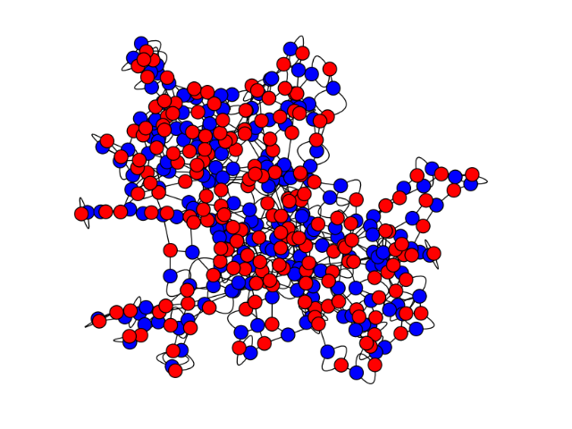

Common Graphs¶
All graphs in Sage can be built through the graphs object. In order to
build a complete graph on 15 elements, one can do:
sage: g = graphs.CompleteGraph(15)
To get a path with 4 vertices, and the house graph:
sage: p = graphs.PathGraph(4)
sage: h = graphs.HouseGraph()
More interestingly, one can get the list of all graphs that Sage knows how to
build by typing graphs. in Sage and then hitting tab.
Basic structures
Small Graphs
A small graph is just a single graph and has no parameter influencing the number of edges or vertices.
Platonic solids (ordered ascending by number of vertices)
TetrahedralGraph |
HexahedralGraph |
DodecahedralGraph |
OctahedralGraph |
IcosahedralGraph |
Families of graphs
A family of graph is an infinite set of graphs which can be indexed by fixed number of parameters, e.g. two integer parameters. (A method whose name starts with a small letter does not return a single graph object but a graph iterator or a list of graphs or ...)
Graphs from classical geometries over finite fields
A number of classes of graphs related to geometries over finite fields and quadrics and Hermitean varieties there.
Chessboard Graphs
BishopGraph |
KnightGraph |
RookGraph |
KingGraph |
QueenGraph |
Intersection graphs
These graphs are generated by geometric representations. The objects of the representation correspond to the graph vertices and the intersections of objects yield the graph edges.
IntersectionGraph |
OrthogonalArrayBlockGraph |
ToleranceGraph |
IntervalGraph |
PermutationGraph |
Random graphs
Graphs with a given degree sequence
DegreeSequence |
DegreeSequenceConfigurationModel |
DegreeSequenceTree |
DegreeSequenceBipartite |
DegreeSequenceExpected |
Miscellaneous
WorldMap |
AUTHORS:
- Robert Miller (2006-11-05): initial version, empty, random, petersen
- Emily Kirkman (2006-11-12): basic structures, node positioning for all constructors
- Emily Kirkman (2006-11-19): docstrings, examples
- William Stein (2006-12-05): Editing.
- Robert Miller (2007-01-16): Cube generation and plotting
- Emily Kirkman (2007-01-16): more basic structures, docstrings
- Emily Kirkman (2007-02-14): added more named graphs
- Robert Miller (2007-06-08-11): Platonic solids, random graphs, graphs with a given degree sequence, random directed graphs
- Robert Miller (2007-10-24): Isomorph free exhaustive generation
- Nathann Cohen (2009-08-12): WorldMap
- Michael Yurko (2009-9-01): added hyperstar, (n,k)-star, n-star, and bubblesort graphs
- Anders Jonsson (2009-10-15): added generalized Petersen graphs
- Harald Schilly and Yann Laigle-Chapuy (2010-03-24): added Fibonacci Tree
- Jason Grout (2010-06-04): cospectral_graphs
- Edward Scheinerman (2010-08-11): RandomTree
- Ed Scheinerman (2010-08-21): added Grotzsch graph and Mycielski graphs
- Ed Scheinerman (2010-11-15): added RandomTriangulation
- Minh Van Nguyen (2010-11-26): added more named graphs
- Keshav Kini (2011-02-16): added Shrikhande and Dyck graphs
- David Coudert (2012-02-10): new RandomGNP generator
- David Coudert (2012-08-02): added chessboard graphs: Queen, King, Knight, Bishop, and Rook graphs
- Nico Van Cleemput (2013-05-26): added fullerenes
- Nico Van Cleemput (2013-07-01): added benzenoids
- Birk Eisermann (2013-07-29): new section ‘intersection graphs’, added (random, bounded) tolerance graphs
- Marco Cognetta (2016-03-03): added TuranGraph
Functions and methods¶
-
class
sage.graphs.graph_generators.GraphGenerators¶ A class consisting of constructors for several common graphs, as well as orderly generation of isomorphism class representatives. See the
module's helpfor a list of supported constructors.A list of all graphs and graph structures (other than isomorphism class representatives) in this database is available via tab completion. Type “graphs.” and then hit the tab key to see which graphs are available.
The docstrings include educational information about each named graph with the hopes that this class can be used as a reference.
For all the constructors in this class (except the octahedral, dodecahedral, random and empty graphs), the position dictionary is filled to override the spring-layout algorithm.
ORDERLY GENERATION:
graphs(vertices, property=lambda x: True, augment='edges', size=None)
This syntax accesses the generator of isomorphism class representatives. Iterates over distinct, exhaustive representatives.
Also: see the use of the nauty package for generating graphs at the
nauty_geng()method.INPUT:
vertices– natural number.property– (default:lambda x: True) any property to be tested on graphs before generation, but note that in general the graphs produced are not the same as those produced by using the property function to filter a list of graphs produced by using thelambda x: Truedefault. The generation process assumes the property has certain characteristics set by theaugmentargument, and only in the case of inherited properties such that all subgraphs of the relevant kind (foraugment='edges'oraugment='vertices') of a graph with the property also possess the property will there be no missing graphs. (Thepropertyargument is ignored ifdegree_sequenceis specified.)augment– (default:'edges') possible values:'edges'– augments a fixed number of vertices by adding one edge. In this case, all graphs on exactlyn=verticesare generated. If for any graph G satisfying the property, every subgraph, obtained from G by deleting one edge but not the vertices incident to that edge, satisfies the property, then this will generate all graphs with that property. If this does not hold, then all the graphs generated will satisfy the property, but there will be some missing.'vertices'– augments by adding a vertex and edges incident to that vertex. In this case, all graphs up ton=verticesare generated. If for any graph G satisfying the property, every subgraph, obtained from G by deleting one vertex and only edges incident to that vertex, satisfies the property, then this will generate all graphs with that property. If this does not hold, then all the graphs generated will satisfy the property, but there will be some missing.
size– (default:None) the size of the graph to be generated.degree_sequence– (default:None) a sequence of non-negative integers, orNone. If specified, the generated graphs will have these integers for degrees. In this case, property and size are both ignored.loops– (default:False) whether to allow loops in the graph or not.implementation– (default:'c_graph') which underlying implementation to use (seeGraph?).sparse– (default:True) ignored if implementation is not'c_graph'.copy(boolean) – If set toTrue(default) this method makes copies of the graphs before returning them. If set toFalsethe method returns the graph it is working on. The second alternative is faster, but modifying any of the graph instances returned by the method may break the function’s behaviour, as it is using these graphs to compute the next ones : only usecopy_graph = Falsewhen you stick to reading the graphs returned.
EXAMPLES:
Print graphs on 3 or less vertices:
sage: for G in graphs(3, augment='vertices'): ....: print(G) Graph on 0 vertices Graph on 1 vertex Graph on 2 vertices Graph on 3 vertices Graph on 3 vertices Graph on 3 vertices Graph on 2 vertices Graph on 3 vertices
Note that we can also get graphs with underlying Cython implementation:
sage: for G in graphs(3, augment='vertices', implementation='c_graph'): ....: print(G) Graph on 0 vertices Graph on 1 vertex Graph on 2 vertices Graph on 3 vertices Graph on 3 vertices Graph on 3 vertices Graph on 2 vertices Graph on 3 vertices
Print graphs on 3 vertices.
sage: for G in graphs(3): ....: print(G) Graph on 3 vertices Graph on 3 vertices Graph on 3 vertices Graph on 3 vertices
Generate all graphs with 5 vertices and 4 edges.
sage: L = graphs(5, size=4) sage: len(list(L)) 6
Generate all graphs with 5 vertices and up to 4 edges.
sage: L = list(graphs(5, lambda G: G.size() <= 4)) sage: len(L) 14 sage: graphs_list.show_graphs(L) # long time
Generate all graphs with up to 5 vertices and up to 4 edges.
sage: L = list(graphs(5, lambda G: G.size() <= 4, augment='vertices')) sage: len(L) 31 sage: graphs_list.show_graphs(L) # long time
Generate all graphs with degree at most 2, up to 6 vertices.
sage: property = lambda G: ( max([G.degree(v) for v in G] + [0]) <= 2 ) sage: L = list(graphs(6, property, augment='vertices')) sage: len(L) 45
Generate all bipartite graphs on up to 7 vertices: (see OEIS sequence A033995)
sage: L = list( graphs(7, lambda G: G.is_bipartite(), augment='vertices') ) sage: [len([g for g in L if g.order() == i]) for i in [1..7]] [1, 2, 3, 7, 13, 35, 88]
Generate all bipartite graphs on exactly 7 vertices:
sage: L = list( graphs(7, lambda G: G.is_bipartite()) ) sage: len(L) 88
Generate all bipartite graphs on exactly 8 vertices:
sage: L = list( graphs(8, lambda G: G.is_bipartite()) ) # long time sage: len(L) # long time 303
Remember that the property argument does not behave as a filter, except for appropriately inheritable properties:
sage: property = lambda G: G.is_vertex_transitive() sage: len(list(graphs(4, property))) 1 sage: len(filter(property, graphs(4))) 4 sage: property = lambda G: G.is_bipartite() sage: len(list(graphs(4, property))) 7 sage: len(filter(property, graphs(4))) 7
Generate graphs on the fly: (see OEIS sequence A000088)
sage: for i in range(0, 7): ....: print(len(list(graphs(i)))) 1 1 2 4 11 34 156
Generate all simple graphs, allowing loops: (see OEIS sequence A000666)
sage: L = list(graphs(5,augment='vertices',loops=True)) # long time sage: for i in [0..5]: # long time ....: print((i, len([g for g in L if g.order() == i]))) # long time (0, 1) (1, 2) (2, 6) (3, 20) (4, 90) (5, 544)
Generate all graphs with a specified degree sequence (see OEIS sequence A002851):
sage: for i in [4,6,8]: # long time (4s on sage.math, 2012) ....: print((i, len([g for g in graphs(i, degree_sequence=[3]*i) if g.is_connected()]))) (4, 1) (6, 2) (8, 5) sage: for i in [4,6,8]: # long time (7s on sage.math, 2012) ....: print((i, len([g for g in graphs(i, augment='vertices', degree_sequence=[3]*i) if g.is_connected()]))) (4, 1) (6, 2) (8, 5)
sage: print((10, len([g for g in graphs(10,degree_sequence=[3]*10) if g.is_connected()]))) # not tested (10, 19)
Make sure that the graphs are really independent and the generator survives repeated vertex removal (trac ticket #8458):
sage: for G in graphs(3): ....: G.delete_vertex(0) ....: print(G.order()) 2 2 2 2
REFERENCE:
- Brendan D. McKay, Isomorph-Free Exhaustive generation. Journal of Algorithms, Volume 26, Issue 2, February 1998, pages 306-324.
-
static
AffineOrthogonalPolarGraph(d, q, sign='+')¶ Returns the affine polar graph \(VO^+(d,q),VO^-(d,q)\) or \(VO(d,q)\).
Affine Polar graphs are built from a \(d\)-dimensional vector space over \(F_q\), and a quadratic form which is hyperbolic, elliptic or parabolic according to the value of
sign.Note that \(VO^+(d,q),VO^-(d,q)\) are strongly regular graphs, while \(VO(d,q)\) is not.
For more information on Affine Polar graphs, see Affine Polar Graphs page of Andries Brouwer’s website.
INPUT:
d(integer) –dmust be even ifsign != None, and odd otherwise.q(integer) – a power of a prime number, as \(F_q\) must exist.sign– must be equal to"+","-", orNoneto compute (respectively) \(VO^+(d,q),VO^-(d,q)\) or \(VO(d,q)\). By defaultsign="+".
Note
The graph \(VO^\epsilon(d,q)\) is the graph induced by the non-neighbors of a vertex in an
Orthogonal Polar Graph\(O^\epsilon(d+2,q)\).EXAMPLES:
The
Brouwer-Haemers graphis isomorphic to \(VO^-(4,3)\):sage: g = graphs.AffineOrthogonalPolarGraph(4,3,"-") sage: g.is_isomorphic(graphs.BrouwerHaemersGraph()) True
Some examples from Brouwer’s table or strongly regular graphs:
sage: g = graphs.AffineOrthogonalPolarGraph(6,2,"-"); g Affine Polar Graph VO^-(6,2): Graph on 64 vertices sage: g.is_strongly_regular(parameters=True) (64, 27, 10, 12) sage: g = graphs.AffineOrthogonalPolarGraph(6,2,"+"); g Affine Polar Graph VO^+(6,2): Graph on 64 vertices sage: g.is_strongly_regular(parameters=True) (64, 35, 18, 20)
When
sign is None:sage: g = graphs.AffineOrthogonalPolarGraph(5,2,None); g Affine Polar Graph VO^-(5,2): Graph on 32 vertices sage: g.is_strongly_regular(parameters=True) False sage: g.is_regular() True sage: g.is_vertex_transitive() True
-
static
AhrensSzekeresGeneralizedQuadrangleGraph(q, dual=False)¶ Return the collinearity graph of the generalized quadrangle \(AS(q)\), or of its dual
Let \(q\) be an odd prime power. \(AS(q)\) is a generalized quadrangle [GQwiki] of order \((q-1,q+1)\), see 3.1.5 in [PT09]. Its points are elements of \(F_q^3\), and lines are sets of size \(q\) of the form
- \(\{ (\sigma, a, b) \mid \sigma\in F_q \}\)
- \(\{ (a, \sigma, b) \mid \sigma\in F_q \}\)
- \(\{ (c \sigma^2 - b \sigma + a, -2 c \sigma + b, \sigma) \mid \sigma\in F_q \}\),
where \(a\), \(b\), \(c\) are arbitrary elements of \(F_q\).
INPUT:
q– a power of an odd prime numberdual– ifFalse(default), return the collinearity graph of \(AS(q)\). Otherwise return the collinearity graph of the dual \(AS(q)\).
EXAMPLES:
sage: g=graphs.AhrensSzekeresGeneralizedQuadrangleGraph(5); g AS(5); GQ(4, 6): Graph on 125 vertices sage: g.is_strongly_regular(parameters=True) (125, 28, 3, 7) sage: g=graphs.AhrensSzekeresGeneralizedQuadrangleGraph(5,dual=True); g AS(5)*; GQ(6, 4): Graph on 175 vertices sage: g.is_strongly_regular(parameters=True) (175, 30, 5, 5)
REFERENCE:
[GQwiki] (1, 2, 3) Generalized quadrangle [PT09] (1, 2, 3) S. Payne, J. A. Thas. Finite generalized quadrangles. European Mathematical Society, 2nd edition, 2009.
-
static
Balaban10Cage(embedding=1)¶ Returns the Balaban 10-cage.
The Balaban 10-cage is a 3-regular graph with 70 vertices and 105 edges. See its Wikipedia page.
The default embedding gives a deeper understanding of the graph’s automorphism group. It is divided into 4 layers (each layer being a set of points at equal distance from the drawing’s center). From outside to inside:
- L1: The outer layer (vertices which are the furthest from the origin) is actually the disjoint union of two cycles of length 10.
- L2: The second layer is an independent set of 20 vertices.
- L3: The third layer is a matching on 10 vertices.
- L4: The inner layer (vertices which are the closest from the origin) is also the disjoint union of two cycles of length 10.
This graph is not vertex-transitive, and its vertices are partitioned into 3 orbits: L2, L3, and the union of L1 of L4 whose elements are equivalent.
INPUT:
embedding– two embeddings are available, and can be selected by settingembeddingto be either 1 or 2.
EXAMPLES:
sage: g = graphs.Balaban10Cage() sage: g.girth() 10 sage: g.chromatic_number() 2 sage: g.diameter() 6 sage: g.is_hamiltonian() True sage: g.show(figsize=[10,10]) # long time
TESTS:
sage: graphs.Balaban10Cage(embedding='foo') Traceback (most recent call last): ... ValueError: The value of embedding must be 1 or 2.
-
static
Balaban11Cage(embedding=1)¶ Returns the Balaban 11-cage.
For more information, see this Wikipedia article on the Balaban 11-cage.
INPUT:
embedding– three embeddings are available, and can be selected by settingembeddingto be 1, 2, or 3.- The first embedding is the one appearing on page 9 of the
Fifth Annual Graph Drawing Contest report [FAGDC]. It
separates vertices based on their eccentricity (see
eccentricity()). - The second embedding has been produced just for Sage and is meant to emphasize the automorphism group’s 6 orbits.
- The last embedding is the default one produced by the
LCFGraph()constructor.
- The first embedding is the one appearing on page 9 of the
Fifth Annual Graph Drawing Contest report [FAGDC]. It
separates vertices based on their eccentricity (see
Note
The vertex labeling changes according to the value of
embedding=1.EXAMPLES:
Basic properties:
sage: g = graphs.Balaban11Cage() sage: g.order() 112 sage: g.size() 168 sage: g.girth() 11 sage: g.diameter() 8 sage: g.automorphism_group().cardinality() 64
Our many embeddings:
sage: g1 = graphs.Balaban11Cage(embedding=1) sage: g2 = graphs.Balaban11Cage(embedding=2) sage: g3 = graphs.Balaban11Cage(embedding=3) sage: g1.show(figsize=[10,10]) # long time sage: g2.show(figsize=[10,10]) # long time sage: g3.show(figsize=[10,10]) # long time
Proof that the embeddings are the same graph:
sage: g1.is_isomorphic(g2) # g2 and g3 are obviously isomorphic True
TESTS:
sage: graphs.Balaban11Cage(embedding='xyzzy') Traceback (most recent call last): ... ValueError: The value of embedding must be 1, 2, or 3.
REFERENCES:
[FAGDC] Fifth Annual Graph Drawing Contest P. Eaded, J. Marks, P.Mutzel, S. North http://www.merl.com/papers/docs/TR98-16.pdf
-
static
BalancedTree(r, h)¶ Returns the perfectly balanced tree of height \(h \geq 1\), whose root has degree \(r \geq 2\).
The number of vertices of this graph is \(1 + r + r^2 + \cdots + r^h\), that is, \(\frac{r^{h+1} - 1}{r - 1}\). The number of edges is one less than the number of vertices.
INPUT:
r– positive integer \(\geq 2\). The degree of the root node.h– positive integer \(\geq 1\). The height of the balanced tree.
OUTPUT:
The perfectly balanced tree of height \(h \geq 1\) and whose root has degree \(r \geq 2\). A
NetworkXErroris returned if \(r < 2\) or \(h < 1\).ALGORITHM:
Uses NetworkX.
EXAMPLES:
A balanced tree whose root node has degree \(r = 2\), and of height \(h = 1\), has order 3 and size 2:
sage: G = graphs.BalancedTree(2, 1); G Balanced tree: Graph on 3 vertices sage: G.order(); G.size() 3 2 sage: r = 2; h = 1 sage: v = 1 + r sage: v; v - 1 3 2
Plot a balanced tree of height 5, whose root node has degree \(r = 3\):
sage: G = graphs.BalancedTree(3, 5) sage: G.show() # long time
A tree is bipartite. If its vertex set is finite, then it is planar.
sage: r = randint(2, 5); h = randint(1, 7) sage: T = graphs.BalancedTree(r, h) sage: T.is_bipartite() True sage: T.is_planar() True sage: v = (r^(h + 1) - 1) / (r - 1) sage: T.order() == v True sage: T.size() == v - 1 True
TESTS:
Normally we would only consider balanced trees whose root node has degree \(r \geq 2\), but the construction degenerates gracefully:
sage: graphs.BalancedTree(1, 10) Balanced tree: Graph on 2 vertices sage: graphs.BalancedTree(-1, 10) Balanced tree: Graph on 1 vertex
Similarly, we usually want the tree must have height \(h \geq 1\) but the algorithm also degenerates gracefully here:
sage: graphs.BalancedTree(3, 0) Balanced tree: Graph on 1 vertex sage: graphs.BalancedTree(5, -2) Balanced tree: Graph on 0 vertices sage: graphs.BalancedTree(-2,-2) Balanced tree: Graph on 0 vertices
-
static
BarbellGraph(n1, n2)¶ Returns a barbell graph with
2*n1 + n2nodes. The argumentn1must be greater than or equal to 2.A barbell graph is a basic structure that consists of a path graph of order
n2connecting two complete graphs of ordern1each.This constructor depends on NetworkX numeric labels. In this case, the
n1-th node connects to the path graph from one complete graph and then1 + n2 + 1-th node connects to the path graph from the other complete graph.INPUT:
n1– integer \(\geq 2\). The order of each of the two complete graphs.n2– nonnegative integer. The order of the path graph connecting the two complete graphs.
OUTPUT:
A barbell graph of order
2*n1 + n2. AValueErroris returned ifn1 < 2orn2 < 0.ALGORITHM:
Uses NetworkX.
PLOTTING:
Upon construction, the position dictionary is filled to override the spring-layout algorithm. By convention, each barbell graph will be displayed with the two complete graphs in the lower-left and upper-right corners, with the path graph connecting diagonally between the two. Thus the
n1-th node will be drawn at a 45 degree angle from the horizontal right center of the first complete graph, and then1 + n2 + 1-th node will be drawn 45 degrees below the left horizontal center of the second complete graph.EXAMPLES:
Construct and show a barbell graph
Bar = 4,Bells = 9:sage: g = graphs.BarbellGraph(9, 4); g Barbell graph: Graph on 22 vertices sage: g.show() # long time
An
n1 >= 2,n2 >= 0barbell graph has order2*n1 + n2. It has the complete graph onn1vertices as a subgraph. It also has the path graph onn2vertices as a subgraph.sage: n1 = randint(2, 2*10^2) sage: n2 = randint(0, 2*10^2) sage: g = graphs.BarbellGraph(n1, n2) sage: v = 2*n1 + n2 sage: g.order() == v True sage: K_n1 = graphs.CompleteGraph(n1) sage: P_n2 = graphs.PathGraph(n2) sage: s_K = g.subgraph_search(K_n1, induced=True) sage: s_P = g.subgraph_search(P_n2, induced=True) sage: K_n1.is_isomorphic(s_K) True sage: P_n2.is_isomorphic(s_P) True
Create several barbell graphs in a Sage graphics array:
sage: g = [] sage: j = [] sage: for i in range(6): ... k = graphs.BarbellGraph(i + 2, 4) ... g.append(k) ... sage: for i in range(2): ... n = [] ... for m in range(3): ... n.append(g[3*i + m].plot(vertex_size=50, vertex_labels=False)) ... j.append(n) ... sage: G = sage.plot.graphics.GraphicsArray(j) sage: G.show() # long time
TESTS:
The input
n1must be \(\geq 2\):sage: graphs.BarbellGraph(1, randint(0, 10^6)) Traceback (most recent call last): ... ValueError: Invalid graph description, n1 should be >= 2 sage: graphs.BarbellGraph(randint(-10^6, 1), randint(0, 10^6)) Traceback (most recent call last): ... ValueError: Invalid graph description, n1 should be >= 2
The input
n2must be \(\geq 0\):sage: graphs.BarbellGraph(randint(2, 10^6), -1) Traceback (most recent call last): ... ValueError: Invalid graph description, n2 should be >= 0 sage: graphs.BarbellGraph(randint(2, 10^6), randint(-10^6, -1)) Traceback (most recent call last): ... ValueError: Invalid graph description, n2 should be >= 0 sage: graphs.BarbellGraph(randint(-10^6, 1), randint(-10^6, -1)) Traceback (most recent call last): ... ValueError: Invalid graph description, n1 should be >= 2
-
static
BidiakisCube()¶ Returns the Bidiakis cube.
For more information, see this Wikipedia article on the Bidiakis cube.
EXAMPLES:
The Bidiakis cube is a 3-regular graph having 12 vertices and 18 edges. This means that each vertex has a degree of 3.
sage: g = graphs.BidiakisCube(); g Bidiakis cube: Graph on 12 vertices sage: g.show() # long time sage: g.order() 12 sage: g.size() 18 sage: g.is_regular(3) True
It is a Hamiltonian graph with diameter 3 and girth 4:
sage: g.is_hamiltonian() True sage: g.diameter() 3 sage: g.girth() 4
It is a planar graph with characteristic polynomial \((x - 3) (x - 2) (x^4) (x + 1) (x + 2) (x^2 + x - 4)^2\) and chromatic number 3:
sage: g.is_planar() True sage: bool(g.characteristic_polynomial() == expand((x - 3) * (x - 2) * (x^4) * (x + 1) * (x + 2) * (x^2 + x - 4)^2)) True sage: g.chromatic_number() 3
-
static
BiggsSmithGraph(embedding=1)¶ Returns the Biggs-Smith graph.
For more information, see this Wikipedia article on the Biggs-Smith graph.
INPUT:
embedding– two embeddings are available, and can be selected by settingembeddingto be 1 or 2.
EXAMPLES:
Basic properties:
sage: g = graphs.BiggsSmithGraph() sage: g.order() 102 sage: g.size() 153 sage: g.girth() 9 sage: g.diameter() 7 sage: g.automorphism_group().cardinality() 2448 sage: g.show(figsize=[10, 10]) # long time
The other embedding:
sage: graphs.BiggsSmithGraph(embedding=2).show()
TESTS:
sage: graphs.BiggsSmithGraph(embedding='xyzzy') Traceback (most recent call last): ... ValueError: The value of embedding must be 1 or 2.
-
static
BishopGraph(dim_list, radius=None, relabel=False)¶ Returns the \(d\)-dimensional Bishop Graph with prescribed dimensions.
The 2-dimensional Bishop Graph of parameters \(n\) and \(m\) is a graph with \(nm\) vertices in which each vertex represents a square in an \(n \times m\) chessboard, and each edge corresponds to a legal move by a bishop.
The \(d\)-dimensional Bishop Graph with \(d >= 2\) has for vertex set the cells of a \(d\)-dimensional grid with prescribed dimensions, and each edge corresponds to a legal move by a bishop in any pairs of dimensions.
The Bishop Graph is not connected.
INPUT:
dim_list– an iterable object (list, set, dict) providing the dimensions \(n_1, n_2, \ldots, n_d\), with \(n_i \geq 1\), of the chessboard.radius– (default:None) by setting the radius to a positive integer, one may decrease the power of the bishop to at mostradiussteps.relabel– (default:False) a boolean set toTrueif vertices must be relabeled as integers.
EXAMPLES:
The (n,m)-Bishop Graph is not connected:
sage: G = graphs.BishopGraph( [3, 4] ) sage: G.is_connected() False
The Bishop Graph can be obtained from Knight Graphs:
sage: for d in xrange(3,12): # long time ....: H = Graph() ....: for r in xrange(1,d+1): ....: B = graphs.BishopGraph([d,d],radius=r) ....: H.add_edges( graphs.KnightGraph([d,d],one=r,two=r).edges() ) ....: if not B.is_isomorphic(H): ....: print("that's not good!")
-
static
BlanusaFirstSnarkGraph()¶ Returns the first Blanusa Snark Graph.
The Blanusa graphs are two snarks on 18 vertices and 27 edges. For more information on them, see the Wikipedia article Blanusa_snarks.
See also
EXAMPLES:
sage: g = graphs.BlanusaFirstSnarkGraph() sage: g.order() 18 sage: g.size() 27 sage: g.diameter() 4 sage: g.girth() 5 sage: g.automorphism_group().cardinality() 8
-
static
BlanusaSecondSnarkGraph()¶ Returns the second Blanusa Snark Graph.
The Blanusa graphs are two snarks on 18 vertices and 27 edges. For more information on them, see the Wikipedia article Blanusa_snarks.
See also
EXAMPLES:
sage: g = graphs.BlanusaSecondSnarkGraph() sage: g.order() 18 sage: g.size() 27 sage: g.diameter() 4 sage: g.girth() 5 sage: g.automorphism_group().cardinality() 4
-
static
BrinkmannGraph()¶ Returns the Brinkmann graph.
For more information, see the Wikipedia article on the Brinkmann graph.
EXAMPLES:
The Brinkmann graph is a 4-regular graph having 21 vertices and 42 edges. This means that each vertex has degree 4.
sage: G = graphs.BrinkmannGraph(); G Brinkmann graph: Graph on 21 vertices sage: G.show() # long time sage: G.order() 21 sage: G.size() 42 sage: G.is_regular(4) True
It is an Eulerian graph with radius 3, diameter 3, and girth 5.
sage: G.is_eulerian() True sage: G.radius() 3 sage: G.diameter() 3 sage: G.girth() 5
The Brinkmann graph is also Hamiltonian with chromatic number 4:
sage: G.is_hamiltonian() True sage: G.chromatic_number() 4
Its automorphism group is isomorphic to \(D_7\):
sage: ag = G.automorphism_group() sage: ag.is_isomorphic(DihedralGroup(7)) True
-
static
BrouwerHaemersGraph()¶ Returns the Brouwer-Haemers Graph.
The Brouwer-Haemers is the only strongly regular graph of parameters \((81,20,1,6)\). It is build in Sage as the Affine Orthogonal graph \(VO^-(6,3)\). For more information on this graph, see its corresponding page on Andries Brouwer’s website.
EXAMPLE:
sage: g = graphs.BrouwerHaemersGraph() sage: g Brouwer-Haemers: Graph on 81 vertices
It is indeed strongly regular with parameters \((81,20,1,6)\):
sage: g.is_strongly_regular(parameters = True) # long time (81, 20, 1, 6)
Its has as eigenvalues \(20,2\) and \(-7\):
sage: set(g.spectrum()) == {20,2,-7} True
-
static
BubbleSortGraph(n)¶ Returns the bubble sort graph \(B(n)\).
The vertices of the bubble sort graph are the set of permutations on \(n\) symbols. Two vertices are adjacent if one can be obtained from the other by swapping the labels in the \(i\)-th and \((i+1)\)-th positions for \(1 \leq i \leq n-1\). In total, \(B(n)\) has order \(n!\). Swapping two labels as described previously corresponds to multiplying on the right the permutation corresponding to the node by an elementary transposition in the
SymmetricGroup.The bubble sort graph is the underlying graph of the
permutahedron().INPUT:
n– positive integer. The number of symbols to permute.
OUTPUT:
The bubble sort graph \(B(n)\) on \(n\) symbols. If \(n < 1\), a
ValueErroris returned.EXAMPLES:
sage: g = graphs.BubbleSortGraph(4); g Bubble sort: Graph on 24 vertices sage: g.plot() # long time Graphics object consisting of 61 graphics primitives
The bubble sort graph on \(n = 1\) symbol is the trivial graph \(K_1\):
sage: graphs.BubbleSortGraph(1) Bubble sort: Graph on 1 vertex
If \(n \geq 1\), then the order of \(B(n)\) is \(n!\):
sage: n = randint(1, 8) sage: g = graphs.BubbleSortGraph(n) sage: g.order() == factorial(n) True
See also
TESTS:
Input
nmust be positive:sage: graphs.BubbleSortGraph(0) Traceback (most recent call last): ... ValueError: Invalid number of symbols to permute, n should be >= 1 sage: graphs.BubbleSortGraph(randint(-10^6, 0)) Traceback (most recent call last): ... ValueError: Invalid number of symbols to permute, n should be >= 1
AUTHORS:
- Michael Yurko (2009-09-01)
-
static
BuckyBall()¶ Create the Bucky Ball graph.
This graph is a 3-regular 60-vertex planar graph. Its vertices and edges correspond precisely to the carbon atoms and bonds in buckminsterfullerene. When embedded on a sphere, its 12 pentagon and 20 hexagon faces are arranged exactly as the sections of a soccer ball.
EXAMPLES:
The Bucky Ball is planar.
sage: g = graphs.BuckyBall() sage: g.is_planar() True
The Bucky Ball can also be created by extracting the 1-skeleton of the Bucky Ball polyhedron, but this is much slower.
sage: g = polytopes.buckyball().vertex_graph() sage: g.remove_loops() sage: h = graphs.BuckyBall() sage: g.is_isomorphic(h) True
The graph is returned along with an attractive embedding.
sage: g = graphs.BuckyBall() sage: g.plot(vertex_labels=False, vertex_size=10).show() # long time
-
static
BullGraph()¶ Returns a bull graph with 5 nodes.
A bull graph is named for its shape. It’s a triangle with horns. For more information, see this Wikipedia article on the bull graph.
PLOTTING:
Upon construction, the position dictionary is filled to override the spring-layout algorithm. By convention, the bull graph is drawn as a triangle with the first node (0) on the bottom. The second and third nodes (1 and 2) complete the triangle. Node 3 is the horn connected to 1 and node 4 is the horn connected to node 2.
EXAMPLES:
Construct and show a bull graph:
sage: g = graphs.BullGraph(); g Bull graph: Graph on 5 vertices sage: g.show() # long time
The bull graph has 5 vertices and 5 edges. Its radius is 2, its diameter 3, and its girth 3. The bull graph is planar with chromatic number 3 and chromatic index also 3.
sage: g.order(); g.size() 5 5 sage: g.radius(); g.diameter(); g.girth() 2 3 3 sage: g.chromatic_number() 3
The bull graph has chromatic polynomial \(x(x - 2)(x - 1)^3\) and Tutte polynomial \(x^4 + x^3 + x^2 y\). Its characteristic polynomial is \(x(x^2 - x - 3)(x^2 + x - 1)\), which follows from the definition of characteristic polynomials for graphs, i.e. \(\det(xI - A)\), where \(x\) is a variable, \(A\) the adjacency matrix of the graph, and \(I\) the identity matrix of the same dimensions as \(A\).
sage: chrompoly = g.chromatic_polynomial() sage: bool(expand(x * (x - 2) * (x - 1)^3) == chrompoly) True sage: charpoly = g.characteristic_polynomial() sage: M = g.adjacency_matrix(); M [0 1 1 0 0] [1 0 1 1 0] [1 1 0 0 1] [0 1 0 0 0] [0 0 1 0 0] sage: Id = identity_matrix(ZZ, M.nrows()) sage: D = x*Id - M sage: bool(D.determinant() == charpoly) True sage: bool(expand(x * (x^2 - x - 3) * (x^2 + x - 1)) == charpoly) True
-
static
ButterflyGraph()¶ Returns the butterfly graph.
Let \(C_3\) be the cycle graph on 3 vertices. The butterfly or bowtie graph is obtained by joining two copies of \(C_3\) at a common vertex, resulting in a graph that is isomorphic to the friendship graph \(F_2\). For more information, see this Wikipedia article on the butterfly graph.
See also
EXAMPLES:
The butterfly graph is a planar graph on 5 vertices and having 6 edges.
sage: G = graphs.ButterflyGraph(); G Butterfly graph: Graph on 5 vertices sage: G.show() # long time sage: G.is_planar() True sage: G.order() 5 sage: G.size() 6
It has diameter 2, girth 3, and radius 1.
sage: G.diameter() 2 sage: G.girth() 3 sage: G.radius() 1
The butterfly graph is Eulerian, with chromatic number 3.
sage: G.is_eulerian() True sage: G.chromatic_number() 3
-
static
CameronGraph()¶ Returns the Cameron graph.
The Cameron graph is strongly regular with parameters \(v = 231, k = 30, \lambda = 9, \mu = 3\).
For more information on the Cameron graph, see http://www.win.tue.nl/~aeb/graphs/Cameron.html.
EXAMPLES:
sage: g = graphs.CameronGraph() sage: g.order() 231 sage: g.size() 3465 sage: g.is_strongly_regular(parameters = True) # long time (231, 30, 9, 3)
-
static
Cell120()¶ Returns the 120-Cell graph
This is the adjacency graph of the 120-cell. It has 600 vertices and 1200 edges. For more information, see the Wikipedia article 120-cell.
EXAMPLES:
sage: g = graphs.Cell120() # long time sage: g.size() # long time 1200 sage: g.is_regular(4) # long time True sage: g.is_vertex_transitive() # long time True
-
static
Cell600(embedding=1)¶ Returns the 600-Cell graph
This is the adjacency graph of the 600-cell. It has 120 vertices and 720 edges. For more information, see the Wikipedia article 600-cell.
INPUT:
embedding(1 (default) or 2) – two different embeddings for a plot.
EXAMPLES:
sage: g = graphs.Cell600() # long time sage: g.size() # long time 720 sage: g.is_regular(12) # long time True sage: g.is_vertex_transitive() # long time True
-
static
ChessboardGraphGenerator(dim_list, rook=True, rook_radius=None, bishop=True, bishop_radius=None, knight=True, knight_x=1, knight_y=2, relabel=False)¶ Returns a Graph built on a \(d\)-dimensional chessboard with prescribed dimensions and interconnections.
This function allows to generate many kinds of graphs corresponding to legal movements on a \(d\)-dimensional chessboard: Queen Graph, King Graph, Knight Graphs, Bishop Graph, and many generalizations. It also allows to avoid redondant code.
INPUT:
dim_list– an iterable object (list, set, dict) providing the dimensions \(n_1, n_2, \ldots, n_d\), with \(n_i \geq 1\), of the chessboard.rook– (default:True) boolean value indicating if the chess piece is able to move as a rook, that is at any distance along a dimension.rook_radius– (default: None) integer value restricting the rook-like movements to distance at most \(rook_radius\).bishop– (default:True) boolean value indicating if the chess piece is able to move like a bishop, that is along diagonals.bishop_radius– (default: None) integer value restricting the bishop-like movements to distance at most \(bishop_radius\).knight– (default:True) boolean value indicating if the chess piece is able to move like a knight.knight_x– (default: 1) integer indicating the number on steps the chess piece moves in one dimension when moving like a knight.knight_y– (default: 2) integer indicating the number on steps the chess piece moves in the second dimension when moving like a knight.relabel– (default:False) a boolean set toTrueif vertices must be relabeled as integers.
OUTPUT:
- A Graph build on a \(d\)-dimensional chessboard with prescribed dimensions, and with edges according given parameters.
- A string encoding the dimensions. This is mainly useful for providing names to graphs.
EXAMPLES:
A \((2,2)\)-King Graph is isomorphic to the complete graph on 4 vertices:
sage: G, _ = graphs.ChessboardGraphGenerator( [2,2] ) sage: G.is_isomorphic( graphs.CompleteGraph(4) ) True
A Rook’s Graph in 2 dimensions is isomporphic to the Cartesian product of 2 complete graphs:
sage: G, _ = graphs.ChessboardGraphGenerator( [3,4], rook=True, rook_radius=None, bishop=False, knight=False ) sage: H = ( graphs.CompleteGraph(3) ).cartesian_product( graphs.CompleteGraph(4) ) sage: G.is_isomorphic(H) True
TESTS:
Giving dimensions less than 2:
sage: graphs.ChessboardGraphGenerator( [0, 2] ) Traceback (most recent call last): ... ValueError: The dimensions must be positive integers larger than 1.
Giving non integer dimensions:
sage: graphs.ChessboardGraphGenerator( [4.5, 2] ) Traceback (most recent call last): ... ValueError: The dimensions must be positive integers larger than 1.
Giving too few dimensions:
sage: graphs.ChessboardGraphGenerator( [2] ) Traceback (most recent call last): ... ValueError: The chessboard must have at least 2 dimensions.
Giving a non-iterable object as first parameter:
sage: graphs.ChessboardGraphGenerator( 2, 3 ) Traceback (most recent call last): ... TypeError: The first parameter must be an iterable object.
Giving too small rook radius:
sage: graphs.ChessboardGraphGenerator( [2, 3], rook=True, rook_radius=0 ) Traceback (most recent call last): ... ValueError: The rook_radius must be either None or have an integer value >= 1.
Giving wrong values for knights movements:
sage: graphs.ChessboardGraphGenerator( [2, 3], rook=False, bishop=False, knight=True, knight_x=1, knight_y=-1 ) Traceback (most recent call last): ... ValueError: The knight_x and knight_y values must be integers of value >= 1.
-
static
ChvatalGraph()¶ Returns the Chvatal graph.
Chvatal graph is one of the few known graphs to satisfy Grunbaum’s conjecture that for every m, n, there is an m-regular, m-chromatic graph of girth at least n. For more information, see this Wikipedia article on the Chvatal graph.
EXAMPLES:
The Chvatal graph has 12 vertices and 24 edges. It is a 4-regular, 4-chromatic graph with radius 2, diameter 2, and girth 4.
sage: G = graphs.ChvatalGraph(); G Chvatal graph: Graph on 12 vertices sage: G.order(); G.size() 12 24 sage: G.degree() [4, 4, 4, 4, 4, 4, 4, 4, 4, 4, 4, 4] sage: G.chromatic_number() 4 sage: G.radius(); G.diameter(); G.girth() 2 2 4
TEST:
sage: import networkx sage: G = graphs.ChvatalGraph() sage: G.is_isomorphic(Graph(networkx.chvatal_graph())) True
-
static
CirculantGraph(n, adjacency)¶ Returns a circulant graph with n nodes.
A circulant graph has the property that the vertex \(i\) is connected with the vertices \(i+j\) and \(i-j\) for each j in adj.
INPUT:
n- number of vertices in the graphadjacency- the list of j values
PLOTTING: Upon construction, the position dictionary is filled to override the spring-layout algorithm. By convention, each circulant graph will be displayed with the first (0) node at the top, with the rest following in a counterclockwise manner.
Filling the position dictionary in advance adds O(n) to the constructor.
See also
sage.graphs.generic_graph.GenericGraph.is_circulant()– checks whether a (di)graph is circulant, and/or returns all possible sets of parameters.
EXAMPLES: Compare plotting using the predefined layout and networkx:
sage: import networkx sage: n = networkx.cycle_graph(23) sage: spring23 = Graph(n) sage: posdict23 = graphs.CirculantGraph(23,2) sage: spring23.show() # long time sage: posdict23.show() # long time
We next view many cycle graphs as a Sage graphics array. First we use the
CirculantGraphconstructor, which fills in the position dictionary:sage: g = [] sage: j = [] sage: for i in range(9): ... k = graphs.CirculantGraph(i+3,i) ... g.append(k) ... sage: for i in range(3): ... n = [] ... for m in range(3): ... n.append(g[3*i + m].plot(vertex_size=50, vertex_labels=False)) ... j.append(n) ... sage: G = sage.plot.graphics.GraphicsArray(j) sage: G.show() # long time
Compare to plotting with the spring-layout algorithm:
sage: g = [] sage: j = [] sage: for i in range(9): ... spr = networkx.cycle_graph(i+3) ... k = Graph(spr) ... g.append(k) ... sage: for i in range(3): ... n = [] ... for m in range(3): ... n.append(g[3*i + m].plot(vertex_size=50, vertex_labels=False)) ... j.append(n) ... sage: G = sage.plot.graphics.GraphicsArray(j) sage: G.show() # long time
Passing a 1 into adjacency should give the cycle.
sage: graphs.CirculantGraph(6,1)==graphs.CycleGraph(6) True sage: graphs.CirculantGraph(7,[1,3]).edges(labels=false) [(0, 1), (0, 3), (0, 4), (0, 6), (1, 2), (1, 4), (1, 5), (2, 3), (2, 5), (2, 6), (3, 4), (3, 6), (4, 5), (5, 6)]
-
static
CircularLadderGraph(n)¶ Returns a circular ladder graph with 2*n nodes.
A Circular ladder graph is a ladder graph that is connected at the ends, i.e.: a ladder bent around so that top meets bottom. Thus it can be described as two parallel cycle graphs connected at each corresponding node pair.
PLOTTING: Upon construction, the position dictionary is filled to override the spring-layout algorithm. By convention, the circular ladder graph is displayed as an inner and outer cycle pair, with the first n nodes drawn on the inner circle. The first (0) node is drawn at the top of the inner-circle, moving clockwise after that. The outer circle is drawn with the (n+1)th node at the top, then counterclockwise as well.
EXAMPLES: Construct and show a circular ladder graph with 26 nodes
sage: g = graphs.CircularLadderGraph(13) sage: g.show() # long time
Create several circular ladder graphs in a Sage graphics array
sage: g = [] sage: j = [] sage: for i in range(9): ....: k = graphs.CircularLadderGraph(i+3) ....: g.append(k) sage: for i in range(3): ....: n = [] ....: for m in range(3): ....: n.append(g[3*i + m].plot(vertex_size=50, vertex_labels=False)) ....: j.append(n) sage: G = sage.plot.graphics.GraphicsArray(j) sage: G.show() # long time
-
static
ClawGraph()¶ Returns a claw graph.
A claw graph is named for its shape. It is actually a complete bipartite graph with (n1, n2) = (1, 3).
PLOTTING: See CompleteBipartiteGraph.
EXAMPLES: Show a Claw graph
sage: (graphs.ClawGraph()).show() # long time
Inspect a Claw graph
sage: G = graphs.ClawGraph() sage: G Claw graph: Graph on 4 vertices
-
static
ClebschGraph()¶ Return the Clebsch graph.
EXAMPLES:
sage: g = graphs.ClebschGraph() sage: g.automorphism_group().cardinality() 1920 sage: g.girth() 4 sage: g.chromatic_number() 4 sage: g.diameter() 2 sage: g.show(figsize=[10, 10]) # long time
-
static
CompleteBipartiteGraph(n1, n2)¶ Returns a Complete Bipartite Graph sized n1+n2, with each of the nodes [0,(n1-1)] connected to each of the nodes [n1,(n2-1)] and vice versa.
A Complete Bipartite Graph is a graph with its vertices partitioned into two groups, V1 and V2. Each v in V1 is connected to every v in V2, and vice versa.
PLOTTING: Upon construction, the position dictionary is filled to override the spring-layout algorithm. By convention, each complete bipartite graph will be displayed with the first n1 nodes on the top row (at y=1) from left to right. The remaining n2 nodes appear at y=0, also from left to right. The shorter row (partition with fewer nodes) is stretched to the same length as the longer row, unless the shorter row has 1 node; in which case it is centered. The x values in the plot are in domain [0,maxn1,n2].
In the Complete Bipartite graph, there is a visual difference in using the spring-layout algorithm vs. the position dictionary used in this constructor. The position dictionary flattens the graph and separates the partitioned nodes, making it clear which nodes an edge is connected to. The Complete Bipartite graph plotted with the spring-layout algorithm tends to center the nodes in n1 (see spring_med in examples below), thus overlapping its nodes and edges, making it typically hard to decipher.
Filling the position dictionary in advance adds O(n) to the constructor. Feel free to race the constructors below in the examples section. The much larger difference is the time added by the spring-layout algorithm when plotting. (Also shown in the example below). The spring model is typically described as \(O(n^3)\), as appears to be the case in the NetworkX source code.
EXAMPLES: Two ways of constructing the complete bipartite graph, using different layout algorithms:
sage: import networkx sage: n = networkx.complete_bipartite_graph(389,157); spring_big = Graph(n) # long time sage: posdict_big = graphs.CompleteBipartiteGraph(389,157) # long time
Compare the plotting:
sage: n = networkx.complete_bipartite_graph(11,17) sage: spring_med = Graph(n) sage: posdict_med = graphs.CompleteBipartiteGraph(11,17)
Notice here how the spring-layout tends to center the nodes of n1
sage: spring_med.show() # long time sage: posdict_med.show() # long time
View many complete bipartite graphs with a Sage Graphics Array, with this constructor (i.e., the position dictionary filled):
sage: g = [] sage: j = [] sage: for i in range(9): ....: k = graphs.CompleteBipartiteGraph(i+1,4) ....: g.append(k) sage: for i in range(3): ....: n = [] ....: for m in range(3): ....: n.append(g[3*i + m].plot(vertex_size=50, vertex_labels=False)) ....: j.append(n) sage: G = sage.plot.graphics.GraphicsArray(j) sage: G.show() # long time
We compare to plotting with the spring-layout algorithm:
sage: g = [] sage: j = [] sage: for i in range(9): ....: spr = networkx.complete_bipartite_graph(i+1,4) ....: k = Graph(spr) ....: g.append(k) sage: for i in range(3): ....: n = [] ....: for m in range(3): ....: n.append(g[3*i + m].plot(vertex_size=50, vertex_labels=False)) ....: j.append(n) sage: G = sage.plot.graphics.GraphicsArray(j) sage: G.show() # long time
Trac ticket #12155:
sage: graphs.CompleteBipartiteGraph(5,6).complement() complement(Complete bipartite graph): Graph on 11 vertices
TESTS:
Prevent negative dimensions (trac ticket #18530):
sage: graphs.CompleteBipartiteGraph(-1,1) Traceback (most recent call last): ... ValueError: The arguments n1(=-1) and n2(=1) must be positive integers. sage: graphs.CompleteBipartiteGraph(1,-1) Traceback (most recent call last): ... ValueError: The arguments n1(=1) and n2(=-1) must be positive integers.
-
static
CompleteGraph(n)¶ Returns a complete graph on n nodes.
A Complete Graph is a graph in which all nodes are connected to all other nodes.
PLOTTING: Upon construction, the position dictionary is filled to override the spring-layout algorithm. By convention, each complete graph will be displayed with the first (0) node at the top, with the rest following in a counterclockwise manner.
In the complete graph, there is a big difference visually in using the spring-layout algorithm vs. the position dictionary used in this constructor. The position dictionary flattens the graph, making it clear which nodes an edge is connected to. But the complete graph offers a good example of how the spring-layout works. The edges push outward (everything is connected), causing the graph to appear as a 3-dimensional pointy ball. (See examples below).
EXAMPLES: We view many Complete graphs with a Sage Graphics Array, first with this constructor (i.e., the position dictionary filled):
sage: g = [] sage: j = [] sage: for i in range(9): ....: k = graphs.CompleteGraph(i+3) ....: g.append(k) sage: for i in range(3): ....: n = [] ....: for m in range(3): ....: n.append(g[3*i + m].plot(vertex_size=50, vertex_labels=False)) ....: j.append(n) sage: G = sage.plot.graphics.GraphicsArray(j) sage: G.show() # long time
We compare to plotting with the spring-layout algorithm:
sage: import networkx sage: g = [] sage: j = [] sage: for i in range(9): ....: spr = networkx.complete_graph(i+3) ....: k = Graph(spr) ....: g.append(k) sage: for i in range(3): ....: n = [] ....: for m in range(3): ....: n.append(g[3*i + m].plot(vertex_size=50, vertex_labels=False)) ....: j.append(n) sage: G = sage.plot.graphics.GraphicsArray(j) sage: G.show() # long time
Compare the constructors (results will vary)
sage: import networkx sage: t = cputime() sage: n = networkx.complete_graph(389); spring389 = Graph(n) sage: cputime(t) # random 0.59203700000000126 sage: t = cputime() sage: posdict389 = graphs.CompleteGraph(389) sage: cputime(t) # random 0.6680419999999998
We compare plotting:
sage: import networkx sage: n = networkx.complete_graph(23) sage: spring23 = Graph(n) sage: posdict23 = graphs.CompleteGraph(23) sage: spring23.show() # long time sage: posdict23.show() # long time
-
static
CompleteMultipartiteGraph(l)¶ Returns a complete multipartite graph.
INPUT:
l– a list of integers : the respective sizes of the components.
EXAMPLE:
A complete tripartite graph with sets of sizes \(5, 6, 8\):
sage: g = graphs.CompleteMultipartiteGraph([5, 6, 8]); g Multipartite Graph with set sizes [5, 6, 8]: Graph on 19 vertices
It clearly has a chromatic number of 3:
sage: g.chromatic_number() 3
-
static
CossidentePenttilaGraph(q)¶ Cossidente-Penttila \(((q^3+1)(q+1)/2,(q^2+1)(q-1)/2,(q-3)/2,(q-1)^2/2)\)-strongly regular graph
For each odd prime power \(q\), one can partition the points of the \(O_6^-(q)\)-generalized quadrange \(GQ(q,q^2)\) into two parts, so that on any of them the induced subgraph of the point graph of the GQ has parameters as above [CP05].
Directly follwing the construction in [CP05] is not efficient, as one then needs to construct the dual \(GQ(q^2,q)\). Thus we describe here a more efficient approach that we came up with, following a suggestion by T.Penttila. Namely, this partition is invariant under the subgroup \(H=\Omega_3(q^2)<O_6^-(q)\). We build the appropriate \(H\), which leaves the form \(B(X,Y,Z)=XY+Z^2\) invariant, and pick up two orbits of \(H\) on the \(F_q\)-points. One them is \(B\)-isotropic, and we take the representative \((1:0:0)\). The other one corresponds to the points of \(PG(2,q^2)\) that have all the lines on them either missing the conic specified by \(B\), or intersecting the conic in two points. We take \((1:1:e)\) as the representative. It suffices to pick \(e\) so that \(e^2+1\) is not a square in \(F_{q^2}\). Indeed, The conic can be viewed as the union of \(\{(0:1:0)\}\) and \(\{(1:-t^2:t) | t \in F_{q^2}\}\). The coefficients of a generic line on \((1:1:e)\) are \([1:-1-eb:b]\), for \(-1\neq eb\). Thus, to make sure the intersection with the conic is always even, we need that the discriminant of \(1+(1+eb)t^2+tb=0\) never vanishes, and this is if and only if \(e^2+1\) is not a square. Further, we need to adjust \(B\), by multiplying it by appropriately chosen \(\nu\), so that \((1:1:e)\) becomes isotropic under the relative trace norm \(\nu B(X,Y,Z)+(\nu B(X,Y,Z))^q\). The latter is used then to define the graph.
INPUT:
q– an odd prime power.
EXAMPLES:
For \(q=3\) one gets Sims-Gewirtz graph.
sage: G=graphs.CossidentePenttilaGraph(3) # optional - gap_packages (grape) sage: G.is_strongly_regular(parameters=True) # optional - gap_packages (grape) (56, 10, 0, 2)
For \(q>3\) one gets new graphs.
sage: G=graphs.CossidentePenttilaGraph(5) # optional - gap_packages (grape) sage: G.is_strongly_regular(parameters=True) # optional - gap_packages (grape) (378, 52, 1, 8)
TESTS:
sage: G=graphs.CossidentePenttilaGraph(7) # optional - gap_packages (grape) # long time sage: G.is_strongly_regular(parameters=True) # optional - gap_packages (grape) # long time (1376, 150, 2, 18) sage: graphs.CossidentePenttilaGraph(2) Traceback (most recent call last): ... ValueError: q(=2) must be an odd prime power
REFERENCES:
[CP05] (1, 2) A.Cossidente and T.Penttila Hemisystems on the Hermitian surface Journal of London Math. Soc. 72(2005), 731-741
-
static
CoxeterGraph()¶ Return the Coxeter graph.
See the Wikipedia page on the Coxeter graph.
EXAMPLES:
sage: g = graphs.CoxeterGraph() sage: g.automorphism_group().cardinality() 336 sage: g.girth() 7 sage: g.chromatic_number() 3 sage: g.diameter() 4 sage: g.show(figsize=[10, 10]) # long time
-
static
CubeGraph(n)¶ Returns the hypercube in \(n\) dimensions.
The hypercube in \(n\) dimension is build upon the binary strings on \(n\) bits, two of them being adjacent if they differ in exactly one bit. Hence, the distance between two vertices in the hypercube is the Hamming distance.
EXAMPLES:
The distance between \(0100110\) and \(1011010\) is \(5\), as expected
sage: g = graphs.CubeGraph(7) sage: g.distance('0100110','1011010') 5
Plot several \(n\)-cubes in a Sage Graphics Array
sage: g = [] sage: j = [] sage: for i in range(6): ... k = graphs.CubeGraph(i+1) ... g.append(k) ... sage: for i in range(2): ... n = [] ... for m in range(3): ... n.append(g[3*i + m].plot(vertex_size=50, vertex_labels=False)) ... j.append(n) ... sage: G = sage.plot.graphics.GraphicsArray(j) sage: G.show(figsize=[6,4]) # long time
Use the plot options to display larger \(n\)-cubes
sage: g = graphs.CubeGraph(9) sage: g.show(figsize=[12,12],vertex_labels=False, vertex_size=20) # long time
AUTHORS:
- Robert Miller
-
static
CycleGraph(n)¶ Returns a cycle graph with n nodes.
A cycle graph is a basic structure which is also typically called an n-gon.
PLOTTING: Upon construction, the position dictionary is filled to override the spring-layout algorithm. By convention, each cycle graph will be displayed with the first (0) node at the top, with the rest following in a counterclockwise manner.
The cycle graph is a good opportunity to compare efficiency of filling a position dictionary vs. using the spring-layout algorithm for plotting. Because the cycle graph is very symmetric, the resulting plots should be similar (in cases of small n).
Filling the position dictionary in advance adds O(n) to the constructor.
EXAMPLES: Compare plotting using the predefined layout and networkx:
sage: import networkx sage: n = networkx.cycle_graph(23) sage: spring23 = Graph(n) sage: posdict23 = graphs.CycleGraph(23) sage: spring23.show() # long time sage: posdict23.show() # long time
We next view many cycle graphs as a Sage graphics array. First we use the
CycleGraphconstructor, which fills in the position dictionary:sage: g = [] sage: j = [] sage: for i in range(9): ....: k = graphs.CycleGraph(i+3) ....: g.append(k) sage: for i in range(3): ....: n = [] ....: for m in range(3): ....: n.append(g[3*i + m].plot(vertex_size=50, vertex_labels=False)) ....: j.append(n) sage: G = sage.plot.graphics.GraphicsArray(j) sage: G.show() # long time
Compare to plotting with the spring-layout algorithm:
sage: g = [] sage: j = [] sage: for i in range(9): ....: spr = networkx.cycle_graph(i+3) ....: k = Graph(spr) ....: g.append(k) sage: for i in range(3): ....: n = [] ....: for m in range(3): ....: n.append(g[3*i + m].plot(vertex_size=50, vertex_labels=False)) ....: j.append(n) sage: G = sage.plot.graphics.GraphicsArray(j) sage: G.show() # long time
-
static
DegreeSequence(deg_sequence)¶ Returns a graph with the given degree sequence. Raises a NetworkX error if the proposed degree sequence cannot be that of a graph.
Graph returned is the one returned by the Havel-Hakimi algorithm, which constructs a simple graph by connecting vertices of highest degree to other vertices of highest degree, resorting the remaining vertices by degree and repeating the process. See Theorem 1.4 in [CharLes1996].
INPUT:
deg_sequence- a list of integers with each entry corresponding to the degree of a different vertex.
EXAMPLES:
sage: G = graphs.DegreeSequence([3,3,3,3]) sage: G.edges(labels=False) [(0, 1), (0, 2), (0, 3), (1, 2), (1, 3), (2, 3)] sage: G.show() # long time
sage: G = graphs.DegreeSequence([3,3,3,3,3,3,3,3,3,3,3,3,3,3,3,3,3,3,3,3,3,3]) sage: G.show() # long time
sage: G = graphs.DegreeSequence([4,4,4,4,4,4,4,4]) sage: G.show() # long time
sage: G = graphs.DegreeSequence([1,2,3,4,3,4,3,2,3,2,1]) sage: G.show() # long time
REFERENCE:
[CharLes1996] Chartrand, G. and Lesniak, L.: Graphs and Digraphs. Chapman and Hall/CRC, 1996.
-
static
DegreeSequenceBipartite(s1, s2)¶ Returns a bipartite graph whose two sets have the given degree sequences.
Given two different sequences of degrees \(s_1\) and \(s_2\), this functions returns ( if possible ) a bipartite graph on sets \(A\) and \(B\) such that the vertices in \(A\) have \(s_1\) as their degree sequence, while \(s_2\) is the degree sequence of the vertices in \(B\).
INPUT:
s_1– list of integers corresponding to the degree sequence of the first set.s_2– list of integers corresponding to the degree sequence of the second set.
ALGORITHM:
This function works through the computation of the matrix given by the Gale-Ryser theorem, which is in this case the adjacency matrix of the bipartite graph.
EXAMPLES:
If we are given as sequences
[2,2,2,2,2]and[5,5]we are given as expected the complete bipartite graph \(K_{2,5}\)sage: g = graphs.DegreeSequenceBipartite([2,2,2,2,2],[5,5]) sage: g.is_isomorphic(graphs.CompleteBipartiteGraph(5,2)) True
Some sequences being incompatible if, for example, their sums are different, the functions raises a
ValueErrorwhen no graph corresponding to the degree sequences exists.sage: g = graphs.DegreeSequenceBipartite([2,2,2,2,1],[5,5]) Traceback (most recent call last): ... ValueError: There exists no bipartite graph corresponding to the given degree sequences
TESTS:
Trac ticket #12155:
sage: graphs.DegreeSequenceBipartite([2,2,2,2,2],[5,5]).complement() Graph on 7 vertices
-
static
DegreeSequenceConfigurationModel(deg_sequence, seed=None)¶ Returns a random pseudograph with the given degree sequence. Raises a NetworkX error if the proposed degree sequence cannot be that of a graph with multiple edges and loops.
One requirement is that the sum of the degrees must be even, since every edge must be incident with two vertices.
INPUT:
deg_sequence- a list of integers with each entry corresponding to the expected degree of a different vertex.seed- for the random number generator.
EXAMPLES:
sage: G = graphs.DegreeSequenceConfigurationModel([1,1]) sage: G.adjacency_matrix() [0 1] [1 0]
Note: as of this writing, plotting of loops and multiple edges is not supported, and the output is allowed to contain both types of edges.
sage: G = graphs.DegreeSequenceConfigurationModel([3,3,3,3,3,3,3,3,3,3,3,3,3,3,3,3,3,3,3,3]) sage: G.edges(labels=False) [(0, 2), (0, 10), (0, 15), (1, 6), (1, 16), (1, 17), (2, 5), (2, 19), (3, 7), (3, 14), (3, 14), (4, 9), (4, 13), (4, 19), (5, 6), (5, 15), (6, 11), (7, 11), (7, 17), (8, 11), (8, 18), (8, 19), (9, 12), (9, 13), (10, 15), (10, 18), (12, 13), (12, 16), (14, 17), (16, 18)] sage: G.show() # long time
REFERENCE:
[Newman2003] Newman, M.E.J. The Structure and function of complex networks, SIAM Review vol. 45, no. 2 (2003), pp. 167-256.
-
static
DegreeSequenceExpected(deg_sequence, seed=None)¶ Returns a random graph with expected given degree sequence. Raises a NetworkX error if the proposed degree sequence cannot be that of a graph.
One requirement is that the sum of the degrees must be even, since every edge must be incident with two vertices.
INPUT:
deg_sequence- a list of integers with each entry corresponding to the expected degree of a different vertex.seed- for the random number generator.
EXAMPLE:
sage: G = graphs.DegreeSequenceExpected([1,2,3,2,3]) sage: G.edges(labels=False) [(0, 2), (0, 3), (1, 1), (1, 4), (2, 3), (2, 4), (3, 4), (4, 4)] sage: G.show() # long time
REFERENCE:
[ChungLu2002] Chung, Fan and Lu, L. Connected components in random graphs with given expected degree sequences. Ann. Combinatorics (6), 2002 pp. 125-145.
-
static
DegreeSequenceTree(deg_sequence)¶ Returns a tree with the given degree sequence. Raises a NetworkX error if the proposed degree sequence cannot be that of a tree.
Since every tree has one more vertex than edge, the degree sequence must satisfy len(deg_sequence) - sum(deg_sequence)/2 == 1.
INPUT:
deg_sequence- a list of integers with each entry corresponding to the expected degree of a different vertex.
EXAMPLE:
sage: G = graphs.DegreeSequenceTree([3,1,3,3,1,1,1,2,1]) sage: G.show() # long time
-
static
DejterGraph()¶ Return the Dejter graph.
The Dejter graph is obtained from the binary 7-cube by deleting a copy of the Hamming code of length 7. It is 6-regular, with 112 vertices and 336 edges. For more information, see the Wikipedia article Dejter_graph.
EXAMPLES:
sage: g = graphs.DejterGraph(); g Dejter Graph: Graph on 112 vertices sage: g.is_regular(k=6) True sage: g.girth() 4
-
static
DesarguesGraph()¶ Returns the Desargues graph.
PLOTTING: The layout chosen is the same as on the cover of [1].
EXAMPLE:
sage: D = graphs.DesarguesGraph() sage: L = graphs.LCFGraph(20,[5,-5,9,-9],5) sage: D.is_isomorphic(L) True sage: D.show() # long time
REFERENCE:
- [1] Harary, F. Graph Theory. Reading, MA: Addison-Wesley, 1994.
-
static
DiamondGraph()¶ Returns a diamond graph with 4 nodes.
A diamond graph is a square with one pair of diagonal nodes connected.
PLOTTING: Upon construction, the position dictionary is filled to override the spring-layout algorithm. By convention, the diamond graph is drawn as a diamond, with the first node on top, second on the left, third on the right, and fourth on the bottom; with the second and third node connected.
EXAMPLES: Construct and show a diamond graph
sage: g = graphs.DiamondGraph() sage: g.show() # long time
-
static
DodecahedralGraph()¶ Returns a Dodecahedral graph (with 20 nodes)
The dodecahedral graph is cubic symmetric, so the spring-layout algorithm will be very effective for display. It is dual to the icosahedral graph.
PLOTTING: The Dodecahedral graph should be viewed in 3 dimensions. We chose to use the default spring-layout algorithm here, so that multiple iterations might yield a different point of reference for the user. We hope to add rotatable, 3-dimensional viewing in the future. In such a case, a string argument will be added to select the flat spring-layout over a future implementation.
EXAMPLES: Construct and show a Dodecahedral graph
sage: g = graphs.DodecahedralGraph() sage: g.show() # long time
Create several dodecahedral graphs in a Sage graphics array They will be drawn differently due to the use of the spring-layout algorithm
sage: g = [] sage: j = [] sage: for i in range(9): ....: k = graphs.DodecahedralGraph() ....: g.append(k) sage: for i in range(3): ....: n = [] ....: for m in range(3): ....: n.append(g[3*i + m].plot(vertex_size=50, vertex_labels=False)) ....: j.append(n) sage: G = sage.plot.graphics.GraphicsArray(j) sage: G.show() # long time
-
static
DorogovtsevGoltsevMendesGraph(n)¶ Construct the n-th generation of the Dorogovtsev-Goltsev-Mendes graph.
EXAMPLE:
sage: G = graphs.DorogovtsevGoltsevMendesGraph(8) sage: G.size() 6561
REFERENCE:
- [1] Dorogovtsev, S. N., Goltsev, A. V., and Mendes, J. F. F., Pseudofractal scale-free web, Phys. Rev. E 066122 (2002).
-
static
DoubleStarSnark()¶ Returns the double star snark.
The double star snark is a 3-regular graph on 30 vertices. See the Wikipedia page on the double star snark.
EXAMPLES:
sage: g = graphs.DoubleStarSnark() sage: g.order() 30 sage: g.size() 45 sage: g.chromatic_number() 3 sage: g.is_hamiltonian() False sage: g.automorphism_group().cardinality() 80 sage: g.show()
-
static
DurerGraph()¶ Returns the Dürer graph.
For more information, see this Wikipedia article on the Dürer graph.
EXAMPLES:
The Dürer graph is named after Albrecht Dürer. It is a planar graph with 12 vertices and 18 edges.
sage: G = graphs.DurerGraph(); G Durer graph: Graph on 12 vertices sage: G.is_planar() True sage: G.order() 12 sage: G.size() 18
The Dürer graph has chromatic number 3, diameter 4, and girth 3.
sage: G.chromatic_number() 3 sage: G.diameter() 4 sage: G.girth() 3
Its automorphism group is isomorphic to \(D_6\).
sage: ag = G.automorphism_group() sage: ag.is_isomorphic(DihedralGroup(6)) True
-
static
DyckGraph()¶ Returns the Dyck graph.
For more information, see the MathWorld article on the Dyck graph or the Wikipedia article on the Dyck graph.
EXAMPLES:
The Dyck graph was defined by Walther von Dyck in 1881. It has \(32\) vertices and \(48\) edges, and is a cubic graph (regular of degree \(3\)):
sage: G = graphs.DyckGraph(); G Dyck graph: Graph on 32 vertices sage: G.order() 32 sage: G.size() 48 sage: G.is_regular() True sage: G.is_regular(3) True
It is non-planar and Hamiltonian, as well as bipartite (making it a bicubic graph):
sage: G.is_planar() False sage: G.is_hamiltonian() True sage: G.is_bipartite() True
It has radius \(5\), diameter \(5\), and girth \(6\):
sage: G.radius() 5 sage: G.diameter() 5 sage: G.girth() 6
Its chromatic number is \(2\) and its automorphism group is of order \(192\):
sage: G.chromatic_number() 2 sage: G.automorphism_group().cardinality() 192
It is a non-integral graph as it has irrational eigenvalues:
sage: G.characteristic_polynomial().factor() (x - 3) * (x + 3) * (x - 1)^9 * (x + 1)^9 * (x^2 - 5)^6
It is a toroidal graph, and its embedding on a torus is dual to an embedding of the Shrikhande graph (
ShrikhandeGraph).
-
static
EllinghamHorton54Graph()¶ Returns the Ellingham-Horton 54-graph.
For more information, see the Wikipedia page on the Ellingham-Horton graphs
EXAMPLE:
This graph is 3-regular:
sage: g = graphs.EllinghamHorton54Graph() sage: g.is_regular(k=3) True
It is 3-connected and bipartite:
sage: g.vertex_connectivity() # not tested - too long 3 sage: g.is_bipartite() True
It is not Hamiltonian:
sage: g.is_hamiltonian() # not tested - too long False
... and it has a nice drawing
sage: g.show(figsize=[10, 10]) # not tested - too long
TESTS:
sage: g.show() # long time
-
static
EllinghamHorton78Graph()¶ Returns the Ellingham-Horton 78-graph.
For more information, see the Wikipedia page on the Ellingham-Horton graphs
EXAMPLE:
This graph is 3-regular:
sage: g = graphs.EllinghamHorton78Graph() sage: g.is_regular(k=3) True
It is 3-connected and bipartite:
sage: g.vertex_connectivity() # not tested - too long 3 sage: g.is_bipartite() True
It is not Hamiltonian:
sage: g.is_hamiltonian() # not tested - too long False
... and it has a nice drawing
sage: g.show(figsize=[10,10]) # not tested - too long
TESTS:
sage: g.show(figsize=[10, 10]) # not tested - too long
-
static
EmptyGraph()¶ Returns an empty graph (0 nodes and 0 edges).
This is useful for constructing graphs by adding edges and vertices individually or in a loop.
PLOTTING: When plotting, this graph will use the default spring-layout algorithm, unless a position dictionary is specified.
EXAMPLES: Add one vertex to an empty graph and then show:
sage: empty1 = graphs.EmptyGraph() sage: empty1.add_vertex() 0 sage: empty1.show() # long time
Use for loops to build a graph from an empty graph:
sage: empty2 = graphs.EmptyGraph() sage: for i in range(5): ....: empty2.add_vertex() # add 5 nodes, labeled 0-4 0 1 2 3 4 sage: for i in range(3): ....: empty2.add_edge(i,i+1) # add edges {[0:1],[1:2],[2:3]} sage: for i in range(4)[1:]: ....: empty2.add_edge(4,i) # add edges {[1:4],[2:4],[3:4]} sage: empty2.show() # long time
-
static
ErreraGraph()¶ Returns the Errera graph.
For more information, see this Wikipedia article on the Errera graph.
EXAMPLES:
The Errera graph is named after Alfred Errera. It is a planar graph on 17 vertices and having 45 edges.
sage: G = graphs.ErreraGraph(); G Errera graph: Graph on 17 vertices sage: G.is_planar() True sage: G.order() 17 sage: G.size() 45
The Errera graph is Hamiltonian with radius 3, diameter 4, girth 3, and chromatic number 4.
sage: G.is_hamiltonian() True sage: G.radius() 3 sage: G.diameter() 4 sage: G.girth() 3 sage: G.chromatic_number() 4
Each vertex degree is either 5 or 6. That is, if \(f\) counts the number of vertices of degree 5 and \(s\) counts the number of vertices of degree 6, then \(f + s\) is equal to the order of the Errera graph.
sage: D = G.degree_sequence() sage: D.count(5) + D.count(6) == G.order() True
The automorphism group of the Errera graph is isomorphic to the dihedral group of order 20.
sage: ag = G.automorphism_group() sage: ag.is_isomorphic(DihedralGroup(10)) True
-
static
F26AGraph()¶ Return the F26A graph.
The F26A graph is a symmetric bipartite cubic graph with 26 vertices and 39 edges. For more information, see the Wikipedia article F26A_graph.
EXAMPLE:
sage: g = graphs.F26AGraph(); g F26A Graph: Graph on 26 vertices sage: g.order(),g.size() (26, 39) sage: g.automorphism_group().cardinality() 78 sage: g.girth() 6 sage: g.is_bipartite() True sage: g.characteristic_polynomial().factor() (x - 3) * (x + 3) * (x^4 - 5*x^2 + 3)^6
-
static
FibonacciTree(n)¶ Returns the graph of the Fibonacci Tree \(F_{i}\) of order \(n\). \(F_{i}\) is recursively defined as the a tree with a root vertex and two attached child trees \(F_{i-1}\) and \(F_{i-2}\), where \(F_{1}\) is just one vertex and \(F_{0}\) is empty.
INPUT:
n- the recursion depth of the Fibonacci Tree
EXAMPLES:
sage: g = graphs.FibonacciTree(3) sage: g.is_tree() True
sage: l1 = [ len(graphs.FibonacciTree(_)) + 1 for _ in range(6) ] sage: l2 = list(fibonacci_sequence(2,8)) sage: l1 == l2 True
AUTHORS:
- Harald Schilly and Yann Laigle-Chapuy (2010-03-25)
-
static
FlowerSnark()¶ Returns a Flower Snark.
A flower snark has 20 vertices. It is part of the class of biconnected cubic graphs with edge chromatic number = 4, known as snarks. (i.e.: the Petersen graph). All snarks are not Hamiltonian, non-planar and have Petersen graph graph minors.
PLOTTING: Upon construction, the position dictionary is filled to override the spring-layout algorithm. By convention, the nodes are drawn 0-14 on the outer circle, and 15-19 in an inner pentagon.
REFERENCES:
- [1] Weisstein, E. (1999). “Flower Snark - from Wolfram MathWorld”. [Online] Available: http://mathworld.wolfram.com/FlowerSnark.html [2007, February 17]
EXAMPLES: Inspect a flower snark:
sage: F = graphs.FlowerSnark() sage: F Flower Snark: Graph on 20 vertices sage: F.graph6_string() 'ShCGHC@?GGg@?@?Gp?K??C?CA?G?_G?Cc'
Now show it:
sage: F.show() # long time
-
static
FoldedCubeGraph(n)¶ Returns the folded cube graph of order \(2^{n-1}\).
The folded cube graph on \(2^{n-1}\) vertices can be obtained from a cube graph on \(2^n\) vertices by merging together opposed vertices. Alternatively, it can be obtained from a cube graph on \(2^{n-1}\) vertices by adding an edge between opposed vertices. This second construction is the one produced by this method.
For more information on folded cube graphs, see the corresponding Wikipedia page.
EXAMPLES:
The folded cube graph of order five is the Clebsch graph:
sage: fc = graphs.FoldedCubeGraph(5) sage: clebsch = graphs.ClebschGraph() sage: fc.is_isomorphic(clebsch) True
-
static
FolkmanGraph()¶ Returns the Folkman graph.
See the Wikipedia page on the Folkman Graph.
EXAMPLE:
sage: g = graphs.FolkmanGraph() sage: g.order() 20 sage: g.size() 40 sage: g.diameter() 4 sage: g.girth() 4 sage: g.charpoly().factor() (x - 4) * (x + 4) * x^10 * (x^2 - 6)^4 sage: g.chromatic_number() 2 sage: g.is_eulerian() True sage: g.is_hamiltonian() True sage: g.is_vertex_transitive() False sage: g.is_bipartite() True
-
static
FosterGraph()¶ Returns the Foster graph.
See the Wikipedia page on the Foster Graph.
EXAMPLE:
sage: g = graphs.FosterGraph() sage: g.order() 90 sage: g.size() 135 sage: g.diameter() 8 sage: g.girth() 10 sage: g.automorphism_group().cardinality() 4320 sage: g.is_hamiltonian() True
-
static
FranklinGraph()¶ Returns the Franklin graph.
For more information, see this Wikipedia article on the Franklin graph.
EXAMPLES:
The Franklin graph is named after Philip Franklin. It is a 3-regular graph on 12 vertices and having 18 edges.
sage: G = graphs.FranklinGraph(); G Franklin graph: Graph on 12 vertices sage: G.is_regular(3) True sage: G.order() 12 sage: G.size() 18
The Franklin graph is a Hamiltonian, bipartite graph with radius 3, diameter 3, and girth 4.
sage: G.is_hamiltonian() True sage: G.is_bipartite() True sage: G.radius() 3 sage: G.diameter() 3 sage: G.girth() 4
It is a perfect, triangle-free graph having chromatic number 2.
sage: G.is_perfect() True sage: G.is_triangle_free() True sage: G.chromatic_number() 2
-
static
FriendshipGraph(n)¶ Returns the friendship graph \(F_n\).
The friendship graph is also known as the Dutch windmill graph. Let \(C_3\) be the cycle graph on 3 vertices. Then \(F_n\) is constructed by joining \(n \geq 1\) copies of \(C_3\) at a common vertex. If \(n = 1\), then \(F_1\) is isomorphic to \(C_3\) (the triangle graph). If \(n = 2\), then \(F_2\) is the butterfly graph, otherwise known as the bowtie graph. For more information, see this Wikipedia article on the friendship graph.
INPUT:
n– positive integer; the number of copies of \(C_3\) to use in constructing \(F_n\).
OUTPUT:
- The friendship graph \(F_n\) obtained from \(n\) copies of the cycle graph \(C_3\).
See also
EXAMPLES:
The first few friendship graphs.
sage: A = []; B = [] sage: for i in range(9): ... g = graphs.FriendshipGraph(i + 1) ... A.append(g) sage: for i in range(3): ... n = [] ... for j in range(3): ... n.append(A[3*i + j].plot(vertex_size=20, vertex_labels=False)) ... B.append(n) sage: G = sage.plot.graphics.GraphicsArray(B) sage: G.show() # long time
For \(n = 1\), the friendship graph \(F_1\) is isomorphic to the cycle graph \(C_3\), whose visual representation is a triangle.
sage: G = graphs.FriendshipGraph(1); G Friendship graph: Graph on 3 vertices sage: G.show() # long time sage: G.is_isomorphic(graphs.CycleGraph(3)) True
For \(n = 2\), the friendship graph \(F_2\) is isomorphic to the butterfly graph, otherwise known as the bowtie graph.
sage: G = graphs.FriendshipGraph(2); G Friendship graph: Graph on 5 vertices sage: G.is_isomorphic(graphs.ButterflyGraph()) True
If \(n \geq 1\), then the friendship graph \(F_n\) has \(2n + 1\) vertices and \(3n\) edges. It has radius 1, diameter 2, girth 3, and chromatic number 3. Furthermore, \(F_n\) is planar and Eulerian.
sage: n = randint(1, 10^3) sage: G = graphs.FriendshipGraph(n) sage: G.order() == 2*n + 1 True sage: G.size() == 3*n True sage: G.radius() 1 sage: G.diameter() 2 sage: G.girth() 3 sage: G.chromatic_number() 3 sage: G.is_planar() True sage: G.is_eulerian() True
TESTS:
The input
nmust be a positive integer.sage: graphs.FriendshipGraph(randint(-10^5, 0)) Traceback (most recent call last): ... ValueError: n must be a positive integer
-
static
FruchtGraph()¶ Returns a Frucht Graph.
A Frucht graph has 12 nodes and 18 edges. It is the smallest cubic identity graph. It is planar and it is Hamiltonian.
PLOTTING: Upon construction, the position dictionary is filled to override the spring-layout algorithm. By convention, the first seven nodes are on the outer circle, with the next four on an inner circle and the last in the center.
REFERENCES:
- [1] Weisstein, E. (1999). “Frucht Graph - from Wolfram MathWorld”. [Online] Available: http://mathworld.wolfram.com/FruchtGraph.html [2007, February 17]
EXAMPLES:
sage: FRUCHT = graphs.FruchtGraph() sage: FRUCHT Frucht graph: Graph on 12 vertices sage: FRUCHT.graph6_string() 'KhCKM?_EGK?L' sage: (graphs.FruchtGraph()).show() # long time
TEST:
sage: import networkx sage: G = graphs.FruchtGraph() sage: G.is_isomorphic(Graph(networkx.frucht_graph())) True
-
static
FuzzyBallGraph(partition, q)¶ Construct a Fuzzy Ball graph with the integer partition
partitionandqextra vertices.Let \(q\) be an integer and let \(m_1,m_2,...,m_k\) be a set of positive integers. Let \(n=q+m_1+...+m_k\). The Fuzzy Ball graph with partition \(m_1,m_2,...,m_k\) and \(q\) extra vertices is the graph constructed from the graph \(G=K_n\) by attaching, for each \(i=1,2,...,k\), a new vertex \(a_i\) to \(m_i\) distinct vertices of \(G\).
For given positive integers \(k\) and \(m\) and nonnegative integer \(q\), the set of graphs
FuzzyBallGraph(p, q)for all partitions \(p\) of \(m\) with \(k\) parts are cospectral with respect to the normalized Laplacian.EXAMPLES:
sage: graphs.FuzzyBallGraph([3,1],2).adjacency_matrix() [0 1 1 1 1 1 1 0] [1 0 1 1 1 1 1 0] [1 1 0 1 1 1 1 0] [1 1 1 0 1 1 0 1] [1 1 1 1 0 1 0 0] [1 1 1 1 1 0 0 0] [1 1 1 0 0 0 0 0] [0 0 0 1 0 0 0 0]
Pick positive integers \(m\) and \(k\) and a nonnegative integer \(q\). All the FuzzyBallGraphs constructed from partitions of \(m\) with \(k\) parts should be cospectral with respect to the normalized Laplacian:
sage: m=4; q=2; k=2 sage: g_list=[graphs.FuzzyBallGraph(p,q) for p in Partitions(m, length=k)] sage: set([g.laplacian_matrix(normalized=True).charpoly() for g in g_list]) # long time (7s on sage.math, 2011) {x^8 - 8*x^7 + 4079/150*x^6 - 68689/1350*x^5 + 610783/10800*x^4 - 120877/3240*x^3 + 1351/100*x^2 - 931/450*x}
-
static
GeneralizedPetersenGraph(n, k)¶ Returns a generalized Petersen graph with \(2n\) nodes. The variables \(n\), \(k\) are integers such that \(n>2\) and \(0<k\leq\lfloor(n-1)\)/\(2\rfloor\)
For \(k=1\) the result is a graph isomorphic to the circular ladder graph with the same \(n\). The regular Petersen Graph has \(n=5\) and \(k=2\). Other named graphs that can be described using this notation include the Desargues graph and the Möbius-Kantor graph.
INPUT:
n- the number of nodes is \(2*n\).k- integer \(0<k\leq\lfloor(n-1)\)/\(2\rfloor\). Decides how inner vertices are connected.
PLOTTING: Upon construction, the position dictionary is filled to override the spring-layout algorithm. By convention, the generalized Petersen graphs are displayed as an inner and outer cycle pair, with the first n nodes drawn on the outer circle. The first (0) node is drawn at the top of the outer-circle, moving counterclockwise after that. The inner circle is drawn with the (n)th node at the top, then counterclockwise as well.
EXAMPLES: For \(k=1\) the resulting graph will be isomorphic to a circular ladder graph.
sage: g = graphs.GeneralizedPetersenGraph(13,1) sage: g2 = graphs.CircularLadderGraph(13) sage: g.is_isomorphic(g2) True
The Desargues graph:
sage: g = graphs.GeneralizedPetersenGraph(10,3) sage: g.girth() 6 sage: g.is_bipartite() True
AUTHORS:
- Anders Jonsson (2009-10-15)
-
static
GoethalsSeidelGraph(k, r)¶ Returns the graph \(\text{Goethals-Seidel}(k,r)\).
The graph \(\text{Goethals-Seidel}(k,r)\) comes from a construction presented in Theorem 2.4 of [GS70]. It relies on a
(v,k)-BIBDwith \(r\) blocks and ahadamard_matrix()of order \(r+1\). The result is asage.graphs.strongly_regular_db.strongly_regular_graph()on \(v(r+1)\) vertices with degree \(k=(n+r-1)/2\).It appears under this name in Andries Brouwer’s database of strongly regular graphs.
INPUT:
k,r– integers
EXAMPLE:
sage: graphs.GoethalsSeidelGraph(3,3) Graph on 28 vertices sage: graphs.GoethalsSeidelGraph(3,3).is_strongly_regular(parameters=True) (28, 15, 6, 10)
-
static
GoldnerHararyGraph()¶ Return the Goldner-Harary graph.
For more information, see this Wikipedia article on the Goldner-Harary graph.
EXAMPLES:
The Goldner-Harary graph is named after A. Goldner and Frank Harary. It is a planar graph having 11 vertices and 27 edges.
sage: G = graphs.GoldnerHararyGraph(); G Goldner-Harary graph: Graph on 11 vertices sage: G.is_planar() True sage: G.order() 11 sage: G.size() 27
The Goldner-Harary graph is chordal with radius 2, diameter 2, and girth 3.
sage: G.is_chordal() True sage: G.radius() 2 sage: G.diameter() 2 sage: G.girth() 3
Its chromatic number is 4 and its automorphism group is isomorphic to the dihedral group \(D_6\).
sage: G.chromatic_number() 4 sage: ag = G.automorphism_group() sage: ag.is_isomorphic(DihedralGroup(6)) True
-
static
GossetGraph()¶ Return the Gosset graph.
The Gosset graph is the skeleton of the
Gosset_3_21()polytope. It has with 56 vertices and degree 27. For more information, see the Wikipedia article Gosset_graph.EXAMPLE:
sage: g = graphs.GossetGraph(); g Gosset Graph: Graph on 56 vertices sage: g.order(), g.size() (56, 756)
TESTS:
sage: g.is_isomorphic(polytopes.Gosset_3_21().graph()) # not tested (~16s) True
-
static
GrayGraph(embedding=1)¶ Returns the Gray graph.
See the Wikipedia page on the Gray Graph.
INPUT:
embedding– two embeddings are available, and can be selected by settingembeddingto 1 or 2.
EXAMPLES:
sage: g = graphs.GrayGraph() sage: g.order() 54 sage: g.size() 81 sage: g.girth() 8 sage: g.diameter() 6 sage: g.show(figsize=[10, 10]) # long time sage: graphs.GrayGraph(embedding = 2).show(figsize=[10, 10]) # long time
TESTS:
sage: graphs.GrayGraph(embedding = 3) Traceback (most recent call last): ... ValueError: The value of embedding must be 1, 2, or 3.
-
static
Grid2dGraph(n1, n2, set_positions=True)¶ Returns a \(2\)-dimensional grid graph with \(n_1n_2\) nodes (\(n_1\) rows and \(n_2\) columns).
A 2d grid graph resembles a \(2\) dimensional grid. All inner nodes are connected to their \(4\) neighbors. Outer (non-corner) nodes are connected to their \(3\) neighbors. Corner nodes are connected to their 2 neighbors.
INPUT:
n1andn2– two positive integersset_positions– (default:True) boolean use to prevent setting the position of the nodes.
PLOTTING: Upon construction, the position dictionary is filled to override the spring-layout algorithm. By convention, nodes are labelled in (row, column) pairs with \((0, 0)\) in the top left corner. Edges will always be horizontal and vertical - another advantage of filling the position dictionary.
EXAMPLES: Construct and show a grid 2d graph Rows = \(5\), Columns = \(7\)
sage: g = graphs.Grid2dGraph(5,7) sage: g.show() # long time
TESTS:
Senseless input:
sage: graphs.Grid2dGraph(5,0) Traceback (most recent call last): ... ValueError: Parameters n1 and n2 must be positive integers ! sage: graphs.Grid2dGraph(-1,0) Traceback (most recent call last): ... ValueError: Parameters n1 and n2 must be positive integers !
The graph name contains the dimension:
sage: g = graphs.Grid2dGraph(5,7) sage: g.name() '2D Grid Graph for [5, 7]'
-
static
GridGraph(dim_list)¶ Returns an n-dimensional grid graph.
INPUT:
dim_list- a list of integers representing the number of nodes to extend in each dimension.
PLOTTING: When plotting, this graph will use the default spring-layout algorithm, unless a position dictionary is specified.
EXAMPLES:
sage: G = graphs.GridGraph([2,3,4]) sage: G.show() # long time
sage: C = graphs.CubeGraph(4) sage: G = graphs.GridGraph([2,2,2,2]) sage: C.show() # long time sage: G.show() # long time
TESTS:
The graph name contains the dimension:
sage: g = graphs.GridGraph([5, 7]) sage: g.name() 'Grid Graph for [5, 7]' sage: g = graphs.GridGraph([2, 3, 4]) sage: g.name() 'Grid Graph for [2, 3, 4]' sage: g = graphs.GridGraph([2, 4, 3]) sage: g.name() 'Grid Graph for [2, 4, 3]'
One dimensional grids (i.e., path) have simple vertex labels:
sage: g = graphs.GridGraph([5]) sage: g.vertices() [0, 1, 2, 3, 4]
The graph is correct:
sage: dim = [randint(1,4) for i in range(4)] sage: g = graphs.GridGraph(dim) sage: import networkx sage: h = Graph( networkx.grid_graph(list(dim)) ) sage: g.is_isomorphic(h) True
Trivial cases:
sage: g = graphs.GridGraph([]); g; g.vertices() Grid Graph for []: Graph on 0 vertices [] sage: g = graphs.GridGraph([1]); g; g.vertices() Grid Graph for [1]: Graph on 1 vertex [0] sage: g = graphs.GridGraph([2]); g; g.vertices() Grid Graph for [2]: Graph on 2 vertices [0, 1] sage: g = graphs.GridGraph([1,1]); g; g.vertices() Grid Graph for [1, 1]: Graph on 1 vertex [(0, 0)] sage: g = graphs.GridGraph([1, 1, 1]); g; g.vertices() Grid Graph for [1, 1, 1]: Graph on 1 vertex [(0, 0, 0)] sage: g = graphs.GridGraph([1,1,2]); g; g.vertices() Grid Graph for [1, 1, 2]: Graph on 2 vertices [(0, 0, 0), (0, 0, 1)]
All dimensions must be positive integers:
sage: g = graphs.GridGraph([2,-1,3]) Traceback (most recent call last): ... ValueError: All dimensions must be positive integers !
-
static
GrotzschGraph()¶ Returns the Grötzsch graph.
The Grötzsch graph is an example of a triangle-free graph with chromatic number equal to 4. For more information, see this Wikipedia article on Grötzsch graph.
REFERENCE:
- [1] Weisstein, Eric W. “Grotzsch Graph.” From MathWorld–A Wolfram Web Resource. http://mathworld.wolfram.com/GroetzschGraph.html
EXAMPLES:
The Grötzsch graph is named after Herbert Grötzsch. It is a Hamiltonian graph with 11 vertices and 20 edges.
sage: G = graphs.GrotzschGraph(); G Grotzsch graph: Graph on 11 vertices sage: G.is_hamiltonian() True sage: G.order() 11 sage: G.size() 20
The Grötzsch graph is triangle-free and having radius 2, diameter 2, and girth 4.
sage: G.is_triangle_free() True sage: G.radius() 2 sage: G.diameter() 2 sage: G.girth() 4
Its chromatic number is 4 and its automorphism group is isomorphic to the dihedral group \(D_5\).
sage: G.chromatic_number() 4 sage: ag = G.automorphism_group() sage: ag.is_isomorphic(DihedralGroup(5)) True
-
static
HaemersGraph(q, hyperoval=None, hyperoval_matching=None, field=None, check_hyperoval=True)¶ Return the Haemers graph obtained from \(T_2^*(q)^*\)
Let \(q\) be a power of 2. In Sect. 8.A of [BvL84] one finds a construction of a strongly regular graph with parameters \((q^2(q+2),q^2+q-1,q-2,q)\) from the graph of \(T_2^*(q)^*\), constructed by
T2starGeneralizedQuadrangleGraph(), by redefining adjacencies in the way specified by an arbitraryhyperoval_matchingof the the points (i.e. partitioning into size two parts) ofhyperovaldefining \(T_2^*(q)^*\).While [BvL84] gives the construction in geometric terms, it can be formulated, and is implemented, in graph-theoretic ones, of re-adjusting the edges. Namely, \(G=T_2^*(q)^*\) has a partition into \(q+2\) independent sets \(I_k\) of size \(q^2\) each. Each vertex in \(I_j\) is adajcent to \(q\) vertices from \(I_k\). Each \(I_k\) is paired to some \(I_{k'}\), according to
hyperoval_matching. One adds edges \((s,t)\) for \(s,t \in I_k\) whenever \(s\) and \(t\) are adjacent to some \(u \in I_{k'}\), and removes all the edges between \(I_k\) and \(I_{k'}\).INPUT:
q– a power of twohyperoval_matching– ifNone(default), pair each \(i\)-th point ofhyperovalwith \((i+1)\)-th. Otherwise, specifies the pairing in the format \(((i_1,i'_1),(i_2,i'_2),...)\).hyperoval– a hyperoval defining \(T_2^*(q)^*\). IfNone(default), the classical hyperoval obtained from a conic is used. See the documentation ofT2starGeneralizedQuadrangleGraph(), for more information.field– an instance of a finite field of order \(q\), must be provided ifhyperovalis provided.check_hyperoval– (default:True) ifTrue, checkhyperovalfor correctness.
EXAMPLES:
using the built-in constructions:
sage: g=graphs.HaemersGraph(4); g Haemers(4): Graph on 96 vertices sage: g.is_strongly_regular(parameters=True) (96, 19, 2, 4)
supplying your own hyperoval_matching:
sage: g=graphs.HaemersGraph(4,hyperoval_matching=((0,5),(1,4),(2,3))); g Haemers(4): Graph on 96 vertices sage: g.is_strongly_regular(parameters=True) (96, 19, 2, 4)
TESTS:
sage: F=GF(4,'b') # repeating a point... sage: O=[vector(F,(0,1,0,0)),vector(F,(0,0,1,0))]+map(lambda x: vector(F, (0,1,x^2,x)),F) sage: graphs.HaemersGraph(4, hyperoval=O, field=F) Traceback (most recent call last): ... RuntimeError: incorrect hyperoval size sage: O=[vector(F,(0,1,1,0)),vector(F,(0,0,1,0))]+map(lambda x: vector(F, (0,1,x^2,x)),F) sage: graphs.HaemersGraph(4, hyperoval=O, field=F) Traceback (most recent call last): ... RuntimeError: incorrect hyperoval sage: g=graphs.HaemersGraph(8); g # not tested (long time) Haemers(8): Graph on 640 vertices sage: g.is_strongly_regular(parameters=True) # not tested (long time) (640, 71, 6, 8)
-
static
HallJankoGraph(from_string=True)¶ Returns the Hall-Janko graph.
For more information on the Hall-Janko graph, see its Wikipedia page.
The construction used to generate this graph in Sage is by a 100-point permutation representation of the Janko group \(J_2\), as described in version 3 of the ATLAS of Finite Group representations, in particular on the page ATLAS: J2 – Permutation representation on 100 points.
INPUT:
from_string(boolean) – whether to build the graph from its sparse6 string or through GAP. The two methods return the same graph though doing it through GAP takes more time. It is set toTrueby default.
EXAMPLES:
sage: g = graphs.HallJankoGraph() sage: g.is_regular(36) True sage: g.is_vertex_transitive() True
Is it really strongly regular with parameters 14, 12?
sage: nu = set(g.neighbors(0)) sage: for v in range(1, 100): ....: if v in nu: ....: expected = 14 ....: else: ....: expected = 12 ....: nv = set(g.neighbors(v)) ....: nv.discard(0) ....: if len(nu & nv) != expected: ....: print("Something is wrong here!!!") ....: break
Some other properties that we know how to check:
sage: g.diameter() 2 sage: g.girth() 3 sage: factor(g.characteristic_polynomial()) (x - 36) * (x - 6)^36 * (x + 4)^63
TESTS:
sage: gg = graphs.HallJankoGraph(from_string=False) # long time sage: g == gg # long time True
-
static
HanoiTowerGraph(pegs, disks, labels=True, positions=True)¶ Returns the graph whose vertices are the states of the Tower of Hanoi puzzle, with edges representing legal moves between states.
INPUT:
pegs- the number of pegs in the puzzle, 2 or greaterdisks- the number of disks in the puzzle, 1 or greaterlabels- default:True, ifTruethe graph contains more meaningful labels, see explanation below. For large instances, turn off labels for much faster creation of the graph.positions- default:True, ifTruethe graph contains layout information. This creates a planar layout for the case of three pegs. For large instances, turn off layout information for much faster creation of the graph.
OUTPUT:
The Tower of Hanoi puzzle has a certain number of identical pegs and a certain number of disks, each of a different radius. Initially the disks are all on a single peg, arranged in order of their radii, with the largest on the bottom.
The goal of the puzzle is to move the disks to any other peg, arranged in the same order. The one constraint is that the disks resident on any one peg must always be arranged with larger radii lower down.
The vertices of this graph represent all the possible states of this puzzle. Each state of the puzzle is a tuple with length equal to the number of disks, ordered by largest disk first. The entry of the tuple is the peg where that disk resides. Since disks on a given peg must go down in size as we go up the peg, this totally describes the state of the puzzle.
For example
(2,0,0)means the large disk is on peg 2, the medium disk is on peg 0, and the small disk is on peg 0 (and we know the small disk must be above the medium disk). We encode these tuples as integers with a base equal to the number of pegs, and low-order digits to the right.Two vertices are adjacent if we can change the puzzle from one state to the other by moving a single disk. For example,
(2,0,0)is adjacent to(2,0,1)since we can move the small disk off peg 0 and onto (the empty) peg 1. So the solution to a 3-disk puzzle (with at least two pegs) can be expressed by the shortest path between(0,0,0)and(1,1,1). For more on this representation of the graph, or its properties, see [ARETT-DOREE].For greatest speed we create graphs with integer vertices, where we encode the tuples as integers with a base equal to the number of pegs, and low-order digits to the right. So for example, in a 3-peg puzzle with 5 disks, the state
(1,2,0,1,1)is encoded as \(1\ast 3^4 + 2\ast 3^3 + 0\ast 3^2 + 1\ast 3^1 + 1\ast 3^0 = 139\).For smaller graphs, the labels that are the tuples are informative, but slow down creation of the graph. Likewise computing layout information also incurs a significant speed penalty. For maximum speed, turn off labels and layout and decode the vertices explicitly as needed. The
sage.rings.integer.Integer.digits()with thepadstooption is a quick way to do this, though you may want to reverse the list that is output.PLOTTING:
The layout computed when
positions = Truewill look especially good for the three-peg case, when the graph is known to be planar. Except for two small cases on 4 pegs, the graph is otherwise not planar, and likely there is a better way to layout the vertices.EXAMPLES:
A classic puzzle uses 3 pegs. We solve the 5 disk puzzle using integer labels and report the minimum number of moves required. Note that \(3^5-1\) is the state where all 5 disks are on peg 2.
sage: H = graphs.HanoiTowerGraph(3, 5, labels=False, positions=False) sage: H.distance(0, 3^5-1) 31
A slightly larger instance.
sage: H = graphs.HanoiTowerGraph(4, 6, labels=False, positions=False) sage: H.num_verts() 4096 sage: H.distance(0, 4^6-1) 17
For a small graph, labels and layout information can be useful. Here we explicitly list a solution as a list of states.
sage: H = graphs.HanoiTowerGraph(3, 3, labels=True, positions=True) sage: H.shortest_path((0,0,0), (1,1,1)) [(0, 0, 0), (0, 0, 1), (0, 2, 1), (0, 2, 2), (1, 2, 2), (1, 2, 0), (1, 1, 0), (1, 1, 1)]
Some facts about this graph with \(p\) pegs and \(d\) disks:
- only automorphisms are the “obvious” ones - renumber the pegs.
- chromatic number is less than or equal to \(p\)
- independence number is \(p^{d-1}\)
sage: H = graphs.HanoiTowerGraph(3,4,labels=False,positions=False) sage: H.automorphism_group().is_isomorphic(SymmetricGroup(3)) True sage: H.chromatic_number() 3 sage: len(H.independent_set()) == 3^(4-1) True
TESTS:
It is an error to have just one peg (or less).
sage: graphs.HanoiTowerGraph(1, 5) Traceback (most recent call last): ... ValueError: Pegs for Tower of Hanoi graph should be two or greater (not 1)
It is an error to have zero disks (or less).
sage: graphs.HanoiTowerGraph(2, 0) Traceback (most recent call last): ... ValueError: Disks for Tower of Hanoi graph should be one or greater (not 0)
Citations
[ARETT-DOREE] Arett, Danielle and Doree, Suzanne “Coloring and counting on the Hanoi graphs” Mathematics Magazine, Volume 83, Number 3, June 2010, pages 200-9 AUTHOR:
- Rob Beezer, (2009-12-26), with assistance from Su Doree
-
static
HararyGraph(k, n)¶ Returns the Harary graph on \(n\) vertices and connectivity \(k\), where \(2 \leq k < n\).
A \(k\)-connected graph \(G\) on \(n\) vertices requires the minimum degree \(\delta(G)\geq k\), so the minimum number of edges \(G\) should have is \(\lceil kn/2\rceil\). Harary graphs achieve this lower bound, that is, Harary graphs are minimal \(k\)-connected graphs on \(n\) vertices.
The construction provided uses the method CirculantGraph. For more details, see the book D. B. West, Introduction to Graph Theory, 2nd Edition, Prentice Hall, 2001, p. 150–151; or the MathWorld article on Harary graphs.
EXAMPLES:
Harary graphs \(H_{k,n}\):
sage: h = graphs.HararyGraph(5,9); h Harary graph 5, 9: Graph on 9 vertices sage: h.order() 9 sage: h.size() 23 sage: h.vertex_connectivity() 5
TESTS:
Connectivity of some Harary graphs:
sage: n=10 sage: for k in range(2,n): ....: g = graphs.HararyGraph(k,n) ....: if k != g.vertex_connectivity(): ....: print("Connectivity of Harary graphs not satisfied.")
-
static
HarborthGraph()¶ Return the Harborth Graph
The Harborth graph has 104 edges and 52 vertices, and is the smallest known example of a 4-regular matchstick graph. For more information, see the Wikipedia article Harborth_graph.
EXAMPLES:
sage: g = graphs.HarborthGraph(); g Harborth Graph: Graph on 52 vertices sage: g.is_regular(4) True
-
static
HarriesGraph(embedding=1)¶ Returns the Harries Graph.
The Harries graph is a Hamiltonian 3-regular graph on 70 vertices. See the Wikipedia page on the Harries graph.
The default embedding here is to emphasize the graph’s 4 orbits. This graph actually has a funny construction. The following procedure gives an idea of it, though not all the adjacencies are being properly defined.
- Take two disjoint copies of a
Petersen graph. Their vertices will form an orbit of the final graph. - Subdivide all the edges once, to create 15+15=30 new vertices, which together form another orbit.
- Create 15 vertices, each of them linked to 2 corresponding vertices of the previous orbit, one in each of the two subdivided Petersen graphs. At the end of this step all vertices from the previous orbit have degree 3, and the only vertices of degree 2 in the graph are those that were just created.
- Create 5 vertices connected only to the ones from the previous orbit so that the graph becomes 3-regular.
INPUT:
embedding– two embeddings are available, and can be selected by settingembeddingto 1 or 2.
EXAMPLES:
sage: g = graphs.HarriesGraph() sage: g.order() 70 sage: g.size() 105 sage: g.girth() 10 sage: g.diameter() 6 sage: g.show(figsize=[10, 10]) # long time sage: graphs.HarriesGraph(embedding=2).show(figsize=[10, 10]) # long time
TESTS:
sage: graphs.HarriesGraph(embedding=3) Traceback (most recent call last): ... ValueError: The value of embedding must be 1 or 2.
- Take two disjoint copies of a
-
static
HarriesWongGraph(embedding=1)¶ Returns the Harries-Wong Graph.
See the Wikipedia page on the Harries-Wong graph.
About the default embedding:
The default embedding is an attempt to emphasize the graph’s 8 (!!!) different orbits. In order to understand this better, one can picture the graph as being built in the following way:
- One first creates a 3-dimensional cube (8 vertices, 12 edges), whose vertices define the first orbit of the final graph.
- The edges of this graph are subdivided once, to create 12 new vertices which define a second orbit.
- The edges of the graph are subdivided once more, to create 24 new vertices giving a third orbit.
- 4 vertices are created and made adjacent to the vertices of the second orbit so that they have degree 3. These 4 vertices also define a new orbit.
- In order to make the vertices from the third orbit 3-regular (they all miss one edge), one creates a binary tree on 1 + 3 + 6 + 12 vertices. The leaves of this new tree are made adjacent to the 12 vertices of the third orbit, and the graph is now 3-regular. This binary tree contributes 4 new orbits to the Harries-Wong graph.
INPUT:
embedding– two embeddings are available, and can be selected by settingembeddingto 1 or 2.
EXAMPLES:
sage: g = graphs.HarriesWongGraph() sage: g.order() 70 sage: g.size() 105 sage: g.girth() 10 sage: g.diameter() 6 sage: orbits = g.automorphism_group(orbits=True)[-1] sage: g.show(figsize=[15, 15], partition=orbits) # long time
Alternative embedding:
sage: graphs.HarriesWongGraph(embedding=2).show()
TESTS:
sage: graphs.HarriesWongGraph(embedding=3) Traceback (most recent call last): ... ValueError: The value of embedding must be 1 or 2.
-
static
HeawoodGraph()¶ Returns a Heawood graph.
The Heawood graph is a cage graph that has 14 nodes. It is a cubic symmetric graph. (See also the Möbius-Kantor graph). It is nonplanar and Hamiltonian. It has diameter = 3, radius = 3, girth = 6, chromatic number = 2. It is 4-transitive but not 5-transitive.
PLOTTING: Upon construction, the position dictionary is filled to override the spring-layout algorithm. By convention, the nodes are positioned in a circular layout with the first node appearing at the top, and then continuing counterclockwise.
REFERENCES:
- [1] Weisstein, E. (1999). “Heawood Graph - from Wolfram MathWorld”. [Online] Available: http://mathworld.wolfram.com/HeawoodGraph.html [2007, February 17]
EXAMPLES:
sage: H = graphs.HeawoodGraph() sage: H Heawood graph: Graph on 14 vertices sage: H.graph6_string() 'MhEGHC@AI?_PC@_G_' sage: (graphs.HeawoodGraph()).show() # long time
TEST:
sage: import networkx sage: G = graphs.HeawoodGraph() sage: G.is_isomorphic(Graph(networkx.heawood_graph())) True
-
static
HerschelGraph()¶ Returns the Herschel graph.
For more information, see this Wikipedia article on the Herschel graph.
EXAMPLES:
The Herschel graph is named after Alexander Stewart Herschel. It is a planar, bipartite graph with 11 vertices and 18 edges.
sage: G = graphs.HerschelGraph(); G Herschel graph: Graph on 11 vertices sage: G.is_planar() True sage: G.is_bipartite() True sage: G.order() 11 sage: G.size() 18
The Herschel graph is a perfect graph with radius 3, diameter 4, and girth 4.
sage: G.is_perfect() True sage: G.radius() 3 sage: G.diameter() 4 sage: G.girth() 4
Its chromatic number is 2 and its automorphism group is isomorphic to the dihedral group \(D_6\).
sage: G.chromatic_number() 2 sage: ag = G.automorphism_group() sage: ag.is_isomorphic(DihedralGroup(6)) True
-
static
HexahedralGraph()¶ Returns a hexahedral graph (with 8 nodes).
A regular hexahedron is a 6-sided cube. The hexahedral graph corresponds to the connectivity of the vertices of the hexahedron. This graph is equivalent to a 3-cube.
PLOTTING: The hexahedral graph should be viewed in 3 dimensions. We chose to use the default spring-layout algorithm here, so that multiple iterations might yield a different point of reference for the user. We hope to add rotatable, 3-dimensional viewing in the future. In such a case, a string argument will be added to select the flat spring-layout over a future implementation.
EXAMPLES: Construct and show a Hexahedral graph
sage: g = graphs.HexahedralGraph() sage: g.show() # long time
Create several hexahedral graphs in a Sage graphics array. They will be drawn differently due to the use of the spring-layout algorithm.
sage: g = [] sage: j = [] sage: for i in range(9): ....: k = graphs.HexahedralGraph() ....: g.append(k) sage: for i in range(3): ....: n = [] ....: for m in range(3): ....: n.append(g[3*i + m].plot(vertex_size=50, vertex_labels=False)) ....: j.append(n) sage: G = sage.plot.graphics.GraphicsArray(j) sage: G.show() # long time
-
static
HigmanSimsGraph(relabel=True)¶ The Higman-Sims graph is a remarkable strongly regular graph of degree 22 on 100 vertices. For example, it can be split into two sets of 50 vertices each, so that each half induces a subgraph isomorphic to the Hoffman-Singleton graph (
HoffmanSingletonGraph()). This can be done in 352 ways (see [BROUWER-HS-2009]).Its most famous property is that the automorphism group has an index 2 subgroup which is one of the 26 sporadic groups. [HIGMAN1968]
The construction used here follows [HAFNER2004].
INPUT:
relabel- default:True. IfTruethe vertices will be labeled with consecutive integers. IfFalsethe labels are strings that are three digits long. “xyz” means the vertex is in group x (zero through three), pentagon or pentagram y (zero through four), and is vertex z (zero through four) of that pentagon or pentagram. See [HAFNER2004] for more.
OUTPUT:
The Higman-Sims graph.
EXAMPLES:
A split into the first 50 and last 50 vertices will induce two copies of the Hoffman-Singleton graph, and we illustrate another such split, which is obvious based on the construction used.
sage: H = graphs.HigmanSimsGraph() sage: A = H.subgraph(range(0,50)) sage: B = H.subgraph(range(50,100)) sage: K = graphs.HoffmanSingletonGraph() sage: K.is_isomorphic(A) and K.is_isomorphic(B) True sage: C = H.subgraph(range(25,75)) sage: D = H.subgraph(range(0,25)+range(75,100)) sage: K.is_isomorphic(C) and K.is_isomorphic(D) True
The automorphism group contains only one nontrivial proper normal subgroup, which is of index 2 and is simple. It is known as the Higman-Sims group.
sage: H = graphs.HigmanSimsGraph() sage: G = H.automorphism_group() sage: g=G.order(); g 88704000 sage: K = G.normal_subgroups()[1] sage: K.is_simple() True sage: g//K.order() 2
REFERENCES:
[BROUWER-HS-2009] Higman-Sims graph. Andries E. Brouwer, accessed 24 October 2009. [HIGMAN1968] A simple group of order 44,352,000, Math.Z. 105 (1968) 110-113. D.G. Higman & C. Sims. [HAFNER2004] (1, 2) On the graphs of Hoffman-Singleton and Higman-Sims. The Electronic Journal of Combinatorics 11 (2004), #R77, Paul R. Hafner, accessed 24 October 2009. AUTHOR:
- Rob Beezer (2009-10-24)
-
static
HoffmanGraph()¶ Returns the Hoffman Graph.
See the Wikipedia page on the Hoffman graph.
EXAMPLES:
sage: g = graphs.HoffmanGraph() sage: g.is_bipartite() True sage: g.is_hamiltonian() # long time True sage: g.radius() 3 sage: g.diameter() 4 sage: g.automorphism_group().cardinality() 48
-
static
HoffmanSingletonGraph()¶ Returns the Hoffman-Singleton graph.
The Hoffman-Singleton graph is the Moore graph of degree 7, diameter 2 and girth 5. The Hoffman-Singleton theorem states that any Moore graph with girth 5 must have degree 2, 3, 7 or 57. The first three respectively are the pentagon, the Petersen graph, and the Hoffman-Singleton graph. The existence of a Moore graph with girth 5 and degree 57 is still open.
A Moore graph is a graph with diameter \(d\) and girth \(2d + 1\). This implies that the graph is regular, and distance regular.
PLOTTING: Upon construction, the position dictionary is filled to override the spring-layout algorithm. A novel algorithm written by Tom Boothby gives a random layout which is pleasing to the eye.
REFERENCES:
[GodsilRoyle] Godsil, C. and Royle, G. Algebraic Graph Theory. Springer, 2001. EXAMPLES:
sage: HS = graphs.HoffmanSingletonGraph() sage: Set(HS.degree()) {7} sage: HS.girth() 5 sage: HS.diameter() 2 sage: HS.num_verts() 50
Note that you get a different layout each time you create the graph.
sage: HS.layout()[1] (-0.844..., 0.535...) sage: graphs.HoffmanSingletonGraph().layout()[1] (-0.904..., 0.425...)
-
static
HoltGraph()¶ Returns the Holt graph (also called the Doyle graph)
See the Wikipedia page on the Holt graph.
EXAMPLES:
sage: g = graphs.HoltGraph();g Holt graph: Graph on 27 vertices sage: g.is_regular() True sage: g.is_vertex_transitive() True sage: g.chromatic_number() 3 sage: g.is_hamiltonian() # long time True sage: g.radius() 3 sage: g.diameter() 3 sage: g.girth() 5 sage: g.automorphism_group().cardinality() 54
-
static
HortonGraph()¶ Returns the Horton Graph.
The Horton graph is a cubic 3-connected non-hamiltonian graph. For more information, see the Wikipedia article Horton_graph.
EXAMPLES:
sage: g = graphs.HortonGraph() sage: g.order() 96 sage: g.size() 144 sage: g.radius() 10 sage: g.diameter() 10 sage: g.girth() 6 sage: g.automorphism_group().cardinality() 96 sage: g.chromatic_number() 2 sage: g.is_hamiltonian() # not tested -- veeeery long False
-
static
HouseGraph()¶ Returns a house graph with 5 nodes.
A house graph is named for its shape. It is a triangle (roof) over a square (walls).
PLOTTING: Upon construction, the position dictionary is filled to override the spring-layout algorithm. By convention, the house graph is drawn with the first node in the lower-left corner of the house, the second in the lower-right corner of the house. The third node is in the upper-left corner connecting the roof to the wall, and the fourth is in the upper-right corner connecting the roof to the wall. The fifth node is the top of the roof, connected only to the third and fourth.
EXAMPLES: Construct and show a house graph
sage: g = graphs.HouseGraph() sage: g.show() # long time
-
static
HouseXGraph()¶ Returns a house X graph with 5 nodes.
A house X graph is a house graph with two additional edges. The upper-right corner is connected to the lower-left. And the upper-left corner is connected to the lower-right.
PLOTTING: Upon construction, the position dictionary is filled to override the spring-layout algorithm. By convention, the house X graph is drawn with the first node in the lower-left corner of the house, the second in the lower-right corner of the house. The third node is in the upper-left corner connecting the roof to the wall, and the fourth is in the upper-right corner connecting the roof to the wall. The fifth node is the top of the roof, connected only to the third and fourth.
EXAMPLES: Construct and show a house X graph
sage: g = graphs.HouseXGraph() sage: g.show() # long time
-
static
HyperStarGraph(n, k)¶ Returns the hyper-star graph HS(n,k).
The vertices of the hyper-star graph are the set of binary strings of length n which contain k 1s. Two vertices, u and v, are adjacent only if u can be obtained from v by swapping the first bit with a different symbol in another position.
INPUT:
nk
EXAMPLES:
sage: g = graphs.HyperStarGraph(6,3) sage: g.plot() # long time Graphics object consisting of 51 graphics primitives
REFERENCES:
- Lee, Hyeong-Ok, Jong-Seok Kim, Eunseuk Oh, and Hyeong-Seok Lim. “Hyper-Star Graph: A New Interconnection Network Improving the Network Cost of the Hypercube.” In Proceedings of the First EurAsian Conference on Information and Communication Technology, 858-865. Springer-Verlag, 2002.
AUTHORS:
- Michael Yurko (2009-09-01)
-
static
IcosahedralGraph()¶ Returns an Icosahedral graph (with 12 nodes).
The regular icosahedron is a 20-sided triangular polyhedron. The icosahedral graph corresponds to the connectivity of the vertices of the icosahedron. It is dual to the dodecahedral graph. The icosahedron is symmetric, so the spring-layout algorithm will be very effective for display.
PLOTTING: The Icosahedral graph should be viewed in 3 dimensions. We chose to use the default spring-layout algorithm here, so that multiple iterations might yield a different point of reference for the user. We hope to add rotatable, 3-dimensional viewing in the future. In such a case, a string argument will be added to select the flat spring-layout over a future implementation.
EXAMPLES: Construct and show an Octahedral graph
sage: g = graphs.IcosahedralGraph() sage: g.show() # long time
Create several icosahedral graphs in a Sage graphics array. They will be drawn differently due to the use of the spring-layout algorithm.
sage: g = [] sage: j = [] sage: for i in range(9): ....: k = graphs.IcosahedralGraph() ....: g.append(k) sage: for i in range(3): ....: n = [] ....: for m in range(3): ....: n.append(g[3*i + m].plot(vertex_size=50, vertex_labels=False)) ....: j.append(n) sage: G = sage.plot.graphics.GraphicsArray(j) sage: G.show() # long time
-
static
IntersectionGraph(S)¶ Returns the intersection graph of the family \(S\)
The intersection graph of a family \(S\) is a graph \(G\) with \(V(G)=S\) such that two elements \(s_1,s_2\in S\) are adjacent in \(G\) if and only if \(s_1\cap s_2\neq \emptyset\).
INPUT:
S– a list of sets/tuples/iterablesNote
The elements of \(S\) must be finite, hashable, and the elements of any \(s\in S\) must be hashable too.
EXAMPLE:
sage: graphs.IntersectionGraph([(1,2,3),(3,4,5),(5,6,7)]) Intersection Graph: Graph on 3 vertices
TESTS:
sage: graphs.IntersectionGraph([(1,2,[1])]) Traceback (most recent call last): ... TypeError: The elements of S must be hashable, and this one is not: (1, 2, [1])
-
static
IntervalGraph(intervals, points_ordered=False)¶ Returns the graph corresponding to the given intervals.
An interval graph is built from a list \((a_i,b_i)_{1\leq i \leq n}\) of intervals : to each interval of the list is associated one vertex, two vertices being adjacent if the two corresponding (closed) intervals intersect.
INPUT:
intervals– the list of pairs \((a_i,b_i)\) defining the graph.points_ordered– states whether every interval \((a_i,b_i)\) of \(intervals\) satisfies \(a_i<b_i\). If satisfied then settingpoints_orderedtoTruewill speed up the creation of the graph.
Note
- The vertices are named 0, 1, 2, and so on. The intervals used
to create the graph are saved with the graph and can be recovered
using
get_vertex()orget_vertices().
EXAMPLE:
The following line creates the sequence of intervals \((i, i+2)\) for i in \([0, ..., 8]\):
sage: intervals = [(i,i+2) for i in range(9)]
In the corresponding graph
sage: g = graphs.IntervalGraph(intervals) sage: g.get_vertex(3) (3, 5) sage: neigh = g.neighbors(3) sage: for v in neigh: print(g.get_vertex(v)) (1, 3) (2, 4) (4, 6) (5, 7)
The is_interval() method verifies that this graph is an interval graph.
sage: g.is_interval() True
The intervals in the list need not be distinct.
sage: intervals = [ (1,2), (1,2), (1,2), (2,3), (3,4) ] sage: g = graphs.IntervalGraph(intervals,True) sage: g.clique_maximum() [0, 1, 2, 3] sage: g.get_vertices() {0: (1, 2), 1: (1, 2), 2: (1, 2), 3: (2, 3), 4: (3, 4)}
The endpoints of the intervals are not ordered we get the same graph (except for the vertex labels).
sage: rev_intervals = [ (2,1), (2,1), (2,1), (3,2), (4,3) ] sage: h = graphs.IntervalGraph(rev_intervals,False) sage: h.get_vertices() {0: (2, 1), 1: (2, 1), 2: (2, 1), 3: (3, 2), 4: (4, 3)} sage: g.edges() == h.edges() True
-
static
JankoKharaghaniGraph(v)¶ Returns a (936, 375, 150, 150)-srg or a (1800, 1029, 588, 588)-srg
This functions returns a strongly regular graph for the two sets of parameters shown to be realizable in [JK02]. The paper also uses a construction from [GM87].
INPUT:
v(integer) – one of 936 or 1800.
EXAMPLE:
sage: g = graphs.JankoKharaghaniGraph(936) # long time sage: g.is_strongly_regular(parameters=True) # long time (936, 375, 150, 150) sage: g = graphs.JankoKharaghaniGraph(1800) # not tested (30s) sage: g.is_strongly_regular(parameters=True) # not tested (30s) (1800, 1029, 588, 588)
REFERENCES:
[JK02] Janko, Kharaghani, A block negacyclic Bush-type Hadamard matrix and two strongly regular graphs. J. Combin. Theory Ser. A 98 (2002), no. 1, 118–126. http://dx.doi.org/10.1006/jcta.2001.3231 [GM87] Gibbons, Mathon, Construction methods for Bhaskar Rao and related designs, J. Austral. Math. Soc. Ser. A 42 (1987), no. 1, 5–30. http://journals.cambridge.org/article_S1446788700033929
-
static
JankoKharaghaniTonchevGraph()¶ Returns a (324,153,72,72)-strongly regular graph from [JKT01]
Build the graph using the description given in [JKT01], taking sets B1 and B163 in the text as adjacencies of vertices 1 and 163, respectively, and taking the edge orbits of the group \(G\) provided.
EXAMPLES:
sage: Gamma=graphs.JankoKharaghaniTonchevGraph() # long time sage: Gamma.is_strongly_regular(parameters=True) # long time (324, 153, 72, 72)
REFERENCES:
[JKT01] (1, 2) Z.Janko, H.Kharaghani, V.D.Tonchev The existence of a Bush-type Hadamard matrix of order 324 and two new infinite classes of symmetric designs. Des. Codes Cryptogr. 24(2001), 225-232
-
static
JohnsonGraph(n, k)¶ Returns the Johnson graph with parameters \(n, k\).
Johnson graphs are a special class of undirected graphs defined from systems of sets. The vertices of the Johnson graph \(J(n,k)\) are the \(k\)-element subsets of an \(n\)-element set; two vertices are adjacent when they meet in a \((k-1)\)-element set. For more information about Johnson graphs, see the corresponding Wikipedia page.
EXAMPLES:
The Johnson graph is a Hamiltonian graph.
sage: g = graphs.JohnsonGraph(7, 3) sage: g.is_hamiltonian() True
Every Johnson graph is vertex transitive.
sage: g = graphs.JohnsonGraph(6, 4) sage: g.is_vertex_transitive() True
The complement of the Johnson graph \(J(n,2)\) is isomorphic to the Kneser Graph \(K(n,2)\). In particular the complement of \(J(5,2)\) is isomorphic to the Petersen graph.
sage: g = graphs.JohnsonGraph(5,2) sage: g.complement().is_isomorphic(graphs.PetersenGraph()) True
-
static
KingGraph(dim_list, radius=None, relabel=False)¶ Returns the \(d\)-dimensional King Graph with prescribed dimensions.
The 2-dimensional King Graph of parameters \(n\) and \(m\) is a graph with \(nm\) vertices in which each vertex represents a square in an \(n \times m\) chessboard, and each edge corresponds to a legal move by a king.
The d-dimensional King Graph with \(d >= 2\) has for vertex set the cells of a d-dimensional grid with prescribed dimensions, and each edge corresponds to a legal move by a king in either one or two dimensions.
All 2-dimensional King Graphs are Hamiltonian, biconnected, and have chromatic number 4 as soon as both dimensions are larger or equal to 2.
INPUT:
dim_list– an iterable object (list, set, dict) providing the dimensions \(n_1, n_2, \ldots, n_d\), with \(n_i \geq 1\), of the chessboard.radius– (default:None) by setting the radius to a positive integer, one may increase the power of the king to at leastradiussteps. When the radius equals the higher size of the dimensions, the resulting graph is a Queen Graph.relabel– (default:False) a boolean set toTrueif vertices must be relabeled as integers.
EXAMPLES:
The \((2,2)\)-King Graph is isomorphic to the complete graph on 4 vertices:
sage: G = graphs.QueenGraph( [2, 2] ) sage: G.is_isomorphic( graphs.CompleteGraph(4) ) True
The King Graph with large enough radius is isomorphic to a Queen Graph:
sage: G = graphs.KingGraph( [5, 4], radius=5 ) sage: H = graphs.QueenGraph( [4, 5] ) sage: G.is_isomorphic( H ) True
Also True in higher dimensions:
sage: G = graphs.KingGraph( [2, 5, 4], radius=5 ) sage: H = graphs.QueenGraph( [4, 5, 2] ) sage: G.is_isomorphic( H ) True
-
static
KittellGraph()¶ Returns the Kittell Graph.
For more information, see the Wolfram page about the Kittel Graph.
EXAMPLES:
sage: g = graphs.KittellGraph() sage: g.order() 23 sage: g.size() 63 sage: g.radius() 3 sage: g.diameter() 4 sage: g.girth() 3 sage: g.chromatic_number() 4
-
static
Klein3RegularGraph()¶ Return the Klein 3-regular graph.
The cubic Klein graph has 56 vertices and can be embedded on a surface of genus 3. It is the dual of
Klein7RegularGraph(). For more information, see the Wikipedia article Klein_graphs.EXAMPLE:
sage: g = graphs.Klein3RegularGraph(); g Klein 3-regular Graph: Graph on 56 vertices sage: g.order(), g.size() (56, 84) sage: g.girth() 7 sage: g.automorphism_group().cardinality() 336 sage: g.chromatic_number() 3
-
static
Klein7RegularGraph()¶ Return the Klein 7-regular graph.
The 7-valent Klein graph has 24 vertices and can be embedded on a surface of genus 3. It is the dual of
Klein3RegularGraph(). For more information, see the Wikipedia article Klein_graphs.EXAMPLE:
sage: g = graphs.Klein7RegularGraph(); g Klein 7-regular Graph: Graph on 24 vertices sage: g.order(), g.size() (24, 84) sage: g.girth() 3 sage: g.automorphism_group().cardinality() 336 sage: g.chromatic_number() 4
-
static
KneserGraph(n, k)¶ Returns the Kneser Graph with parameters \(n, k\).
The Kneser Graph with parameters \(n,k\) is the graph whose vertices are the \(k\)-subsets of \([0,1,\dots,n-1]\), and such that two vertices are adjacent if their corresponding sets are disjoint.
For example, the Petersen Graph can be defined as the Kneser Graph with parameters \(5,2\).
EXAMPLE:
sage: KG=graphs.KneserGraph(5,2) sage: print(KG.vertices()) [{4, 5}, {1, 3}, {2, 5}, {2, 3}, {3, 4}, {3, 5}, {1, 4}, {1, 5}, {1, 2}, {2, 4}] sage: P=graphs.PetersenGraph() sage: P.is_isomorphic(KG) True
TESTS:
sage: KG=graphs.KneserGraph(0,0) Traceback (most recent call last): ... ValueError: Parameter n should be a strictly positive integer sage: KG=graphs.KneserGraph(5,6) Traceback (most recent call last): ... ValueError: Parameter k should be a strictly positive integer inferior to n
-
static
KnightGraph(dim_list, one=1, two=2, relabel=False)¶ Returns the d-dimensional Knight Graph with prescribed dimensions.
The 2-dimensional Knight Graph of parameters \(n\) and \(m\) is a graph with \(nm\) vertices in which each vertex represents a square in an \(n \times m\) chessboard, and each edge corresponds to a legal move by a knight.
The d-dimensional Knight Graph with \(d >= 2\) has for vertex set the cells of a d-dimensional grid with prescribed dimensions, and each edge corresponds to a legal move by a knight in any pairs of dimensions.
The \((n,n)\)-Knight Graph is Hamiltonian for even \(n > 4\).
INPUT:
dim_list– an iterable object (list, set, dict) providing the dimensions \(n_1, n_2, \ldots, n_d\), with \(n_i \geq 1\), of the chessboard.one– (default:1) integer indicating the number on steps in one dimension.two– (default:2) integer indicating the number on steps in the second dimension.relabel– (default:False) a boolean set toTrueif vertices must be relabeled as integers.
EXAMPLES:
The \((3,3)\)-Knight Graph has an isolated vertex:
sage: G = graphs.KnightGraph( [3, 3] ) sage: G.degree( (1,1) ) 0
The \((3,3)\)-Knight Graph minus vertex (1,1) is a cycle of order 8:
sage: G = graphs.KnightGraph( [3, 3] ) sage: G.delete_vertex( (1,1) ) sage: G.is_isomorphic( graphs.CycleGraph(8) ) True
The \((6,6)\)-Knight Graph is Hamiltonian:
sage: G = graphs.KnightGraph( [6, 6] ) sage: G.is_hamiltonian() True
-
static
KrackhardtKiteGraph()¶ Returns a Krackhardt kite graph with 10 nodes.
The Krackhardt kite graph was originally developed by David Krackhardt for the purpose of studying social networks. It is used to show the distinction between: degree centrality, betweeness centrality, and closeness centrality. For more information read the plotting section below in conjunction with the example.
REFERENCES:
- [1] Kreps, V. (2002). “Social Network Analysis”. [Online] Available: http://www.orgnet.com/sna.html
PLOTTING: Upon construction, the position dictionary is filled to override the spring-layout algorithm. By convention, the graph is drawn left to right, in top to bottom row sequence of [2, 3, 2, 1, 1, 1] nodes on each row. This places the fourth node (3) in the center of the kite, with the highest degree. But the fourth node only connects nodes that are otherwise connected, or those in its clique (i.e.: Degree Centrality). The eighth (7) node is where the kite meets the tail. It has degree = 3, less than the average, but is the only connection between the kite and tail (i.e.: Betweenness Centrality). The sixth and seventh nodes (5 and 6) are drawn in the third row and have degree = 5. These nodes have the shortest path to all other nodes in the graph (i.e.: Closeness Centrality). Please execute the example for visualization.
EXAMPLE: Construct and show a Krackhardt kite graph
sage: g = graphs.KrackhardtKiteGraph() sage: g.show() # long time
TEST:
sage: import networkx sage: G = graphs.KrackhardtKiteGraph() sage: G.is_isomorphic(Graph(networkx.krackhardt_kite_graph())) True
-
static
LCFGraph(n, shift_list, repeats)¶ Returns the cubic graph specified in LCF notation.
LCF (Lederberg-Coxeter-Fruchte) notation is a concise way of describing cubic Hamiltonian graphs. The way a graph is constructed is as follows. Since there is a Hamiltonian cycle, we first create a cycle on n nodes. The variable shift_list = [s_0, s_1, ..., s_k-1] describes edges to be created by the following scheme: for each i, connect vertex i to vertex (i + s_i). Then, repeats specifies the number of times to repeat this process, where on the jth repeat we connect vertex (i + j*len(shift_list)) to vertex ( i + j*len(shift_list) + s_i).
INPUT:
n- the number of nodes.shift_list- a list of integer shifts mod n.repeats- the number of times to repeat the process.
EXAMPLES:
sage: G = graphs.LCFGraph(4, [2,-2], 2) sage: G.is_isomorphic(graphs.TetrahedralGraph()) True
sage: G = graphs.LCFGraph(20, [10,7,4,-4,-7,10,-4,7,-7,4], 2) sage: G.is_isomorphic(graphs.DodecahedralGraph()) True
sage: G = graphs.LCFGraph(14, [5,-5], 7) sage: G.is_isomorphic(graphs.HeawoodGraph()) True
The largest cubic nonplanar graph of diameter three:
sage: G = graphs.LCFGraph(20, [-10,-7,-5,4,7,-10,-7,-4,5,7,-10,-7,6,-5,7,-10,-7,5,-6,7], 1) sage: G.degree() [3, 3, 3, 3, 3, 3, 3, 3, 3, 3, 3, 3, 3, 3, 3, 3, 3, 3, 3, 3] sage: G.diameter() 3 sage: G.show() # long time
PLOTTING: LCF Graphs are plotted as an n-cycle with edges in the middle, as described above.
REFERENCES:
- [1] Frucht, R. “A Canonical Representation of Trivalent Hamiltonian Graphs.” J. Graph Th. 1, 45-60, 1976.
- [2] Grunbaum, B. Convex Polytope es. New York: Wiley, pp. 362-364, 1967.
- [3] Lederberg, J. ‘DENDRAL-64: A System for Computer Construction, Enumeration and Notation of Organic Molecules as Tree Structures and Cyclic Graphs. Part II. Topology of Cyclic Graphs.’ Interim Report to the National Aeronautics and Space Administration. Grant NsG 81-60. December 15, 1965. http://profiles.nlm.nih.gov/BB/A/B/I/U/_/bbabiu.pdf.
-
static
LadderGraph(n)¶ Returns a ladder graph with 2*n nodes.
A ladder graph is a basic structure that is typically displayed as a ladder, i.e.: two parallel path graphs connected at each corresponding node pair.
PLOTTING: Upon construction, the position dictionary is filled to override the spring-layout algorithm. By convention, each ladder graph will be displayed horizontally, with the first n nodes displayed left to right on the top horizontal line.
EXAMPLES: Construct and show a ladder graph with 14 nodes
sage: g = graphs.LadderGraph(7) sage: g.show() # long time
Create several ladder graphs in a Sage graphics array
sage: g = [] sage: j = [] sage: for i in range(9): ....: k = graphs.LadderGraph(i+2) ....: g.append(k) sage: for i in range(3): ....: n = [] ....: for m in range(3): ....: n.append(g[3*i + m].plot(vertex_size=50, vertex_labels=False)) ....: j.append(n) sage: G = sage.plot.graphics.GraphicsArray(j) sage: G.show() # long time
-
static
LivingstoneGraph()¶ Returns the Livingstone Graph.
The Livingstone graph is a distance-transitive graph on 266 vertices whose automorphism group is the
J1 group. For more information, see the Wikipedia article Livingstone_graph.EXAMPLES:
sage: g = graphs.LivingstoneGraph() # optional - gap_packages internet sage: g.order() # optional - gap_packages internet 266 sage: g.size() # optional - gap_packages internet 1463 sage: g.girth() # optional - gap_packages internet 5 sage: g.is_vertex_transitive() # optional - gap_packages internet True sage: g.is_distance_regular() # optional - gap_packages internet True
-
static
LjubljanaGraph(embedding=1)¶ Returns the Ljubljana Graph.
The Ljubljana graph is a bipartite 3-regular graph on 112 vertices and 168 edges. It is not vertex-transitive as it has two orbits which are also independent sets of size 56. See the Wikipedia page on the Ljubljana Graph.
The default embedding is obtained from the Heawood graph.
INPUT:
embedding– two embeddings are available, and can be selected by settingembeddingto 1 or 2.
EXAMPLES:
sage: g = graphs.LjubljanaGraph() sage: g.order() 112 sage: g.size() 168 sage: g.girth() 10 sage: g.diameter() 8 sage: g.show(figsize=[10, 10]) # long time sage: graphs.LjubljanaGraph(embedding=2).show(figsize=[10, 10]) # long time
TESTS:
sage: graphs.LjubljanaGraph(embedding=3) Traceback (most recent call last): ... ValueError: The value of embedding must be 1 or 2.
-
static
LocalMcLaughlinGraph()¶ Return the local McLaughlin graph
The local McLaughlin graph is a strongly regular graph with parameters \((162,56,10,24)\). It can be obtained from
McLaughlinGraph()by considering the stabilizer of a point: one of its orbits has cardinality 162.EXAMPLES:
sage: g = graphs.LocalMcLaughlinGraph(); g # long time # optional - gap_packages Local McLaughlin Graph: Graph on 162 vertices sage: g.is_strongly_regular(parameters=True) # long time # optional - gap_packages (162, 56, 10, 24)
-
static
LollipopGraph(n1, n2)¶ Returns a lollipop graph with n1+n2 nodes.
A lollipop graph is a path graph (order n2) connected to a complete graph (order n1). (A barbell graph minus one of the bells).
PLOTTING: Upon construction, the position dictionary is filled to override the spring-layout algorithm. By convention, the complete graph will be drawn in the lower-left corner with the (n1)th node at a 45 degree angle above the right horizontal center of the complete graph, leading directly into the path graph.
EXAMPLES: Construct and show a lollipop graph Candy = 13, Stick = 4
sage: g = graphs.LollipopGraph(13,4) sage: g.show() # long time
Create several lollipop graphs in a Sage graphics array
sage: g = [] sage: j = [] sage: for i in range(6): ....: k = graphs.LollipopGraph(i+3,4) ....: g.append(k) sage: for i in range(2): ....: n = [] ....: for m in range(3): ....: n.append(g[3*i + m].plot(vertex_size=50, vertex_labels=False)) ....: j.append(n) sage: G = sage.plot.graphics.GraphicsArray(j) sage: G.show() # long time
-
static
M22Graph()¶ Returns the M22 graph.
The \(M_{22}\) graph is the unique strongly regular graph with parameters \(v = 77, k = 16, \lambda = 0, \mu = 4\).
For more information on the \(M_{22}\) graph, see http://www.win.tue.nl/~aeb/graphs/M22.html.
EXAMPLES:
sage: g = graphs.M22Graph() sage: g.order() 77 sage: g.size() 616 sage: g.is_strongly_regular(parameters = True) (77, 16, 0, 4)
-
static
MarkstroemGraph()¶ Returns the Markström Graph.
The Markström Graph is a cubic planar graph with no cycles of length 4 nor 8, but containing cycles of length 16. For more information, see the Wolfram page about the Markström Graph.
EXAMPLES:
sage: g = graphs.MarkstroemGraph() sage: g.order() 24 sage: g.size() 36 sage: g.is_planar() True sage: g.is_regular(3) True sage: g.subgraph_search(graphs.CycleGraph(4)) is None True sage: g.subgraph_search(graphs.CycleGraph(8)) is None True sage: g.subgraph_search(graphs.CycleGraph(16)) Subgraph of (Markstroem Graph): Graph on 16 vertices
-
static
MathonPseudocyclicMergingGraph(M, t)¶ Mathon’s merging of classes in a pseudo-cyclic 3-class association scheme
Construct strongly regular graphs from p.97 of [BvL84].
INPUT:
M– the list of matrices in a pseudo-cyclic 3-class association scheme. The identity matrix must be the first entry.t(integer) – the number of the graph, from 0 to 2.
TESTS:
sage: from sage.graphs.generators.families import MathonPseudocyclicMergingGraph as mer sage: from sage.graphs.generators.smallgraphs import _EllipticLinesProjectivePlaneScheme as ES sage: G = mer(ES(3), 0) # long time sage: G.is_strongly_regular(parameters=True) # long time (784, 243, 82, 72) sage: G = mer(ES(3), 1) # long time sage: G.is_strongly_regular(parameters=True) # long time (784, 270, 98, 90) sage: G = mer(ES(3), 2) # long time sage: G.is_strongly_regular(parameters=True) # long time (784, 297, 116, 110) sage: G = mer(ES(2), 2) Traceback (most recent call last): ... AssertionError... sage: M = ES(3) sage: M = [M[1],M[0],M[2],M[3]] sage: G = mer(M, 2) Traceback (most recent call last): ... AssertionError...
-
static
MathonPseudocyclicStronglyRegularGraph(t, G=None, L=None)¶ Return a strongly regular graph on \((4t+1)(4t-1)^2\) vertices from [Mat78]
Let \(4t-1\) be a prime power, and \(4t+1\) be such that there exists a strongly regular graph \(G\) with parameters \((4t+1,2t,t-1,t)\). In particular, \(4t+1\) must be a sum of two squares [Mat78]. With this input, Mathon [Mat78] gives a construction of a strongly regular graph with parameters \((4 \mu + 1, 2 \mu, \mu-1, \mu)\), where \(\mu = t(4t(4t-1)-1)\). The construction is optionally parametrised by an a skew-symmetric Latin square of order \(4t+1\), with entries in \(-2t,...,-1,0,1,...,2t\).
Our implementation follows a description given in [ST78].
INPUT:
t– a positive integerG– ifNone(default), try to construct the necessary graph with parameters \((4t+1,2t,t-1,t)\), otherwise use the user-supplied one, with vertices labelled from \(0\) to \(4t\).L– ifNone(default), construct a necessary skew Latin square, otherwise use the user-supplied one. Here non-isomorphic Latin squares – one constructed from \(Z/9Z\), and the other from \((Z/3Z)^2\) – lead to non-isomorphic graphs.
EXAMPLES:
Using default
GandL.sage: from sage.graphs.generators.families import MathonPseudocyclicStronglyRegularGraph sage: G=MathonPseudocyclicStronglyRegularGraph(1); G Mathon's PC SRG on 45 vertices: Graph on 45 vertices sage: G.is_strongly_regular(parameters=True) (45, 22, 10, 11)
Supplying
GandL(constructed from the automorphism group ofG).sage: G=graphs.PaleyGraph(9) sage: a=G.automorphism_group() sage: r=map(lambda z: matrix(libgap.PermutationMat(libgap(z),9).sage()), ....: filter(lambda x: x.order()==9, a.normal_subgroups())[0]) sage: ff=map(lambda y: (y[0]-1,y[1]-1), ....: Permutation(map(lambda x: 1+r.index(x^-1), r)).cycle_tuples()[1:]) sage: L = sum(i*(r[a]-r[b]) for i,(a,b) in zip(range(1,len(ff)+1), ff)); L [ 0 1 -1 2 3 -4 -2 4 -3] [-1 0 1 -4 2 3 -3 -2 4] [ 1 -1 0 3 -4 2 4 -3 -2] [-2 4 -3 0 1 -1 2 3 -4] [-3 -2 4 -1 0 1 -4 2 3] [ 4 -3 -2 1 -1 0 3 -4 2] [ 2 3 -4 -2 4 -3 0 1 -1] [-4 2 3 -3 -2 4 -1 0 1] [ 3 -4 2 4 -3 -2 1 -1 0] sage: G.relabel() sage: G3x3=graphs.MathonPseudocyclicStronglyRegularGraph(2,G=G,L=L) sage: G3x3.is_strongly_regular(parameters=True) (441, 220, 109, 110) sage: G3x3.automorphism_group(algorithm="bliss").order() # optional - bliss 27 sage: G9=graphs.MathonPseudocyclicStronglyRegularGraph(2) sage: G9.is_strongly_regular(parameters=True) (441, 220, 109, 110) sage: G9.automorphism_group(algorithm="bliss").order() # optional - bliss 9
TESTS:
sage: graphs.MathonPseudocyclicStronglyRegularGraph(5) Traceback (most recent call last): ... ValueError: 21 must be a sum of two squares!...
REFERENCES:
[Mat78] (1, 2, 3) R. A. Mathon, Symmetric conference matrices of order \(pq^2 + 1\), Canad. J. Math. 30 (1978) 321-331 [ST78] J. J. Seidel and D. E. Taylor, Two-graphs, a second survey. Algebraic methods in graph theory, Vol. I, II (Szeged, 1978), pp. 689–711, Colloq. Math. Soc. János Bolyai, 25, North-Holland, Amsterdam-New York, 1981.
-
static
MathonStronglyRegularGraph(t)¶ return one of Mathon’s graphs on 784 vertices
INPUT:
t(integer) – the number of the graph, from 0 to 2.
EXAMPLE:
sage: from sage.graphs.generators.smallgraphs import MathonStronglyRegularGraph sage: G = MathonStronglyRegularGraph(0) # long time sage: G.is_strongly_regular(parameters=True) # long time (784, 243, 82, 72)
TESTS:
sage: G = graphs.MathonStronglyRegularGraph(1) # long time sage: G.is_strongly_regular(parameters=True) # long time (784, 270, 98, 90) sage: G = graphs.MathonStronglyRegularGraph(2) # long time sage: G.is_strongly_regular(parameters=True) # long time (784, 297, 116, 110)
-
static
McGeeGraph(embedding=2)¶ Returns the McGee Graph.
See the Wikipedia page on the McGee Graph.
INPUT:
embedding– two embeddings are available, and can be selected by settingembeddingto 1 or 2.
EXAMPLES:
sage: g = graphs.McGeeGraph() sage: g.order() 24 sage: g.size() 36 sage: g.girth() 7 sage: g.diameter() 4 sage: g.show() sage: graphs.McGeeGraph(embedding=1).show()
TESTS:
sage: graphs.McGeeGraph(embedding=3) Traceback (most recent call last): ... ValueError: The value of embedding must be 1 or 2.
-
static
McLaughlinGraph()¶ Returns the McLaughlin Graph.
The McLaughlin Graph is the unique strongly regular graph of parameters \((275, 112, 30, 56)\).
For more information on the McLaughlin Graph, see its web page on Andries Brouwer’s website which gives the definition that this method implements.
Note
To create this graph you must have the gap_packages spkg installed.
EXAMPLES:
sage: g = graphs.McLaughlinGraph() # optional gap_packages sage: g.is_strongly_regular(parameters=True) # optional gap_packages (275, 112, 30, 56) sage: set(g.spectrum()) == {112, 2, -28} # optional gap_packages True
-
static
MeredithGraph()¶ Returns the Meredith Graph
The Meredith Graph is a 4-regular 4-connected non-hamiltonian graph. For more information on the Meredith Graph, see the Wikipedia article Meredith_graph.
EXAMPLES:
sage: g = graphs.MeredithGraph() sage: g.is_regular(4) True sage: g.order() 70 sage: g.size() 140 sage: g.radius() 7 sage: g.diameter() 8 sage: g.girth() 4 sage: g.chromatic_number() 3 sage: g.is_hamiltonian() # long time False
-
static
MoebiusKantorGraph()¶ Returns a Möbius-Kantor Graph.
A Möbius-Kantor graph is a cubic symmetric graph. (See also the Heawood graph). It has 16 nodes and 24 edges. It is nonplanar and Hamiltonian. It has diameter = 4, girth = 6, and chromatic number = 2. It is identical to the Generalized Petersen graph, P[8,3].
PLOTTING: See the plotting section for the generalized Petersen graphs.
REFERENCES:
- [1] Weisstein, E. (1999). “Möbius-Kantor Graph - from Wolfram MathWorld”. [Online] Available: http://mathworld.wolfram.com/Moebius-KantorGraph.html [2007, February 17]
EXAMPLES:
sage: MK = graphs.MoebiusKantorGraph() sage: MK Moebius-Kantor Graph: Graph on 16 vertices sage: MK.graph6_string() 'OhCGKE?O@?ACAC@I?Q_AS' sage: (graphs.MoebiusKantorGraph()).show() # long time
-
static
MoserSpindle()¶ Returns the Moser spindle.
For more information, see this MathWorld article on the Moser spindle.
EXAMPLES:
The Moser spindle is a planar graph having 7 vertices and 11 edges.
sage: G = graphs.MoserSpindle(); G Moser spindle: Graph on 7 vertices sage: G.is_planar() True sage: G.order() 7 sage: G.size() 11
It is a Hamiltonian graph with radius 2, diameter 2, and girth 3.
sage: G.is_hamiltonian() True sage: G.radius() 2 sage: G.diameter() 2 sage: G.girth() 3
The Moser spindle has chromatic number 4 and its automorphism group is isomorphic to the dihedral group \(D_4\).
sage: G.chromatic_number() 4 sage: ag = G.automorphism_group() sage: ag.is_isomorphic(DihedralGroup(4)) True
-
static
MycielskiGraph(k=1, relabel=True)¶ Returns the \(k\)-th Mycielski Graph.
The graph \(M_k\) is triangle-free and has chromatic number equal to \(k\). These graphs show, constructively, that there are triangle-free graphs with arbitrarily high chromatic number.
The Mycielski graphs are built recursively starting with \(M_0\), an empty graph; \(M_1\), a single vertex graph; and \(M_2\) is the graph \(K_2\). \(M_{k+1}\) is then built from \(M_k\) as follows:
If the vertices of \(M_k\) are \(v_1,\ldots,v_n\), then the vertices of \(M_{k+1}\) are \(v_1,\ldots,v_n,w_1,\ldots,w_n,z\). Vertices \(v_1,\ldots,v_n\) induce a copy of \(M_k\). Vertices \(w_1,\ldots,w_n\) are an independent set. Vertex \(z\) is adjacent to all the \(w_i\)-vertices. Finally, vertex \(w_i\) is adjacent to vertex \(v_j\) iff \(v_i\) is adjacent to \(v_j\).
INPUT:
kNumber of steps in the construction process.relabelRelabel the vertices so their names are the integersrange(n)wherenis the number of vertices in the graph.
EXAMPLE:
The Mycielski graph \(M_k\) is triangle-free and has chromatic number equal to \(k\).
sage: g = graphs.MycielskiGraph(5) sage: g.is_triangle_free() True sage: g.chromatic_number() 5
The graphs \(M_4\) is (isomorphic to) the Grotzsch graph.
sage: g = graphs.MycielskiGraph(4) sage: g.is_isomorphic(graphs.GrotzschGraph()) True
REFERENCES:
- [1] Weisstein, Eric W. “Mycielski Graph.” From MathWorld–A Wolfram Web Resource. http://mathworld.wolfram.com/MycielskiGraph.html
-
static
MycielskiStep(g)¶ Perform one iteration of the Mycielski construction.
See the documentation for
MycielskiGraphwhich uses this method. We expose it to all users in case they may find it useful.EXAMPLE. One iteration of the Mycielski step applied to the 5-cycle yields a graph isomorphic to the Grotzsch graph
sage: g = graphs.CycleGraph(5) sage: h = graphs.MycielskiStep(g) sage: h.is_isomorphic(graphs.GrotzschGraph()) True
-
static
NKStarGraph(n, k)¶ Returns the (n,k)-star graph.
The vertices of the (n,k)-star graph are the set of all arrangements of n symbols into labels of length k. There are two adjacency rules for the (n,k)-star graph. First, two vertices are adjacent if one can be obtained from the other by swapping the first symbol with another symbol. Second, two vertices are adjacent if one can be obtained from the other by swapping the first symbol with an external symbol (a symbol not used in the original label).
INPUT:
nk
EXAMPLES:
sage: g = graphs.NKStarGraph(4,2) sage: g.plot() # long time Graphics object consisting of 31 graphics primitives
REFERENCES:
- Wei-Kuo, Chiang, and Chen Rong-Jaye. “The (n, k)-star graph: A generalized star graph.” Information Processing Letters 56, no. 5 (December 8, 1995): 259-264.
AUTHORS:
- Michael Yurko (2009-09-01)
-
static
NStarGraph(n)¶ Returns the n-star graph.
The vertices of the n-star graph are the set of permutations on n symbols. There is an edge between two vertices if their labels differ only in the first and one other position.
INPUT:
n
EXAMPLES:
sage: g = graphs.NStarGraph(4) sage: g.plot() # long time Graphics object consisting of 61 graphics primitives
REFERENCES:
- S.B. Akers, D. Horel and B. Krishnamurthy, The star graph: An attractive alternative to the previous n-cube. In: Proc. Internat. Conf. on Parallel Processing (1987), pp. 393–400.
AUTHORS:
- Michael Yurko (2009-09-01)
-
static
NauruGraph(embedding=2)¶ Returns the Nauru Graph.
See the Wikipedia page on the Nauru Graph.
INPUT:
embedding– two embeddings are available, and can be selected by settingembeddingto 1 or 2.
EXAMPLES:
sage: g = graphs.NauruGraph() sage: g.order() 24 sage: g.size() 36 sage: g.girth() 6 sage: g.diameter() 4 sage: g.show() sage: graphs.NauruGraph(embedding=1).show()
TESTS:
sage: graphs.NauruGraph(embedding=3) Traceback (most recent call last): ... ValueError: The value of embedding must be 1 or 2. sage: graphs.NauruGraph(embedding=1).is_isomorphic(g) True
-
static
NonisotropicOrthogonalPolarGraph(m, q, sign='+', perp=None)¶ Returns the Graph \(NO^{\epsilon,\perp}_{m}(q)\)
Let the vectorspace of dimension \(m\) over \(F_q\) be endowed with a nondegenerate quadratic form \(F\), of type
signfor \(m\) even.- \(m\) even: assume further that \(q=2\) or \(3\). Returns the graph of the
points (in the underlying projective space) \(x\) satisfying \(F(x)=1\), with adjacency
given by orthogonality w.r.t. \(F\). Parameter
perpis ignored. - \(m\) odd: if
perpis notNone, then we assume that \(q=5\) and return the graph of the points \(x\) satisfying \(F(x)=\pm 1\) ifsign="+", respectively \(F(x) \in \{2,3\}\) ifsign="-", with adjacency given by orthogonality w.r.t. \(F\) (cf. Sect 7.D of [BvL84]). Otherwise return the graph of nongenerate hyperplanes of typesign, adjacent whenever the intersection is degenerate (cf. Sect. 7.C of [BvL84]). Note that for \(q=2\) one will get a complete graph.
For more information, see Sect. 9.9 of [BH12] and [BvL84]. Note that the page of Andries Brouwer’s website uses different notation.
INPUT:
m- integer, half the dimension of the underlying vectorspaceq- a power of a prime number, the size of the underlying fieldsign–"+"(default) or"-".
EXAMPLES:
\(NO^-(4,2)\) is isomorphic to Petersen graph:
sage: g=graphs.NonisotropicOrthogonalPolarGraph(4,2,'-'); g NO^-(4, 2): Graph on 10 vertices sage: g.is_strongly_regular(parameters=True) (10, 3, 0, 1)
\(NO^-(6,2)\) and \(NO^+(6,2)\):
sage: g=graphs.NonisotropicOrthogonalPolarGraph(6,2,'-') sage: g.is_strongly_regular(parameters=True) (36, 15, 6, 6) sage: g=graphs.NonisotropicOrthogonalPolarGraph(6,2,'+'); g NO^+(6, 2): Graph on 28 vertices sage: g.is_strongly_regular(parameters=True) (28, 15, 6, 10)
\(NO^+(8,2)\):
sage: g=graphs.NonisotropicOrthogonalPolarGraph(8,2,'+') sage: g.is_strongly_regular(parameters=True) (120, 63, 30, 36)
Wilbrink’s graphs for \(q=5\):
sage: graphs.NonisotropicOrthogonalPolarGraph(5,5,perp=1).is_strongly_regular(parameters=True) # long time (325, 60, 15, 10) sage: graphs.NonisotropicOrthogonalPolarGraph(5,5,'-',perp=1).is_strongly_regular(parameters=True) # long time (300, 65, 10, 15)
Wilbrink’s graphs:
sage: g=graphs.NonisotropicOrthogonalPolarGraph(5,4,'+') sage: g.is_strongly_regular(parameters=True) (136, 75, 42, 40) sage: g=graphs.NonisotropicOrthogonalPolarGraph(5,4,'-') sage: g.is_strongly_regular(parameters=True) (120, 51, 18, 24) sage: g=graphs.NonisotropicOrthogonalPolarGraph(7,4,'+'); g # not tested (long time) NO^+(7, 4): Graph on 2080 vertices sage: g.is_strongly_regular(parameters=True) # not tested (long time) (2080, 1071, 558, 544)
TESTS:
sage: g=graphs.NonisotropicOrthogonalPolarGraph(4,2); g NO^+(4, 2): Graph on 6 vertices sage: graphs.NonisotropicOrthogonalPolarGraph(4,3,'-').is_strongly_regular(parameters=True) (15, 6, 1, 3) sage: g=graphs.NonisotropicOrthogonalPolarGraph(3,5,'-',perp=1); g NO^-,perp(3, 5): Graph on 10 vertices sage: g.is_strongly_regular(parameters=True) (10, 3, 0, 1) sage: g=graphs.NonisotropicOrthogonalPolarGraph(6,3,'+') # long time sage: g.is_strongly_regular(parameters=True) # long time (117, 36, 15, 9) sage: g=graphs.NonisotropicOrthogonalPolarGraph(6,3,'-'); g # long time NO^-(6, 3): Graph on 126 vertices sage: g.is_strongly_regular(parameters=True) # long time (126, 45, 12, 18) sage: g=graphs.NonisotropicOrthogonalPolarGraph(5,5,'-') # long time sage: g.is_strongly_regular(parameters=True) # long time (300, 104, 28, 40) sage: g=graphs.NonisotropicOrthogonalPolarGraph(5,5,'+') # long time sage: g.is_strongly_regular(parameters=True) # long time (325, 144, 68, 60) sage: g=graphs.NonisotropicOrthogonalPolarGraph(6,4,'+') Traceback (most recent call last): ... ValueError: for m even q must be 2 or 3
- \(m\) even: assume further that \(q=2\) or \(3\). Returns the graph of the
points (in the underlying projective space) \(x\) satisfying \(F(x)=1\), with adjacency
given by orthogonality w.r.t. \(F\). Parameter
-
static
NonisotropicUnitaryPolarGraph(m, q)¶ Returns the Graph \(NU(m,q)\).
Returns the graph on nonisotropic, with respect to a nondegenerate Hermitean form, points of the \((m-1)\)-dimensional projective space over \(F_q\), with points adjacent whenever they lie on a tangent (to the set of isotropic points) line. For more information, see Sect. 9.9 of [BH12] and series C14 in [Hu75].
INPUT:
m,q(integers) – \(q\) must be a prime power.
EXAMPLES:
sage: g=graphs.NonisotropicUnitaryPolarGraph(5,2); g NU(5, 2): Graph on 176 vertices sage: g.is_strongly_regular(parameters=True) (176, 135, 102, 108)
TESTS:
sage: graphs.NonisotropicUnitaryPolarGraph(4,2).is_strongly_regular(parameters=True) (40, 27, 18, 18) sage: graphs.NonisotropicUnitaryPolarGraph(4,3).is_strongly_regular(parameters=True) # long time (540, 224, 88, 96) sage: graphs.NonisotropicUnitaryPolarGraph(6,6) Traceback (most recent call last): ... ValueError: q must be a prime power
REFERENCE:
[Hu75] (1, 2) X. L. Hubaut. Strongly regular graphs. Disc. Math. 13(1975), pp 357–381. http://dx.doi.org/10.1016/0012-365X(75)90057-6
-
static
OctahedralGraph()¶ Returns an Octahedral graph (with 6 nodes).
The regular octahedron is an 8-sided polyhedron with triangular faces. The octahedral graph corresponds to the connectivity of the vertices of the octahedron. It is the line graph of the tetrahedral graph. The octahedral is symmetric, so the spring-layout algorithm will be very effective for display.
PLOTTING: The Octahedral graph should be viewed in 3 dimensions. We chose to use the default spring-layout algorithm here, so that multiple iterations might yield a different point of reference for the user. We hope to add rotatable, 3-dimensional viewing in the future. In such a case, a string argument will be added to select the flat spring-layout over a future implementation.
EXAMPLES: Construct and show an Octahedral graph
sage: g = graphs.OctahedralGraph() sage: g.show() # long time
Create several octahedral graphs in a Sage graphics array They will be drawn differently due to the use of the spring-layout algorithm
sage: g = [] sage: j = [] sage: for i in range(9): ....: k = graphs.OctahedralGraph() ....: g.append(k) sage: for i in range(3): ....: n = [] ....: for m in range(3): ....: n.append(g[3*i + m].plot(vertex_size=50, vertex_labels=False)) ....: j.append(n) sage: G = sage.plot.graphics.GraphicsArray(j) sage: G.show() # long time
-
static
OddGraph(n)¶ Returns the Odd Graph with parameter \(n\).
The Odd Graph with parameter \(n\) is defined as the Kneser Graph with parameters \(2n-1,n-1\). Equivalently, the Odd Graph is the graph whose vertices are the \(n-1\)-subsets of \([0,1,\dots,2(n-1)]\), and such that two vertices are adjacent if their corresponding sets are disjoint.
For example, the Petersen Graph can be defined as the Odd Graph with parameter \(3\).
EXAMPLE:
sage: OG=graphs.OddGraph(3) sage: print(OG.vertices()) [{4, 5}, {1, 3}, {2, 5}, {2, 3}, {3, 4}, {3, 5}, {1, 4}, {1, 5}, {1, 2}, {2, 4}] sage: P=graphs.PetersenGraph() sage: P.is_isomorphic(OG) True
TESTS:
sage: KG=graphs.OddGraph(1) Traceback (most recent call last): ... ValueError: Parameter n should be an integer strictly greater than 1
-
static
OrthogonalArrayBlockGraph(k, n, OA=None)¶ Returns the graph of an \(OA(k,n)\).
The intersection graph of the blocks of a transversal design with parameters \((k,n)\), or \(TD(k,n)\) for short, is a strongly regular graph (unless it is a complete graph). Its parameters \((v,k',\lambda,\mu)\) are determined by the parameters \(k,n\) via:
\[v=n^2, k'=k(n-1), \lambda=(k-1)(k-2)+n-2, \mu=k(k-1)\]As transversal designs and orthogonal arrays (OA for short) are equivalent objects, this graph can also be built from the blocks of an \(OA(k,n)\), two of them being adjacent if one of their coordinates match.
For more information on these graphs, see Andries Brouwer’s page on Orthogonal Array graphs.
Warning
- Brouwer’s website uses the notation \(OA(n,k)\) instead of \(OA(k,n)\)
- For given parameters \(k\) and \(n\) there can be many \(OA(k,n)\) : the graphs returned are not uniquely defined by their parameters (see the examples below).
- If the function is called only with the parameter
kandnthe results might be different with two versions of Sage, or even worse : some could not be available anymore.
INPUT:
k,n(integers)OA– An orthogonal array. If set toNone(default) thenorthogonal_array()is called to compute an \(OA(k,n)\).
EXAMPLES:
sage: G = graphs.OrthogonalArrayBlockGraph(5,5); G OA(5,5): Graph on 25 vertices sage: G.is_strongly_regular(parameters=True) (25, 20, 15, 20) sage: G = graphs.OrthogonalArrayBlockGraph(4,10); G OA(4,10): Graph on 100 vertices sage: G.is_strongly_regular(parameters=True) (100, 36, 14, 12)
Two graphs built from different orthogonal arrays are also different:
sage: k=4;n=10 sage: OAa = designs.orthogonal_arrays.build(k,n) sage: OAb = [[(x+1)%n for x in R] for R in OAa] sage: set(map(tuple,OAa)) == set(map(tuple,OAb)) False sage: Ga = graphs.OrthogonalArrayBlockGraph(k,n,OAa) sage: Gb = graphs.OrthogonalArrayBlockGraph(k,n,OAb) sage: Ga == Gb False
As
OAbwas obtained fromOAaby a relabelling the two graphs are isomorphic:sage: Ga.is_isomorphic(Gb) True
But there are examples of \(OA(k,n)\) for which the resulting graphs are not isomorphic:
sage: oa0 = [[0, 0, 1], [0, 1, 3], [0, 2, 0], [0, 3, 2], ....: [1, 0, 3], [1, 1, 1], [1, 2, 2], [1, 3, 0], ....: [2, 0, 0], [2, 1, 2], [2, 2, 1], [2, 3, 3], ....: [3, 0, 2], [3, 1, 0], [3, 2, 3], [3, 3, 1]] sage: oa1 = [[0, 0, 1], [0, 1, 0], [0, 2, 3], [0, 3, 2], ....: [1, 0, 3], [1, 1, 2], [1, 2, 0], [1, 3, 1], ....: [2, 0, 0], [2, 1, 1], [2, 2, 2], [2, 3, 3], ....: [3, 0, 2], [3, 1, 3], [3, 2, 1], [3, 3, 0]] sage: g0 = graphs.OrthogonalArrayBlockGraph(3,4,oa0) sage: g1 = graphs.OrthogonalArrayBlockGraph(3,4,oa1) sage: g0.is_isomorphic(g1) False
But nevertheless isospectral:
sage: g0.spectrum() [9, 1, 1, 1, 1, 1, 1, 1, 1, 1, -3, -3, -3, -3, -3, -3] sage: g1.spectrum() [9, 1, 1, 1, 1, 1, 1, 1, 1, 1, -3, -3, -3, -3, -3, -3]
Note that the graph
g0is actually isomorphic to the affine polar graph \(VO^+(4,2)\):sage: graphs.AffineOrthogonalPolarGraph(4,2,'+').is_isomorphic(g0) True
TESTS:
sage: G = graphs.OrthogonalArrayBlockGraph(4,6) Traceback (most recent call last): ... NotImplementedError: I don't know how to build an OA(4,6)! sage: G = graphs.OrthogonalArrayBlockGraph(8,2) Traceback (most recent call last): ... ValueError: There is no OA(8,2). Beware, Brouwer's website uses OA(n,k) instead of OA(k,n) !
-
static
OrthogonalPolarGraph(m, q, sign='+')¶ Returns the Orthogonal Polar Graph \(O^{\epsilon}(m,q)\).
For more information on Orthogonal Polar graphs, see see the page of Andries Brouwer’s website.
INPUT:
m,q(integers) – \(q\) must be a prime power.sign–"+"or"-"if \(m\) is even,"+"(default) otherwise.
EXAMPLES:
sage: G = graphs.OrthogonalPolarGraph(6,3,"+"); G Orthogonal Polar Graph O^+(6, 3): Graph on 130 vertices sage: G.is_strongly_regular(parameters=True) (130, 48, 20, 16) sage: G = graphs.OrthogonalPolarGraph(6,3,"-"); G Orthogonal Polar Graph O^-(6, 3): Graph on 112 vertices sage: G.is_strongly_regular(parameters=True) (112, 30, 2, 10) sage: G = graphs.OrthogonalPolarGraph(5,3); G Orthogonal Polar Graph O(5, 3): Graph on 40 vertices sage: G.is_strongly_regular(parameters=True) (40, 12, 2, 4) sage: G = graphs.OrthogonalPolarGraph(8,2,"+"); G Orthogonal Polar Graph O^+(8, 2): Graph on 135 vertices sage: G.is_strongly_regular(parameters=True) (135, 70, 37, 35) sage: G = graphs.OrthogonalPolarGraph(8,2,"-"); G Orthogonal Polar Graph O^-(8, 2): Graph on 119 vertices sage: G.is_strongly_regular(parameters=True) (119, 54, 21, 27)
TESTS:
sage: G = graphs.OrthogonalPolarGraph(4,3,"") Traceback (most recent call last): ... ValueError: sign must be equal to either '-' or '+' when m is even sage: G = graphs.OrthogonalPolarGraph(5,3,"-") Traceback (most recent call last): ... ValueError: sign must be equal to either '' or '+' when m is odd
-
static
PaleyGraph(q)¶ Paley graph with \(q\) vertices
Parameter \(q\) must be the power of a prime number and congruent to 1 mod 4.
EXAMPLES:
sage: G=graphs.PaleyGraph(9);G Paley graph with parameter 9: Graph on 9 vertices sage: G.is_regular() True
A Paley graph is always self-complementary:
sage: G.complement().is_isomorphic(G) True
-
static
PappusGraph()¶ Returns the Pappus graph, a graph on 18 vertices.
The Pappus graph is cubic, symmetric, and distance-regular.
EXAMPLES:
sage: G = graphs.PappusGraph() sage: G.show() # long time sage: L = graphs.LCFGraph(18, [5,7,-7,7,-7,-5], 3) sage: L.show() # long time sage: G.is_isomorphic(L) True
-
static
PasechnikGraph(n)¶ Pasechnik strongly regular graph on \((4n-1)^2\) vertices
A strongly regular graph with parameters of the orthogonal array graph
OrthogonalArrayBlockGraph(), also known as pseudo Latin squares graph \(L_{2n-1}(4n-1)\), constructed from a skew Hadamard matrix of order \(4n\) following [Pa92].EXAMPLES:
sage: graphs.PasechnikGraph(4).is_strongly_regular(parameters=True) (225, 98, 43, 42) sage: graphs.PasechnikGraph(9).is_strongly_regular(parameters=True) # long time (1225, 578, 273, 272)
-
static
PathGraph(n, pos=None)¶ Returns a path graph with n nodes. Pos argument takes a string which is either ‘circle’ or ‘line’, (otherwise the default is used). See the plotting section below for more detail.
A path graph is a graph where all inner nodes are connected to their two neighbors and the two end-nodes are connected to their one inner neighbors. (i.e.: a cycle graph without the first and last node connected).
PLOTTING: Upon construction, the position dictionary is filled to override the spring-layout algorithm. By convention, the graph may be drawn in one of two ways: The ‘line’ argument will draw the graph in a horizontal line (left to right) if there are less than 11 nodes. Otherwise the ‘line’ argument will append horizontal lines of length 10 nodes below, alternating left to right and right to left. The ‘circle’ argument will cause the graph to be drawn in a cycle-shape, with the first node at the top and then about the circle in a clockwise manner. By default (without an appropriate string argument) the graph will be drawn as a ‘circle’ if 10 n 41 and as a ‘line’ for all other n.
EXAMPLES: Show default drawing by size: ‘line’: n 11
sage: p = graphs.PathGraph(10) sage: p.show() # long time
‘circle’: 10 n 41
sage: q = graphs.PathGraph(25) sage: q.show() # long time
‘line’: n 40
sage: r = graphs.PathGraph(55) sage: r.show() # long time
Override the default drawing:
sage: s = graphs.PathGraph(5,'circle') sage: s.show() # long time
-
static
PerkelGraph()¶ Return the Perkel Graph.
The Perkel Graph is a 6-regular graph with \(57\) vertices and \(171\) edges. It is the unique distance-regular graph with intersection array \((6,5,2;1,1,3)\). For more information, see the Wikipedia article Perkel_graph or http://www.win.tue.nl/~aeb/graphs/Perkel.html.
EXAMPLE:
sage: g = graphs.PerkelGraph(); g Perkel Graph: Graph on 57 vertices sage: g.is_distance_regular(parameters=True) ([6, 5, 2, None], [None, 1, 1, 3])
-
static
PermutationGraph(second_permutation, first_permutation=None)¶ Build a permutation graph from one permutation or from two lists.
Definition:
If \(\sigma\) is a permutation of \(\{ 1, 2, \ldots, n \}\), then the permutation graph of \(\sigma\) is the graph on vertex set \(\{ 1, 2, \ldots, n \}\) in which two vertices \(i\) and \(j\) satisfying \(i < j\) are connected by an edge if and only if \(\sigma^{-1}(i) > \sigma^{-1}(j)\). A visual way to construct this graph is as follows:
Take two horizontal lines in the euclidean plane, and mark points \(1, ..., n\) from left to right on the first of them. On the second one, still from left to right, mark \(n\) points \(\sigma(1), \sigma(2), \ldots, \sigma(n)\). Now, link by a segment the two points marked with \(1\), then link together the points marked with \(2\), and so on. The permutation graph of \(\sigma\) is the intersection graph of those segments: there exists a vertex in this graph for each element from \(1\) to \(n\), two vertices \(i, j\) being adjacent if the segments \(i\) and \(j\) cross each other.The set of edges of the permutation graph can thus be identified with the set of inversions of the inverse of the given permutation \(\sigma\).
A more general notion of permutation graph can be defined as follows: If \(S\) is a set, and \((a_1, a_2, \ldots, a_n)\) and \((b_1, b_2, \ldots, b_n)\) are two lists of elements of \(S\), each of which lists contains every element of \(S\) exactly once, then the permutation graph defined by these two lists is the graph on the vertex set \(S\) in which two vertices \(i\) and \(j\) are connected by an edge if and only if the order in which these vertices appear in the list \((a_1, a_2, \ldots, a_n)\) is the opposite of the order in which they appear in the list \((b_1, b_2, \ldots, b_n)\). When \((a_1, a_2, \ldots, a_n) = (1, 2, \ldots, n)\), this graph is the permutation graph of the permutation \((b_1, b_2, \ldots, b_n) \in S_n\). Notice that \(S\) does not have to be a set of integers here, but can be a set of strings, tuples, or anything else. We can still use the above visual description to construct the permutation graph, but now we have to mark points \(a_1, a_2, \ldots, a_n\) from left to right on the first horizontal line and points \(b_1, b_2, \ldots, b_n\) from left to right on the second horizontal line.
INPUT:
second_permutation– the unique permutation/list defining the graph, or the second of the two (if the graph is to be built from two permutations/lists).first_permutation(optional) – the first of the two permutations/lists from which the graph should be built, if it is to be built from two permutations/lists.When
first_permutation is None(default), it is set to be equal tosorted(second_permutation), which yields the expected ordering when the elements of the graph are integers.
EXAMPLES:
sage: p = Permutations(5).random_element() sage: PG = graphs.PermutationGraph(p) sage: edges = PG.edges(labels=False) sage: set(edges) == set(p.inverse().inversions()) True sage: PG = graphs.PermutationGraph([3,4,5,1,2]) sage: sorted(PG.edges()) [(1, 3, None), (1, 4, None), (1, 5, None), (2, 3, None), (2, 4, None), (2, 5, None)] sage: PG = graphs.PermutationGraph([3,4,5,1,2], [1,4,2,5,3]) sage: sorted(PG.edges()) [(1, 3, None), (1, 4, None), (1, 5, None), (2, 3, None), (2, 5, None), (3, 4, None), (3, 5, None)] sage: PG = graphs.PermutationGraph([1,4,2,5,3], [3,4,5,1,2]) sage: sorted(PG.edges()) [(1, 3, None), (1, 4, None), (1, 5, None), (2, 3, None), (2, 5, None), (3, 4, None), (3, 5, None)] sage: PG = graphs.PermutationGraph(Permutation([1,3,2]), Permutation([1,2,3])) sage: sorted(PG.edges()) [(2, 3, None)] sage: graphs.PermutationGraph([]).edges() [] sage: graphs.PermutationGraph([], []).edges() [] sage: PG = graphs.PermutationGraph("graph", "phrag") sage: sorted(PG.edges()) [('a', 'g', None), ('a', 'h', None), ('a', 'p', None), ('g', 'h', None), ('g', 'p', None), ('g', 'r', None), ('h', 'r', None), ('p', 'r', None)]
TESTS:
sage: graphs.PermutationGraph([1, 2, 3], [4, 5, 6]) Traceback (most recent call last): ... ValueError: The two permutations do not contain the same set of elements ...
-
static
PetersenGraph()¶ The Petersen Graph is a named graph that consists of 10 vertices and 15 edges, usually drawn as a five-point star embedded in a pentagon.
The Petersen Graph is a common counterexample. For example, it is not Hamiltonian.
PLOTTING: See the plotting section for the generalized Petersen graphs.
EXAMPLES: We compare below the Petersen graph with the default spring-layout versus a planned position dictionary of [x,y] tuples:
sage: petersen_spring = Graph({0:[1,4,5], 1:[0,2,6], 2:[1,3,7], 3:[2,4,8], 4:[0,3,9], 5:[0,7,8], 6:[1,8,9], 7:[2,5,9], 8:[3,5,6], 9:[4,6,7]}) sage: petersen_spring.show() # long time sage: petersen_database = graphs.PetersenGraph() sage: petersen_database.show() # long time
-
static
PoussinGraph()¶ Returns the Poussin Graph.
For more information on the Poussin Graph, see its corresponding Wolfram page.
EXAMPLES:
sage: g = graphs.PoussinGraph() sage: g.order() 15 sage: g.is_planar() True
-
static
QueenGraph(dim_list, radius=None, relabel=False)¶ Returns the \(d\)-dimensional Queen Graph with prescribed dimensions.
The 2-dimensional Queen Graph of parameters \(n\) and \(m\) is a graph with \(nm\) vertices in which each vertex represents a square in an \(n \times m\) chessboard, and each edge corresponds to a legal move by a queen.
The \(d\)-dimensional Queen Graph with \(d >= 2\) has for vertex set the cells of a \(d\)-dimensional grid with prescribed dimensions, and each edge corresponds to a legal move by a queen in either one or two dimensions.
All 2-dimensional Queen Graphs are Hamiltonian and biconnected. The chromatic number of a \((n,n)\)-Queen Graph is at least \(n\), and it is exactly \(n\) when \(n\equiv 1,5 \bmod{6}\).
INPUT:
dim_list– an iterable object (list, set, dict) providing the dimensions \(n_1, n_2, \ldots, n_d\), with \(n_i \geq 1\), of the chessboard.radius– (default:None) by setting the radius to a positive integer, one may reduce the visibility of the queen to at mostradiussteps. When radius is 1, the resulting graph is a King Graph.relabel– (default:False) a boolean set toTrueif vertices must be relabeled as integers.
EXAMPLES:
The \((2,2)\)-Queen Graph is isomorphic to the complete graph on 4 vertices:
sage: G = graphs.QueenGraph( [2, 2] ) sage: G.is_isomorphic( graphs.CompleteGraph(4) ) True
The Queen Graph with radius 1 is isomorphic to the King Graph:
sage: G = graphs.QueenGraph( [4, 5], radius=1 ) sage: H = graphs.KingGraph( [5, 4] ) sage: G.is_isomorphic( H ) True
Also True in higher dimensions:
sage: G = graphs.QueenGraph( [3, 4, 5], radius=1 ) sage: H = graphs.KingGraph( [5, 3, 4] ) sage: G.is_isomorphic( H ) True
The Queen Graph can be obtained from the Rook Graph and the Bishop Graph:
sage: for d in xrange(3,12): # long time ....: for r in xrange(1,d+1): ....: G = graphs.QueenGraph([d,d],radius=r) ....: H = graphs.RookGraph([d,d],radius=r) ....: B = graphs.BishopGraph([d,d],radius=r) ....: H.add_edges(B.edges()) ....: if not G.is_isomorphic(H): ....: print("that's not good!")
-
static
RandomBarabasiAlbert(n, m, seed=None)¶ Return a random graph created using the Barabasi-Albert preferential attachment model.
A graph with m vertices and no edges is initialized, and a graph of n vertices is grown by attaching new vertices each with m edges that are attached to existing vertices, preferentially with high degree.
INPUT:
n- number of vertices in the graphm- number of edges to attach from each new nodeseed- for random number generator
EXAMPLES:
We show the edge list of a random graph on 6 nodes with m = 2.
sage: graphs.RandomBarabasiAlbert(6,2).edges(labels=False) [(0, 2), (0, 3), (0, 4), (1, 2), (2, 3), (2, 4), (2, 5), (3, 5)]
We plot a random graph on 12 nodes with m = 3.
sage: ba = graphs.RandomBarabasiAlbert(12,3) sage: ba.show() # long time
We view many random graphs using a graphics array:
sage: g = [] sage: j = [] sage: for i in range(1,10): ....: k = graphs.RandomBarabasiAlbert(i+3, 3) ....: g.append(k) sage: for i in range(3): ....: n = [] ....: for m in range(3): ....: n.append(g[3*i + m].plot(vertex_size=50, vertex_labels=False)) ....: j.append(n) sage: G = sage.plot.graphics.GraphicsArray(j) sage: G.show() # long time
-
static
RandomBipartite(n1, n2, p)¶ Returns a bipartite graph with \(n1+n2\) vertices such that any edge from \([n1]\) to \([n2]\) exists with probability \(p\).
INPUT:
n1, n2: Cardinalities of the two setsp: Probability for an edge to exist
EXAMPLE:
sage: g=graphs.RandomBipartite(5,2,0.5) sage: g.vertices() [(0, 0), (0, 1), (0, 2), (0, 3), (0, 4), (1, 0), (1, 1)]
TESTS:
sage: g=graphs.RandomBipartite(5,-3,0.5) Traceback (most recent call last): ... ValueError: n1 and n2 should be integers strictly greater than 0 sage: g=graphs.RandomBipartite(5,3,1.5) Traceback (most recent call last): ... ValueError: Parameter p is a probability, and so should be a real value between 0 and 1
Trac ticket #12155:
sage: graphs.RandomBipartite(5,6,.2).complement() complement(Random bipartite graph of size 5+6 with edge probability 0.200000000000000): Graph on 11 vertices
-
static
RandomBoundedToleranceGraph(n)¶ Returns a random bounded tolerance graph.
The random tolerance graph is built from a random bounded tolerance representation by using the function \(ToleranceGraph\). This representation is a list \(((l_0,r_0,t_0), (l_1,r_1,t_1), ..., (l_k,r_k,t_k))\) where \(k = n-1\) and \(I_i = (l_i,r_i)\) denotes a random interval and \(t_i\) a random positive value less then or equal to the length of the interval \(I_i\). The width of the representation is limited to n**2 * 2**n.
Note
The tolerance representation used to create the graph can be recovered using
get_vertex()orget_vertices().INPUT:
n– number of vertices of the random graph.
EXAMPLE:
Every (bounded) tolerance graph is perfect. Hence, the chromatic number is equal to the clique number
sage: g = graphs.RandomBoundedToleranceGraph(8) sage: g.clique_number() == g.chromatic_number() True
-
static
RandomGNM(n, m, dense=False, seed=None)¶ Returns a graph randomly picked out of all graphs on n vertices with m edges.
INPUT:
n- number of vertices.m- number of edges.dense- whether to use NetworkX’s dense_gnm_random_graph or gnm_random_graph
EXAMPLES: We show the edge list of a random graph on 5 nodes with 10 edges.
sage: graphs.RandomGNM(5, 10).edges(labels=False) [(0, 1), (0, 2), (0, 3), (0, 4), (1, 2), (1, 3), (1, 4), (2, 3), (2, 4), (3, 4)]
We plot a random graph on 12 nodes with m = 12.
sage: gnm = graphs.RandomGNM(12, 12) sage: gnm.show() # long time
We view many random graphs using a graphics array:
sage: g = [] sage: j = [] sage: for i in range(9): ....: k = graphs.RandomGNM(i+3, i^2-i) ....: g.append(k) sage: for i in range(3): ....: n = [] ....: for m in range(3): ....: n.append(g[3*i + m].plot(vertex_size=50, vertex_labels=False)) ....: j.append(n) sage: G = sage.plot.graphics.GraphicsArray(j) sage: G.show() # long time
-
static
RandomGNP(n, p, seed=None, fast=True, algorithm='Sage')¶ Returns a random graph on \(n\) nodes. Each edge is inserted independently with probability \(p\).
INPUT:
n– number of nodes of the graphp– probability of an edgeseed– integer seed for random number generator (default=None).fast– boolean set to True (default) to use the algorithm with time complexity in \(O(n+m)\) proposed in [BatBra2005]. It is designed for generating large sparse graphs. It is faster than other algorithms for LARGE instances (try it to know whether it is useful for you).algorithm– By default (`algorithm='Sage'), this function uses the algorithm implemented in`sage.graphs.graph_generators_pyx.pyx. Whenalgorithm='networkx', this function calls the NetworkX functionfast_gnp_random_graph, unlessfast=False, thengnp_random_graph. Try them to know which algorithm is the best for you. Thefastparameter is not taken into account by the ‘Sage’ algorithm so far.
REFERENCES:
[ErdRen1959] P. Erdos and A. Renyi. On Random Graphs, Publ. Math. 6, 290 (1959). [Gilbert1959] E. N. Gilbert. Random Graphs, Ann. Math. Stat., 30, 1141 (1959). [BatBra2005] V. Batagelj and U. Brandes. Efficient generation of large random networks. Phys. Rev. E, 71, 036113, 2005. PLOTTING: When plotting, this graph will use the default spring-layout algorithm, unless a position dictionary is specified.
EXAMPLES: We show the edge list of a random graph on 6 nodes with probability \(p = .4\):
sage: set_random_seed(0) sage: graphs.RandomGNP(6, .4).edges(labels=False) [(0, 1), (0, 5), (1, 2), (2, 4), (3, 4), (3, 5), (4, 5)]
We plot a random graph on 12 nodes with probability \(p = .71\):
sage: gnp = graphs.RandomGNP(12,.71) sage: gnp.show() # long time
We view many random graphs using a graphics array:
sage: g = [] sage: j = [] sage: for i in range(9): ....: k = graphs.RandomGNP(i+3,.43) ....: g.append(k) sage: for i in range(3): ....: n = [] ....: for m in range(3): ....: n.append(g[3*i + m].plot(vertex_size=50, vertex_labels=False)) ....: j.append(n) sage: G = sage.plot.graphics.GraphicsArray(j) sage: G.show() # long time sage: graphs.RandomGNP(4,1) Complete graph: Graph on 4 vertices
TESTS:
sage: graphs.RandomGNP(50,.2,algorithm=50) Traceback (most recent call last): ... ValueError: 'algorithm' must be equal to 'networkx' or to 'Sage'. sage: set_random_seed(0) sage: graphs.RandomGNP(50,.2, algorithm="Sage").size() 243 sage: graphs.RandomGNP(50,.2, algorithm="networkx").size() 258
-
static
RandomHolmeKim(n, m, p, seed=None)¶ Returns a random graph generated by the Holme and Kim algorithm for graphs with power law degree distribution and approximate average clustering.
INPUT:
n- number of vertices.m- number of random edges to add for each new node.p- probability of adding a triangle after adding a random edge.seed- for the random number generator.
From the NetworkX documentation: The average clustering has a hard time getting above a certain cutoff that depends on m. This cutoff is often quite low. Note that the transitivity (fraction of triangles to possible triangles) seems to go down with network size. It is essentially the Barabasi-Albert growth model with an extra step that each random edge is followed by a chance of making an edge to one of its neighbors too (and thus a triangle). This algorithm improves on B-A in the sense that it enables a higher average clustering to be attained if desired. It seems possible to have a disconnected graph with this algorithm since the initial m nodes may not be all linked to a new node on the first iteration like the BA model.
EXAMPLE: We show the edge list of a random graph on 8 nodes with 2 random edges per node and a probability \(p = 0.5\) of forming triangles.
sage: graphs.RandomHolmeKim(8, 2, 0.5).edges(labels=False) [(0, 2), (0, 5), (1, 2), (1, 3), (2, 3), (2, 4), (2, 6), (2, 7), (3, 4), (3, 6), (3, 7), (4, 5)]
sage: G = graphs.RandomHolmeKim(12, 3, .3) sage: G.show() # long time
REFERENCE:
[HolmeKim2002] Holme, P. and Kim, B.J. Growing scale-free networks with tunable clustering, Phys. Rev. E (2002). vol 65, no 2, 026107.
-
static
RandomIntervalGraph(n)¶ Returns a random interval graph.
An interval graph is built from a list \((a_i,b_i)_{1\leq i \leq n}\) of intervals : to each interval of the list is associated one vertex, two vertices being adjacent if the two corresponding intervals intersect.
A random interval graph of order \(n\) is generated by picking random values for the \((a_i,b_j)\), each of the two coordinates being generated from the uniform distribution on the interval \([0,1]\).
This definitions follows [boucheron2001].
Note
The vertices are named 0, 1, 2, and so on. The intervals used to create the graph are saved with the graph and can be recovered using
get_vertex()orget_vertices().INPUT:
n(integer) – the number of vertices in the random graph.
EXAMPLE:
As for any interval graph, the chromatic number is equal to the clique number
sage: g = graphs.RandomIntervalGraph(8) sage: g.clique_number() == g.chromatic_number() True
REFERENCE:
[boucheron2001] Boucheron, S. and FERNANDEZ de la VEGA, W., On the Independence Number of Random Interval Graphs, Combinatorics, Probability and Computing v10, issue 05, Pages 385–396, Cambridge Univ Press, 2001
-
static
RandomLobster(n, p, q, seed=None)¶ Returns a random lobster.
A lobster is a tree that reduces to a caterpillar when pruning all leaf vertices. A caterpillar is a tree that reduces to a path when pruning all leaf vertices (q=0).
INPUT:
n- expected number of vertices in the backbonep- probability of adding an edge to the backboneq- probability of adding an edge (claw) to the armsseed- for the random number generator
EXAMPLE: We show the edge list of a random graph with 3 backbone nodes and probabilities \(p = 0.7\) and \(q = 0.3\):
sage: graphs.RandomLobster(3, 0.7, 0.3).edges(labels=False) [(0, 1), (1, 2)]
sage: G = graphs.RandomLobster(9, .6, .3) sage: G.show() # long time
-
static
RandomNewmanWattsStrogatz(n, k, p, seed=None)¶ Returns a Newman-Watts-Strogatz small world random graph on n vertices.
From the NetworkX documentation: First create a ring over n nodes. Then each node in the ring is connected with its k nearest neighbors. Then shortcuts are created by adding new edges as follows: for each edge u-v in the underlying “n-ring with k nearest neighbors”; with probability p add a new edge u-w with randomly-chosen existing node w. In contrast with watts_strogatz_graph(), no edges are removed.
INPUT:
n- number of vertices.k- each vertex is connected to its k nearest neighborsp- the probability of adding a new edge for each edgeseed- for the random number generator
EXAMPLE: We show the edge list of a random graph on 7 nodes with 2 “nearest neighbors” and probability \(p = 0.2\):
sage: graphs.RandomNewmanWattsStrogatz(7, 2, 0.2).edges(labels=False) [(0, 1), (0, 2), (0, 3), (0, 6), (1, 2), (2, 3), (2, 4), (3, 4), (3, 6), (4, 5), (5, 6)]
sage: G = graphs.RandomNewmanWattsStrogatz(12, 2, .3) sage: G.show() # long time
REFERENCE:
[NWS99] Newman, M.E.J., Watts, D.J. and Strogatz, S.H. Random graph models of social networks. Proc. Nat. Acad. Sci. USA 99, 2566-2572.
-
static
RandomRegular(d, n, seed=None)¶ Returns a random d-regular graph on n vertices, or returns False on failure.
Since every edge is incident to two vertices, n*d must be even.
INPUT:
n- number of verticesd- degreeseed- for the random number generator
EXAMPLE: We show the edge list of a random graph with 8 nodes each of degree 3.
sage: graphs.RandomRegular(3, 8).edges(labels=False) [(0, 1), (0, 4), (0, 7), (1, 5), (1, 7), (2, 3), (2, 5), (2, 6), (3, 4), (3, 6), (4, 5), (6, 7)]
sage: G = graphs.RandomRegular(3, 20) sage: if G: ....: G.show() # random output, long time
REFERENCES:
[KimVu2003] Kim, Jeong Han and Vu, Van H. Generating random regular graphs. Proc. 35th ACM Symp. on Thy. of Comp. 2003, pp 213-222. ACM Press, San Diego, CA, USA. http://doi.acm.org/10.1145/780542.780576 [StegerWormald1999] Steger, A. and Wormald, N. Generating random regular graphs quickly. Prob. and Comp. 8 (1999), pp 377-396.
-
static
RandomShell(constructor, seed=None)¶ Returns a random shell graph for the constructor given.
INPUT:
constructor- a list of 3-tuples (n,m,d), each representing a shelln- the number of vertices in the shellm- the number of edges in the shelld- the ratio of inter (next) shell edges to intra shell edgesseed- for the random number generator
EXAMPLE:
sage: G = graphs.RandomShell([(10,20,0.8),(20,40,0.8)]) sage: G.edges(labels=False) [(0, 3), (0, 7), (0, 8), (1, 2), (1, 5), (1, 8), (1, 9), (3, 6), (3, 11), (4, 6), (4, 7), (4, 8), (4, 21), (5, 8), (5, 9), (6, 9), (6, 10), (7, 8), (7, 9), (8, 18), (10, 11), (10, 13), (10, 19), (10, 22), (10, 26), (11, 18), (11, 26), (11, 28), (12, 13), (12, 14), (12, 28), (12, 29), (13, 16), (13, 21), (13, 29), (14, 18), (16, 20), (17, 18), (17, 26), (17, 28), (18, 19), (18, 22), (18, 27), (18, 28), (19, 23), (19, 25), (19, 28), (20, 22), (24, 26), (24, 27), (25, 27), (25, 29)] sage: G.show() # long time
-
static
RandomToleranceGraph(n)¶ Returns a random tolerance graph.
The random tolerance graph is built from a random tolerance representation by using the function \(ToleranceGraph\). This representation is a list \(((l_0,r_0,t_0), (l_1,r_1,t_1), ..., (l_k,r_k,t_k))\) where \(k = n-1\) and \(I_i = (l_i,r_i)\) denotes a random interval and \(t_i\) a random positive value. The width of the representation is limited to n**2 * 2**n.
Note
The vertices are named 0, 1, ..., n-1. The tolerance representation used to create the graph is saved with the graph and can be recovered using
get_vertex()orget_vertices().INPUT:
n– number of vertices of the random graph.
EXAMPLE:
Every tolerance graph is perfect. Hence, the chromatic number is equal to the clique number
sage: g = graphs.RandomToleranceGraph(8) sage: g.clique_number() == g.chromatic_number() True
TEST:
sage: g = graphs.RandomToleranceGraph(-2) Traceback (most recent call last): ... ValueError: The number `n` of vertices must be >= 0.
-
static
RandomTree(n)¶ Returns a random tree on \(n\) nodes numbered \(0\) through \(n-1\).
By Cayley’s theorem, there are \(n^{n-2}\) trees with vertex set \(\{0,1,...,n-1\}\). This constructor chooses one of these uniformly at random.
ALGORITHM:
The algorithm works by generating an \((n-2)\)-long random sequence of numbers chosen independently and uniformly from \(\{0,1,\ldots,n-1\}\) and then applies an inverse Prufer transformation.
INPUT:
n- number of vertices in the tree
EXAMPLE:
sage: G = graphs.RandomTree(10) sage: G.is_tree() True sage: G.show() # long
TESTS:
Ensuring that we encounter no unexpected surprise
sage: all( graphs.RandomTree(10).is_tree() ....: for i in range(100) ) True
-
static
RandomTreePowerlaw(n, gamma=3, tries=100, seed=None)¶ Returns a tree with a power law degree distribution. Returns False on failure.
From the NetworkX documentation: A trial power law degree sequence is chosen and then elements are swapped with new elements from a power law distribution until the sequence makes a tree (size = order - 1).
INPUT:
n- number of verticesgamma- exponent of power lawtries- number of attempts to adjust sequence to make a treeseed- for the random number generator
EXAMPLE: We show the edge list of a random graph with 10 nodes and a power law exponent of 2.
sage: graphs.RandomTreePowerlaw(10, 2).edges(labels=False) [(0, 1), (1, 2), (2, 3), (3, 4), (4, 5), (5, 6), (6, 7), (6, 8), (6, 9)]
sage: G = graphs.RandomTreePowerlaw(15, 2) sage: if G: ....: G.show() # random output, long time
-
static
RandomTriangulation(n, set_position=False)¶ Return a random triangulation on \(n\) vertices.
A triangulation is a planar graph all of whose faces are triangles (3-cycles).
INPUT:
- \(n\) – an integer
set_position– boolean (defaultFalse) if set toTrue, this will compute coordinates for a planar drawing of the graph.
OUTPUT:
A random triangulation chosen uniformly among the rooted triangulations on \(n\) vertices. This is a planar graph and comes with a combinatorial embedding.
Because some triangulations have nontrivial automorphism groups, this may not be equal to the uniform distribution among unrooted triangulations.
ALGORITHM:
The algorithm is taken from [PS2006], section 2.1.
Starting from a planar tree (represented by its contour as a sequence of vertices), one first performs local closures, until no one is possible. A local closure amounts to replace in the cyclic contour word a sequence
in1,in2,in3,lf,in3byin1,in3. After all local closures are done, one has reached the partial closure, as in [PS2006], figure 5 (a).Then one has to perform complete closure by adding two more vertices, in order to reach the situation of [PS2006], figure 5 (b). For this, it is necessary to find inside the final contour one of the two subsequences
lf,in,lf.At every step of the algorithm, newly created edges are recorded in a graph, which will be returned at the end.
The combinatorial embedding is also computed and recorded in the output graph.
See also
EXAMPLES:
sage: G = graphs.RandomTriangulation(6, True); G Graph on 6 vertices sage: G.is_planar() True sage: G.girth() 3 sage: G.plot(vertex_size=0, vertex_labels=False) Graphics object consisting of 13 graphics primitives
TESTS:
sage: G.get_embedding() is not None True sage: for i in range(10): ....: g = graphs.RandomTriangulation(30) ....: assert g.is_planar() sage: for i in range(10): ....: g = graphs.RandomTriangulation(10) ....: assert g.is_planar(on_embedding=g.get_embedding())
REFERENCES:
[PS2006] (1, 2, 3) Dominique Poulalhon and Gilles Schaeffer, Optimal coding and sampling of triangulations, Algorithmica 46 (2006), no. 3-4, 505-527, http://www.lix.polytechnique.fr/~poulalho/Articles/PoSc_Algorithmica06.pdf
-
static
RingedTree(k, vertex_labels=True)¶ Return the ringed tree on k-levels.
A ringed tree of level \(k\) is a binary tree with \(k\) levels (counting the root as a level), in which all vertices at the same level are connected by a ring.
More precisely, in each layer of the binary tree (i.e. a layer is the set of vertices \([2^i...2^{i+1}-1]\)) two vertices \(u,v\) are adjacent if \(u=v+1\) or if \(u=2^i\) and \(v=`2^{i+1}-1\).
Ringed trees are defined in [CFHM12].
INPUT:
k– the number of levels of the ringed tree.vertex_labels(boolean) – whether to label vertices as binary words (default) or as integers.
EXAMPLE:
sage: G = graphs.RingedTree(5) sage: P = G.plot(vertex_labels=False, vertex_size=10) sage: P.show() # long time sage: G.vertices() ['', '0', '00', '000', '0000', '0001', '001', '0010', '0011', '01', '010', '0100', '0101', '011', '0110', '0111', '1', '10', '100', '1000', '1001', '101', '1010', '1011', '11', '110', '1100', '1101', '111', '1110', '1111']
TEST:
sage: G = graphs.RingedTree(-1) Traceback (most recent call last): ... ValueError: The number of levels must be >= 1. sage: G = graphs.RingedTree(5, vertex_labels = False) sage: G.vertices() [0, 1, 2, 3, 4, 5, 6, 7, 8, 9, 10, 11, 12, 13, 14, 15, 16, 17, 18, 19, 20, 21, 22, 23, 24, 25, 26, 27, 28, 29, 30]
REFERENCES:
[CFHM12] On the Hyperbolicity of Small-World and Tree-Like Random Graphs Wei Chen, Wenjie Fang, Guangda Hu, Michael W. Mahoney http://arxiv.org/abs/1201.1717
-
static
RobertsonGraph()¶ Returns the Robertson graph.
See the Wikipedia page on the Robertson Graph.
EXAMPLE:
sage: g = graphs.RobertsonGraph() sage: g.order() 19 sage: g.size() 38 sage: g.diameter() 3 sage: g.girth() 5 sage: g.charpoly().factor() (x - 4) * (x - 1)^2 * (x^2 + x - 5) * (x^2 + x - 1) * (x^2 - 3)^2 * (x^2 + x - 4)^2 * (x^2 + x - 3)^2 sage: g.chromatic_number() 3 sage: g.is_hamiltonian() True sage: g.is_vertex_transitive() False
-
static
RookGraph(dim_list, radius=None, relabel=False)¶ Returns the \(d\)-dimensional Rook’s Graph with prescribed dimensions.
The 2-dimensional Rook’s Graph of parameters \(n\) and \(m\) is a graph with \(nm\) vertices in which each vertex represents a square in an \(n \times m\) chessboard, and each edge corresponds to a legal move by a rook.
The \(d\)-dimensional Rook Graph with \(d >= 2\) has for vertex set the cells of a \(d\)-dimensional grid with prescribed dimensions, and each edge corresponds to a legal move by a rook in any of the dimensions.
The Rook’s Graph for an \(n\times m\) chessboard may also be defined as the Cartesian product of two complete graphs \(K_n \square K_m\).
INPUT:
dim_list– an iterable object (list, set, dict) providing the dimensions \(n_1, n_2, \ldots, n_d\), with \(n_i \geq 1\), of the chessboard.radius– (default:None) by setting the radius to a positive integer, one may decrease the power of the rook to at mostradiussteps. When the radius is 1, the resulting graph is a d-dimensional grid.relabel– (default:False) a boolean set toTrueif vertices must be relabeled as integers.
EXAMPLES:
The \((n,m)\)-Rook’s Graph is isomorphic to the Cartesian product of two complete graphs:
sage: G = graphs.RookGraph( [3, 4] ) sage: H = ( graphs.CompleteGraph(3) ).cartesian_product( graphs.CompleteGraph(4) ) sage: G.is_isomorphic( H ) True
When the radius is 1, the Rook’s Graph is a grid:
sage: G = graphs.RookGraph( [3, 3, 4], radius=1 ) sage: H = graphs.GridGraph( [3, 4, 3] ) sage: G.is_isomorphic( H ) True
-
static
SchlaefliGraph()¶ Returns the Schläfli graph.
The Schläfli graph is the only strongly regular graphs of parameters \((27,16,10,8)\) (see [GodsilRoyle]).
For more information, see the Wikipedia article on the Schläfli graph.
See also
Graph.is_strongly_regular()– tests whether a graph is strongly regular and/or returns its parameters.Todo
Find a beautiful layout for this beautiful graph.
EXAMPLE:
Checking that the method actually returns the Schläfli graph:
sage: S = graphs.SchlaefliGraph() sage: S.is_strongly_regular(parameters = True) (27, 16, 10, 8)
The graph is vertex-transitive:
sage: S.is_vertex_transitive() True
The neighborhood of each vertex is isomorphic to the complement of the Clebsch graph:
sage: neighborhood = S.subgraph(vertices = S.neighbors(0)) sage: graphs.ClebschGraph().complement().is_isomorphic(neighborhood) True
-
static
ShrikhandeGraph()¶ Returns the Shrikhande graph.
For more information, see the MathWorld article on the Shrikhande graph or the Wikipedia article on the Shrikhande graph.
See also
Graph.is_strongly_regular()– tests whether a graph is strongly regular and/or returns its parameters.EXAMPLES:
The Shrikhande graph was defined by S. S. Shrikhande in 1959. It has \(16\) vertices and \(48\) edges, and is strongly regular of degree \(6\) with parameters \((2,2)\):
sage: G = graphs.ShrikhandeGraph(); G Shrikhande graph: Graph on 16 vertices sage: G.order() 16 sage: G.size() 48 sage: G.is_regular(6) True sage: set([ len([x for x in G.neighbors(i) if x in G.neighbors(j)]) ....: for i in range(G.order()) ....: for j in range(i) ]) {2}
It is non-planar, and both Hamiltonian and Eulerian:
sage: G.is_planar() False sage: G.is_hamiltonian() True sage: G.is_eulerian() True
It has radius \(2\), diameter \(2\), and girth \(3\):
sage: G.radius() 2 sage: G.diameter() 2 sage: G.girth() 3
Its chromatic number is \(4\) and its automorphism group is of order \(192\):
sage: G.chromatic_number() 4 sage: G.automorphism_group().cardinality() 192
It is an integral graph since it has only integral eigenvalues:
sage: G.characteristic_polynomial().factor() (x - 6) * (x - 2)^6 * (x + 2)^9
It is a toroidal graph, and its embedding on a torus is dual to an embedding of the Dyck graph (
DyckGraph).
-
static
SierpinskiGasketGraph(n)¶ Return the Sierpinski Gasket graph of generation \(n\).
All vertices but 3 have valence 4.
INPUT:
- \(n\) – an integer
OUTPUT:
a graph \(S_n\) with \(3 (3^{n-1}+1)/2\) vertices and \(3^n\) edges, closely related to the famous Sierpinski triangle fractal.
All these graphs have a triangular shape, and three special vertices at top, bottom left and bottom right. These are the only vertices of valence 2, all the other ones having valence 4.
The graph \(S_1\) (generation \(1\)) is a triangle.
The graph \(S_{n+1}\) is obtained from the disjoint union of three copies A,B,C of \(S_n\) by identifying pairs of vertices: the top vertex of A with the bottom left vertex of B, the bottom right vertex of B with the top vertex of C, and the bottom left vertex of C with the bottom right vertex of A.
See also
There is another familly of graphs called Sierpinski graphs, where all vertices but 3 have valence 3. They are available using
graphs.HanoiTowerGraph(3, n).EXAMPLES:
sage: s4 = graphs.SierpinskiGasketGraph(4); s4 Graph on 42 vertices sage: s4.size() 81 sage: s4.degree_histogram() [0, 0, 3, 0, 39] sage: s4.is_hamiltonian() True
REFERENCES:
[LLWC] Chien-Hung Lin, Jia-Jie Liu, Yue-Li Wang, William Chung-Kung Yen, The Hub Number of Sierpinski-Like Graphs, Theory Comput Syst (2011), vol 49, doi:10.1007/s00224-010-9286-3
-
static
SimsGewirtzGraph()¶ Returns the Sims-Gewirtz Graph.
This graph is obtained from the Higman Sims graph by considering the graph induced by the vertices at distance two from the vertices of an (any) edge. It is the only strongly regular graph with parameters \(v = 56, k = 10, \lambda = 0, \mu = 2\)
For more information on the Sylvester graph, see http://www.win.tue.nl/~aeb/graphs/Sims-Gewirtz.html or its Wikipedia page.
See also
EXAMPLE:
sage: g = graphs.SimsGewirtzGraph(); g Sims-Gewirtz Graph: Graph on 56 vertices sage: g.order() 56 sage: g.size() 280 sage: g.is_strongly_regular(parameters = True) (56, 10, 0, 2)
-
static
SousselierGraph()¶ Returns the Sousselier Graph.
The Sousselier graph is a hypohamiltonian graph on 16 vertices and 27 edges. For more information, see the corresponding Wikipedia page (in French).
EXAMPLES:
sage: g = graphs.SousselierGraph() sage: g.order() 16 sage: g.size() 27 sage: g.radius() 2 sage: g.diameter() 3 sage: g.automorphism_group().cardinality() 2 sage: g.is_hamiltonian() False sage: g.delete_vertex(g.random_vertex()) sage: g.is_hamiltonian() True
-
static
SquaredSkewHadamardMatrixGraph(n)¶ Pseudo-\(OA(2n,4n-1)\)-graph from a skew Hadamard matrix of order \(4n\)
A strongly regular graph with parameters of the orthogonal array graph
OrthogonalArrayBlockGraph, also known as pseudo Latin squares graph \(L_{2n}(4n-1)\), constructed from a skew Hadamard matrix of order \(4n\), due to Goethals and Seidel, see [BvL84].EXAMPLES:
sage: graphs.SquaredSkewHadamardMatrixGraph(4).is_strongly_regular(parameters=True) (225, 112, 55, 56) sage: graphs.SquaredSkewHadamardMatrixGraph(9).is_strongly_regular(parameters=True) # long time (1225, 612, 305, 306)
-
static
StarGraph(n)¶ Returns a star graph with n+1 nodes.
A Star graph is a basic structure where one node is connected to all other nodes.
PLOTTING: Upon construction, the position dictionary is filled to override the spring-layout algorithm. By convention, each star graph will be displayed with the first (0) node in the center, the second node (1) at the top, with the rest following in a counterclockwise manner. (0) is the node connected to all other nodes.
The star graph is a good opportunity to compare efficiency of filling a position dictionary vs. using the spring-layout algorithm for plotting. As far as display, the spring-layout should push all other nodes away from the (0) node, and thus look very similar to this constructor’s positioning.
EXAMPLES:
sage: import networkx
Compare the plots:
sage: n = networkx.star_graph(23) sage: spring23 = Graph(n) sage: posdict23 = graphs.StarGraph(23) sage: spring23.show() # long time sage: posdict23.show() # long time
View many star graphs as a Sage Graphics Array
With this constructor (i.e., the position dictionary filled)
sage: g = [] sage: j = [] sage: for i in range(9): ....: k = graphs.StarGraph(i+3) ....: g.append(k) sage: for i in range(3): ....: n = [] ....: for m in range(3): ....: n.append(g[3*i + m].plot(vertex_size=50, vertex_labels=False)) ....: j.append(n) sage: G = sage.plot.graphics.GraphicsArray(j) sage: G.show() # long time
Compared to plotting with the spring-layout algorithm
sage: g = [] sage: j = [] sage: for i in range(9): ....: spr = networkx.star_graph(i+3) ....: k = Graph(spr) ....: g.append(k) sage: for i in range(3): ....: n = [] ....: for m in range(3): ....: n.append(g[3*i + m].plot(vertex_size=50, vertex_labels=False)) ....: j.append(n) sage: G = sage.plot.graphics.GraphicsArray(j) sage: G.show() # long time
-
static
SuzukiGraph()¶ Return the Suzuki Graph
The Suzuki graph has 1782 vertices, and is strongly regular with parameters \((1782,416,100,96)\). Known as S.15 in [Hu75].
Note
It takes approximately 50 seconds to build this graph. Do not be too impatient.
EXAMPLE:
sage: g = graphs.SuzukiGraph(); g # optional database_gap internet # not tested Suzuki graph: Graph on 1782 vertices sage: g.is_strongly_regular(parameters=True) # optional database_gap internet # not tested (1782, 416, 100, 96)
-
static
SwitchedSquaredSkewHadamardMatrixGraph(n)¶ A strongly regular graph in Seidel switching class of \(SquaredSkewHadamardMatrixGraph\)
A strongly regular graph in the
Seidel switchingclass of the disjoint union of a 1-vertex graph and the one produced byPseudo-L_{2n}(4n-1)In this case, the other possible parameter set of a strongly regular graph in the Seidel switching class of the latter graph (see [BH12]) coincides with the set of parameters of the complement of the graph returned by this function.
EXAMPLES:
sage: g=graphs.SwitchedSquaredSkewHadamardMatrixGraph(4) sage: g.is_strongly_regular(parameters=True) (226, 105, 48, 49) sage: from sage.combinat.designs.twographs import twograph_descendant sage: twograph_descendant(g,0).is_strongly_regular(parameters=True) (225, 112, 55, 56) sage: twograph_descendant(g.complement(),0).is_strongly_regular(parameters=True) (225, 112, 55, 56)
-
static
SylvesterGraph()¶ Returns the Sylvester Graph.
This graph is obtained from the Hoffman Singleton graph by considering the graph induced by the vertices at distance two from the vertices of an (any) edge.
For more information on the Sylvester graph, see http://www.win.tue.nl/~aeb/graphs/Sylvester.html.
See also
EXAMPLE:
sage: g = graphs.SylvesterGraph(); g Sylvester Graph: Graph on 36 vertices sage: g.order() 36 sage: g.size() 90 sage: g.is_regular(k=5) True
-
static
SymplecticDualPolarGraph(m, q)¶ Returns the Symplectic Dual Polar Graph \(DSp(m,q)\).
For more information on Symplectic Dual Polar graphs, see [BCN89] and Sect. 2.3.1 of [Co81].
INPUT:
m,q(integers) – \(q\) must be a prime power, and \(m\) must be even.
EXAMPLES:
sage: G = graphs.SymplecticDualPolarGraph(6,3); G # not tested (long time) Symplectic Dual Polar Graph DSp(6, 3): Graph on 1120 vertices sage: G.is_distance_regular(parameters=True) # not tested (long time) ([39, 36, 27, None], [None, 1, 4, 13])
TESTS:
sage: G = graphs.SymplecticDualPolarGraph(6,2); G Symplectic Dual Polar Graph DSp(6, 2): Graph on 135 vertices sage: G.is_distance_regular(parameters=True) ([14, 12, 8, None], [None, 1, 3, 7]) sage: graphs.SymplecticDualPolarGraph(6,6) Traceback (most recent call last): ... ValueError: libGAP: Error, <subfield> must be a prime or a finite field
REFERENCE:
[Co81] (1, 2) A. M. Cohen, A synopsis of known distance-regular graphs with large diameters, Stichting Mathematisch Centrum, 1981.
-
SymplecticGraph(*args, **kwds)¶ Deprecated: Use
SymplecticPolarGraph()instead. See trac ticket #19136 for details.
-
static
SymplecticPolarGraph(d, q, algorithm=None)¶ Returns the Symplectic Polar Graph \(Sp(d,q)\).
The Symplectic Polar Graph \(Sp(d,q)\) is built from a projective space of dimension \(d-1\) over a field \(F_q\), and a symplectic form \(f\). Two vertices \(u,v\) are made adjacent if \(f(u,v)=0\).
See the page on symplectic graphs on Andries Brouwer’s website.
INPUT:
d,q(integers) – note that only even values of \(d\) are accepted by the function.algorithm– if set to ‘gap’ then the computation is carried via GAP library interface, computing totally singular subspaces, which is faster for \(q>3\). Otherwise it is done directly.
EXAMPLES:
Computation of the spectrum of \(Sp(6,2)\):
sage: g = graphs.SymplecticGraph(6,2) doctest:...: DeprecationWarning: SymplecticGraph is deprecated. Please use sage.graphs.generators.classical_geometries.SymplecticPolarGraph instead. See http://trac.sagemath.org/19136 for details. sage: g.is_strongly_regular(parameters=True) (63, 30, 13, 15) sage: set(g.spectrum()) == {-5, 3, 30} True
The parameters of \(Sp(4,q)\) are the same as of \(O(5,q)\), but they are not isomorphic if \(q\) is odd:
sage: G = graphs.SymplecticPolarGraph(4,3) sage: G.is_strongly_regular(parameters=True) (40, 12, 2, 4) sage: O=graphs.OrthogonalPolarGraph(5,3) sage: O.is_strongly_regular(parameters=True) (40, 12, 2, 4) sage: O.is_isomorphic(G) False sage: graphs.SymplecticPolarGraph(6,4,algorithm="gap").is_strongly_regular(parameters=True) # not tested (long time) (1365, 340, 83, 85)
TESTS:
sage: graphs.SymplecticPolarGraph(4,4,algorithm="gap").is_strongly_regular(parameters=True) (85, 20, 3, 5) sage: graphs.SymplecticPolarGraph(4,4).is_strongly_regular(parameters=True) (85, 20, 3, 5) sage: graphs.SymplecticPolarGraph(4,4,algorithm="blah") Traceback (most recent call last): ... ValueError: unknown algorithm!
-
static
SzekeresSnarkGraph()¶ Returns the Szekeres Snark Graph.
The Szekeres graph is a snark with 50 vertices and 75 edges. For more information on this graph, see the Wikipedia article Szekeres_snark.
EXAMPLES:
sage: g = graphs.SzekeresSnarkGraph() sage: g.order() 50 sage: g.size() 75 sage: g.chromatic_number() 3
-
static
T2starGeneralizedQuadrangleGraph(q, dual=False, hyperoval=None, field=None, check_hyperoval=True)¶ Return the collinearity graph of the generalized quadrangle \(T_2^*(q)\), or of its dual
Let \(q=2^k\) and \(\Theta=PG(3,q)\). \(T_2^*(q)\) is a generalized quadrangle [GQwiki] of order \((q-1,q+1)\), see 3.1.3 in [PT09]. Fix a plane \(\Pi \subset \Theta\) and a hyperoval \(O \subset \Pi\). The points of \(T_2^*(q):=T_2^*(O)\) are the points of \(\Theta\) outside \(\Pi\), and the lines are the lines of \(\Theta\) outside \(\Pi\) that meet \(\Pi\) in a point of \(O\).
INPUT:
q– a power of twodual– ifFalse(default), return the graph of \(T_2^*(O)\). Otherwise return the graph of the dual \(T_2^*(O)\).hyperoval– a hyperoval (i.e. a complete 2-arc; a set of points in the plane meeting every line in 0 or 2 points) in the plane of points with 0th coordinate 0 in \(PG(3,q)\) over the fieldfield. Each point ofhyperovalmust be a length 4 vector overfieldwith 1st non-0 coordinate equal to 1. By default,hyperovalandfieldare not specified, and constructed on the fly. In particular,hyperovalwe build is the classical one, i.e. a conic with the point of intersection of its tangent lines.field– an instance of a finite field of order \(q\), must be provided ifhyperovalis provided.check_hyperoval– (default:True) ifTrue, checkhyperovalfor correctness.
EXAMPLES:
using the built-in construction:
sage: g=graphs.T2starGeneralizedQuadrangleGraph(4); g T2*(O,4); GQ(3, 5): Graph on 64 vertices sage: g.is_strongly_regular(parameters=True) (64, 18, 2, 6) sage: g=graphs.T2starGeneralizedQuadrangleGraph(4,dual=True); g T2*(O,4)*; GQ(5, 3): Graph on 96 vertices sage: g.is_strongly_regular(parameters=True) (96, 20, 4, 4)
supplying your own hyperoval:
sage: F=GF(4,'b') sage: O=[vector(F,(0,0,0,1)),vector(F,(0,0,1,0))]+map(lambda x: vector(F, (0,1,x^2,x)),F) sage: g=graphs.T2starGeneralizedQuadrangleGraph(4, hyperoval=O, field=F); g T2*(O,4); GQ(3, 5): Graph on 64 vertices sage: g.is_strongly_regular(parameters=True) (64, 18, 2, 6)
TESTS:
sage: F=GF(4,'b') # repeating a point... sage: O=[vector(F,(0,1,0,0)),vector(F,(0,0,1,0))]+map(lambda x: vector(F, (0,1,x^2,x)),F) sage: graphs.T2starGeneralizedQuadrangleGraph(4, hyperoval=O, field=F) Traceback (most recent call last): ... RuntimeError: incorrect hyperoval size sage: O=[vector(F,(0,1,1,0)),vector(F,(0,0,1,0))]+map(lambda x: vector(F, (0,1,x^2,x)),F) sage: graphs.T2starGeneralizedQuadrangleGraph(4, hyperoval=O, field=F) Traceback (most recent call last): ... RuntimeError: incorrect hyperoval
-
static
TaylorTwographDescendantSRG(q, clique_partition=None)¶ constructing the descendant graph of the Taylor’s two-graph for \(U_3(q)\), \(q\) odd
This is a strongly regular graph with parameters \((v,k,\lambda,\mu)=(q^3, (q^2+1)(q-1)/2, (q-1)^3/4-1, (q^2+1)(q-1)/4)\) obtained as a two-graph descendant of the
Taylor's two-graph\(T\). This graph admits a partition into cliques of size \(q\), which are useful inTaylorTwographSRG(), a strongly regular graph on \(q^3+1\) vertices in the Seidel switching class of \(T\), for which we need \((q^2+1)/2\) cliques. The cliques are the \(q^2\) lines on \(v_0\) of the projective plane containing the unital for \(U_3(q)\), and intersecting the unital (i.e. the vertices of the graph and the point we remove) in \(q+1\) points. This is all taken from §7E of [BvL84].INPUT:
q– a power of an odd prime numberclique_partition– ifTrue, return \(q^2-1\) cliques of size \(q\) with empty pairwise intersection. (Removing all of them leaves a clique, too), and the point removed from the unital.
EXAMPLES:
sage: g=graphs.TaylorTwographDescendantSRG(3); g Taylor two-graph descendant SRG: Graph on 27 vertices sage: g.is_strongly_regular(parameters=True) (27, 10, 1, 5) sage: from sage.combinat.designs.twographs import taylor_twograph sage: T = taylor_twograph(3) # long time sage: g.is_isomorphic(T.descendant(T.ground_set()[1])) # long time True sage: g=graphs.TaylorTwographDescendantSRG(5) # not tested (long time) sage: g.is_strongly_regular(parameters=True) # not tested (long time) (125, 52, 15, 26)
TESTS:
sage: g,l,_=graphs.TaylorTwographDescendantSRG(3,clique_partition=True) sage: all(map(lambda x: g.is_clique(x), l)) True sage: graphs.TaylorTwographDescendantSRG(4) Traceback (most recent call last): ... ValueError: q must be an odd prime power sage: graphs.TaylorTwographDescendantSRG(6) Traceback (most recent call last): ... ValueError: q must be an odd prime power
-
static
TaylorTwographSRG(q)¶ constructing a strongly regular graph from the Taylor’s two-graph for \(U_3(q)\), \(q\) odd
This is a strongly regular graph with parameters \((v,k,\lambda,\mu)=(q^3+1, q(q^2+1)/2, (q^2+3)(q-1)/4, (q^2+1)(q+1)/4)\) in the Seidel switching class of
Taylor two-graph. Details are in §7E of [BvL84].INPUT:
q– a power of an odd prime number
See also
EXAMPLES:
sage: t=graphs.TaylorTwographSRG(3); t Taylor two-graph SRG: Graph on 28 vertices sage: t.is_strongly_regular(parameters=True) (28, 15, 6, 10)
-
static
TetrahedralGraph()¶ Returns a tetrahedral graph (with 4 nodes).
A tetrahedron is a 4-sided triangular pyramid. The tetrahedral graph corresponds to the connectivity of the vertices of the tetrahedron. This graph is equivalent to a wheel graph with 4 nodes and also a complete graph on four nodes. (See examples below).
PLOTTING: The tetrahedral graph should be viewed in 3 dimensions. We chose to use the default spring-layout algorithm here, so that multiple iterations might yield a different point of reference for the user. We hope to add rotatable, 3-dimensional viewing in the future. In such a case, a string argument will be added to select the flat spring-layout over a future implementation.
EXAMPLES: Construct and show a Tetrahedral graph
sage: g = graphs.TetrahedralGraph() sage: g.show() # long time
The following example requires networkx:
sage: import networkx as NX
Compare this Tetrahedral, Wheel(4), Complete(4), and the Tetrahedral plotted with the spring-layout algorithm below in a Sage graphics array:
sage: tetra_pos = graphs.TetrahedralGraph() sage: tetra_spring = Graph(NX.tetrahedral_graph()) sage: wheel = graphs.WheelGraph(4) sage: complete = graphs.CompleteGraph(4) sage: g = [tetra_pos, tetra_spring, wheel, complete] sage: j = [] sage: for i in range(2): ....: n = [] ....: for m in range(2): ....: n.append(g[i + m].plot(vertex_size=50, vertex_labels=False)) ....: j.append(n) sage: G = sage.plot.graphics.GraphicsArray(j) sage: G.show() # long time
-
static
ThomsenGraph()¶ Returns the Thomsen Graph.
The Thomsen Graph is actually a complete bipartite graph with \((n1, n2) = (3, 3)\). It is also called the Utility graph.
PLOTTING: See CompleteBipartiteGraph.
EXAMPLES:
sage: T = graphs.ThomsenGraph() sage: T Thomsen graph: Graph on 6 vertices sage: T.graph6_string() 'EFz_' sage: (graphs.ThomsenGraph()).show() # long time
-
static
TietzeGraph()¶ Returns the Tietze Graph.
For more information on the Tietze Graph, see the Wikipedia article Tietze’s_graph.
EXAMPLES:
sage: g = graphs.TietzeGraph() sage: g.order() 12 sage: g.size() 18 sage: g.diameter() 3 sage: g.girth() 3 sage: g.automorphism_group().cardinality() 12 sage: g.automorphism_group().is_isomorphic(groups.permutation.Dihedral(6)) True
-
static
ToleranceGraph(tolrep)¶ Returns the graph generated by the tolerance representation
tolrep.The tolerance representation
tolrepis described by the list \(((l_0,r_0,t_0), (l_1,r_1,t_1), ..., (l_k,r_k,t_k))\) where \(I_i = (l_i,r_i)\) denotes a closed interval on the real line with \(l_i < r_i\) and \(t_i\) a positive value, called tolerance. This representation generates the tolerance graph with the vertex set {0,1, ..., k} and the edge set \({(i,j): |I_i \cap I_j| \ge \min{t_i, t_j}}\) where \(|I_i \cap I_j|\) denotes the length of the intersection of \(I_i\) and \(I_j\).INPUT:
tolrep– list of triples \((l_i,r_i,t_i)\) where \((l_i,r_i)\) denotes a closed interval on the real line and \(t_i\) a positive value.
Note
The vertices are named 0, 1, ..., k. The tolerance representation used to create the graph is saved with the graph and can be recovered using
get_vertex()orget_vertices().EXAMPLE:
The following code creates a tolerance representation
tolrep, generates its tolerance graphg, and applies some checks:sage: tolrep = [(1,4,3),(1,2,1),(2,3,1),(0,3,3)] sage: g = graphs.ToleranceGraph(tolrep) sage: g.get_vertex(3) (0, 3, 3) sage: neigh = g.neighbors(3) sage: for v in neigh: print(g.get_vertex(v)) (1, 2, 1) (2, 3, 1) sage: g.is_interval() False sage: g.is_weakly_chordal() True
The intervals in the list need not be distinct
sage: tolrep2 = [(0,4,5),(1,2,1),(2,3,1),(0,4,5)] sage: g2 = graphs.ToleranceGraph(tolrep2) sage: g2.get_vertices() {0: (0, 4, 5), 1: (1, 2, 1), 2: (2, 3, 1), 3: (0, 4, 5)} sage: g2.is_isomorphic(g) True
Real values are also allowed
sage: tolrep = [(0.1,3.3,4.4),(1.1,2.5,1.1),(1.4,4.4,3.3)] sage: g = graphs.ToleranceGraph(tolrep) sage: g.is_isomorphic(graphs.PathGraph(3)) True
TEST:
Giving negative third value:
sage: tolrep = [(0.1,3.3,-4.4),(1.1,2.5,1.1),(1.4,4.4,3.3)] sage: g = graphs.ToleranceGraph(tolrep) Traceback (most recent call last): ... ValueError: Invalid tolerance representation at position 0; third value must be positive!
-
static
Toroidal6RegularGrid2dGraph(n1, n2)¶ Returns a toroidal 6-regular grid.
The toroidal 6-regular grid is a 6-regular graph on \(n_1\times n_2\) vertices and its elements have coordinates \((i,j)\) for \(i \in \{0...i-1\}\) and \(j \in \{0...j-1\}\).
Its edges are those of the
ToroidalGrid2dGraph(), to which are added the edges between \((i,j)\) and \(((i+1)\%n_1, (j+1)\%n_2)\).INPUT:
n1, n2(integers) – see above.
EXAMPLE:
The toroidal 6-regular grid on \(25\) elements:
sage: g = graphs.Toroidal6RegularGrid2dGraph(5,5) sage: g.is_regular(k=6) True sage: g.is_vertex_transitive() True sage: g.line_graph().is_vertex_transitive() True sage: g.automorphism_group().cardinality() 300 sage: g.is_hamiltonian() True
TESTS:
Senseless input:
sage: graphs.Toroidal6RegularGrid2dGraph(5,2) Traceback (most recent call last): ... ValueError: Parameters n1 and n2 must be integers larger than 3 ! sage: graphs.Toroidal6RegularGrid2dGraph(2,0) Traceback (most recent call last): ... ValueError: Parameters n1 and n2 must be integers larger than 3 !
-
static
ToroidalGrid2dGraph(n1, n2)¶ Returns a toroidal 2-dimensional grid graph with \(n_1n_2\) nodes (\(n_1\) rows and \(n_2\) columns).
The toroidal 2-dimensional grid with parameters \(n_1,n_2\) is the 2-dimensional grid graph with identical parameters to which are added the edges \(((i,0),(i,n_2-1))\) and \(((0,i),(n_1-1,i))\).
EXAMPLE:
The toroidal 2-dimensional grid is a regular graph, while the usual 2-dimensional grid is not
sage: tgrid = graphs.ToroidalGrid2dGraph(8,9) sage: print(tgrid) Toroidal 2D Grid Graph with parameters 8,9 sage: grid = graphs.Grid2dGraph(8,9) sage: grid.is_regular() False sage: tgrid.is_regular() True
-
static
TruncatedIcosidodecahedralGraph()¶ Return the truncated icosidodecahedron.
The truncated icosidodecahedron is an Archimedean solid with 30 square faces, 20 regular hexagonal faces, 12 regular decagonal faces, 120 vertices and 180 edges. For more information, see the Wikipedia article Truncated_icosidodecahedron.
EXAMPLE:
sage: g = graphs.TruncatedIcosidodecahedralGraph(); g Truncated Icosidodecahedron: Graph on 120 vertices sage: g.order(), g.size() (120, 180)
-
static
TruncatedTetrahedralGraph()¶ Return the truncated tetrahedron.
The truncated tetrahedron is an Archimedean solid with 12 vertices and 18 edges. For more information, see the Wikipedia article Truncated_tetrahedron.
EXAMPLE:
sage: g = graphs.TruncatedTetrahedralGraph(); g Truncated Tetrahedron: Graph on 12 vertices sage: g.order(), g.size() (12, 18) sage: g.is_isomorphic(polytopes.simplex(3).edge_truncation().graph()) True
-
static
TuranGraph(n, r)¶ Returns the Turan graph with parameters \(n, r\).
Turan graphs are complete multipartite graphs with \(n\) vertices and \(r\) subsets, denoted \(T(n,r)\), with the property that the sizes of the subsets are as close to equal as possible. The graph \(T(n,r)\) will have \(n \pmod r\) subsets of size \(\lfloor n/r \rfloor\) and \(r - (n \pmod r)\) subsets of size \(\lceil n/r \rceil\). For more information about Turan graphs, see the corresponding Wikipedia page
INPUT:
n(integer)– the number of vertices in the graph.r(integer) – the number of partitions of the graph.
EXAMPLES:
The Turan graph is a complete multipartite graph.
sage: g = graphs.TuranGraph(13, 4) sage: k = graphs.CompleteMultipartiteGraph([3,3,3,4]) sage: g.is_isomorphic(k) True
The Turan graph \(T(n,r)\) has \(\lfloor \frac{(r-1)(n^2)}{2r} \rfloor\) edges.
sage: n = 13 sage: r = 4 sage: g = graphs.TuranGraph(n,r) sage: g.size() == floor((r-1)*(n**2)/(2*r)) True
TEST:
sage: g = graphs.TuranGraph(3,6) Traceback (most recent call last): ... ValueError: Input parameters must satisfy "1 < r < n".
-
static
Tutte12Cage()¶ Returns Tutte’s 12-Cage.
See the Wikipedia page on the Tutte 12-Cage.
EXAMPLES:
sage: g = graphs.Tutte12Cage() sage: g.order() 126 sage: g.size() 189 sage: g.girth() 12 sage: g.diameter() 6 sage: g.show()
-
static
TutteCoxeterGraph(embedding=2)¶ Returns the Tutte-Coxeter graph.
See the Wikipedia page on the Tutte-Coxeter Graph.
INPUT:
embedding– two embeddings are available, and can be selected by settingembeddingto 1 or 2.
EXAMPLES:
sage: g = graphs.TutteCoxeterGraph() sage: g.order() 30 sage: g.size() 45 sage: g.girth() 8 sage: g.diameter() 4 sage: g.show() sage: graphs.TutteCoxeterGraph(embedding=1).show()
TESTS:
sage: graphs.TutteCoxeterGraph(embedding=3) Traceback (most recent call last): ... ValueError: The value of embedding must be 1 or 2.
-
static
TutteGraph()¶ Returns the Tutte Graph.
The Tutte graph is a 3-regular, 3-connected, and planar non-hamiltonian graph. For more information on the Tutte Graph, see the Wikipedia article Tutte_graph.
EXAMPLES:
sage: g = graphs.TutteGraph() sage: g.order() 46 sage: g.size() 69 sage: g.is_planar() True sage: g.vertex_connectivity() # long 3 sage: g.girth() 4 sage: g.automorphism_group().cardinality() 3 sage: g.is_hamiltonian() False
-
static
UnitaryDualPolarGraph(m, q)¶ Returns the Dual Unitary Polar Graph \(U(m,q)\).
For more information on Unitary Dual Polar graphs, see [BCN89] and Sect. 2.3.1 of [Co81].
INPUT:
m,q(integers) – \(q\) must be a prime power.
EXAMPLES:
The point graph of a generalized quadrangle (see [GQwiki], [PT09]) of order (8,4):
sage: G = graphs.UnitaryDualPolarGraph(5,2); G # long time Unitary Dual Polar Graph DU(5, 2); GQ(8, 4): Graph on 297 vertices sage: G.is_strongly_regular(parameters=True) # long time (297, 40, 7, 5)
Another way to get the generalized quadrangle of order (2,4):
sage: G = graphs.UnitaryDualPolarGraph(4,2); G Unitary Dual Polar Graph DU(4, 2); GQ(2, 4): Graph on 27 vertices sage: G.is_isomorphic(graphs.OrthogonalPolarGraph(6,2,'-')) True
A bigger graph:
sage: G = graphs.UnitaryDualPolarGraph(6,2); G # not tested (long time) Unitary Dual Polar Graph DU(6, 2): Graph on 891 vertices sage: G.is_distance_regular(parameters=True) # not tested (long time) ([42, 40, 32, None], [None, 1, 5, 21])
TESTS:
sage: graphs.UnitaryDualPolarGraph(6,6) Traceback (most recent call last): ... ValueError: libGAP: Error, <subfield> must be a prime or a finite field
-
static
UnitaryPolarGraph(m, q, algorithm='gap')¶ Returns the Unitary Polar Graph \(U(m,q)\).
For more information on Unitary Polar graphs, see the page of Andries Brouwer’s website.
INPUT:
m,q(integers) – \(q\) must be a prime power.algorithm– if set to ‘gap’ then the computation is carried via GAP library interface, computing totally singular subspaces, which is faster for large examples (especially with \(q>2\)). Otherwise it is done directly.
EXAMPLES:
sage: G = graphs.UnitaryPolarGraph(4,2); G Unitary Polar Graph U(4, 2); GQ(4, 2): Graph on 45 vertices sage: G.is_strongly_regular(parameters=True) (45, 12, 3, 3) sage: graphs.UnitaryPolarGraph(5,2).is_strongly_regular(parameters=True) (165, 36, 3, 9) sage: graphs.UnitaryPolarGraph(6,2) # not tested (long time) Unitary Polar Graph U(6, 2): Graph on 693 vertices
TESTS:
sage: graphs.UnitaryPolarGraph(4,3, algorithm="gap").is_strongly_regular(parameters=True) (280, 36, 8, 4) sage: graphs.UnitaryPolarGraph(4,3).is_strongly_regular(parameters=True) (280, 36, 8, 4) sage: graphs.UnitaryPolarGraph(4,3, algorithm="foo") Traceback (most recent call last): ... ValueError: unknown algorithm!
-
static
WagnerGraph()¶ Returns the Wagner Graph.
See the Wikipedia page on the Wagner Graph.
EXAMPLES:
sage: g = graphs.WagnerGraph() sage: g.order() 8 sage: g.size() 12 sage: g.girth() 4 sage: g.diameter() 2 sage: g.show()
-
static
WatkinsSnarkGraph()¶ Returns the Watkins Snark Graph.
The Watkins Graph is a snark with 50 vertices and 75 edges. For more information, see the Wikipedia article Watkins_snark.
EXAMPLES:
sage: g = graphs.WatkinsSnarkGraph() sage: g.order() 50 sage: g.size() 75 sage: g.chromatic_number() 3
-
static
WellsGraph()¶ Returns the Wells graph.
For more information on the Wells graph (also called Armanios-Wells graph), see this page.
The implementation follows the construction given on page 266 of [BCN89]. This requires to create intermediate graphs and run a small isomorphism test, while everything could be replaced by a pre-computed list of edges : I believe that it is better to keep “the recipe” in the code, however, as it is quite unlikely that this could become the most time-consuming operation in any sensible algorithm, and .... “preserves knowledge”, which is what open-source software is meant to do.
EXAMPLES:
sage: g = graphs.WellsGraph(); g Wells graph: Graph on 32 vertices sage: g.order() 32 sage: g.size() 80 sage: g.girth() 5 sage: g.diameter() 4 sage: g.chromatic_number() 4 sage: g.is_regular(k=5) True
REFERENCES:
[BCN89] (1, 2, 3) A. E. Brouwer, A. M. Cohen, A. Neumaier, Distance-Regular Graphs, Springer, 1989.
-
static
WheelGraph(n)¶ Returns a Wheel graph with n nodes.
A Wheel graph is a basic structure where one node is connected to all other nodes and those (outer) nodes are connected cyclically.
This constructor depends on NetworkX numeric labels.
PLOTTING: Upon construction, the position dictionary is filled to override the spring-layout algorithm. By convention, each wheel graph will be displayed with the first (0) node in the center, the second node at the top, and the rest following in a counterclockwise manner.
With the wheel graph, we see that it doesn’t take a very large n at all for the spring-layout to give a counter-intuitive display. (See Graphics Array examples below).
EXAMPLES: We view many wheel graphs with a Sage Graphics Array, first with this constructor (i.e., the position dictionary filled):
sage: g = [] sage: j = [] sage: for i in range(9): ... k = graphs.WheelGraph(i+3) ... g.append(k) ... sage: for i in range(3): ... n = [] ... for m in range(3): ... n.append(g[3*i + m].plot(vertex_size=50, vertex_labels=False)) ... j.append(n) ... sage: G = sage.plot.graphics.GraphicsArray(j) sage: G.show() # long time
Next, using the spring-layout algorithm:
sage: import networkx sage: g = [] sage: j = [] sage: for i in range(9): ... spr = networkx.wheel_graph(i+3) ... k = Graph(spr) ... g.append(k) ... sage: for i in range(3): ... n = [] ... for m in range(3): ... n.append(g[3*i + m].plot(vertex_size=50, vertex_labels=False)) ... j.append(n) ... sage: G = sage.plot.graphics.GraphicsArray(j) sage: G.show() # long time
Compare the plotting:
sage: n = networkx.wheel_graph(23) sage: spring23 = Graph(n) sage: posdict23 = graphs.WheelGraph(23) sage: spring23.show() # long time sage: posdict23.show() # long time
-
static
WienerArayaGraph()¶ Returns the Wiener-Araya Graph.
The Wiener-Araya Graph is a planar hypohamiltonian graph on 42 vertices and 67 edges. For more information, see the Wolfram Page on the Wiener-Araya Graph or its (french) Wikipedia page.
EXAMPLES:
sage: g = graphs.WienerArayaGraph() sage: g.order() 42 sage: g.size() 67 sage: g.girth() 4 sage: g.is_planar() True sage: g.is_hamiltonian() # not tested -- around 30s long False sage: g.delete_vertex(g.random_vertex()) sage: g.is_hamiltonian() True
-
static
WorldMap()¶ Returns the Graph of all the countries, in which two countries are adjacent in the graph if they have a common boundary.
This graph has been built from the data available in The CIA World Factbook [CIA] (2009-08-21).
The returned graph
Ghas a memberG.gps_coordinatesequal to a dictionary containing the GPS coordinates of each country’s capital city.EXAMPLE:
sage: g=graphs.WorldMap() sage: g.has_edge("France","Italy") True sage: g.gps_coordinates["Bolivia"] [[17, 'S'], [65, 'W']] sage: sorted(g.connected_component_containing_vertex('Ireland')) ['Ireland', 'United Kingdom']
REFERENCE:
[CIA] CIA Factbook 09 https://www.cia.gov/library/publications/the-world-factbook/
-
static
chang_graphs()¶ Return the three Chang graphs.
Three of the four strongly regular graphs of parameters \((28,12,6,4)\) are called the Chang graphs. The fourth is the line graph of \(K_8\). For more information about the Chang graphs, see Wikipedia article Chang_graphs or http://www.win.tue.nl/~aeb/graphs/Chang.html.
EXAMPLES: check that we get 4 non-isomorphic s.r.g.’s with the same parameters:
sage: chang_graphs = graphs.chang_graphs() sage: K8 = graphs.CompleteGraph(8) sage: T8 = K8.line_graph() sage: four_srg = chang_graphs + [T8] sage: for g in four_srg: ....: print(g.is_strongly_regular(parameters=True)) (28, 12, 6, 4) (28, 12, 6, 4) (28, 12, 6, 4) (28, 12, 6, 4) sage: from itertools import combinations sage: for g1,g2 in combinations(four_srg,2): ....: assert not g1.is_isomorphic(g2)
Construct the Chang graphs by Seidel switching:
sage: c3c5=graphs.CycleGraph(3).disjoint_union(graphs.CycleGraph(5)) sage: c8=graphs.CycleGraph(8) sage: s=[K8.subgraph_search(c8).edges(), ....: [(0,1,None),(2,3,None),(4,5,None),(6,7,None)], ....: K8.subgraph_search(c3c5).edges()] sage: map(lambda x,G: T8.seidel_switching(x, inplace=False).is_isomorphic(G), ....: s, chang_graphs) [True, True, True]
-
cospectral_graphs(vertices, matrix_function=<function <lambda>>, graphs=None)¶ Find all sets of graphs on
verticesvertices (with possible restrictions) which are cospectral with respect to a constructed matrix.INPUT:
vertices- The number of vertices in the graphs to be testedmatrix_function- A function taking a graph and giving back a matrix. This defaults to the adjacency matrix. The spectra examined are the spectra of these matrices.graphs- One of three things:None(default) - test all graphs havingverticesvertices- a function taking a graph and returning
TrueorFalse- test only the graphs onverticesvertices for which the function returnsTrue - a list of graphs (or other iterable object) - these graphs
are tested for cospectral sets. In this case,
verticesis ignored.
OUTPUT:
A list of lists of graphs. Each sublist will be a list of cospectral graphs (lists of cadinality 1 being omitted).See also
Graph.is_strongly_regular()– tests whether a graph is strongly regular and/or returns its parameters.EXAMPLES:
sage: g=graphs.cospectral_graphs(5) sage: sorted(sorted(g.graph6_string() for g in glist) for glist in g) [['Dr?', 'Ds_']] sage: g[0][1].am().charpoly()==g[0][1].am().charpoly() True
There are two sets of cospectral graphs on six vertices with no isolated vertices:
sage: g=graphs.cospectral_graphs(6, graphs=lambda x: min(x.degree())>0) sage: sorted(sorted(g.graph6_string() for g in glist) for glist in g) [['Ep__', 'Er?G'], ['ExGg', 'ExoG']] sage: g[0][1].am().charpoly()==g[0][1].am().charpoly() True sage: g[1][1].am().charpoly()==g[1][1].am().charpoly() True
There is one pair of cospectral trees on eight vertices:
sage: g=graphs.cospectral_graphs(6, graphs=graphs.trees(8)) sage: sorted(sorted(g.graph6_string() for g in glist) for glist in g) [['GiPC?C', 'GiQCC?']] sage: g[0][1].am().charpoly()==g[0][1].am().charpoly() True
There are two sets of cospectral graphs (with respect to the Laplacian matrix) on six vertices:
sage: g=graphs.cospectral_graphs(6, matrix_function=lambda g: g.laplacian_matrix()) sage: sorted(sorted(g.graph6_string() for g in glist) for glist in g) [['Edq_', 'ErcG'], ['Exoo', 'EzcG']] sage: g[0][1].laplacian_matrix().charpoly()==g[0][1].laplacian_matrix().charpoly() True sage: g[1][1].laplacian_matrix().charpoly()==g[1][1].laplacian_matrix().charpoly() True
To find cospectral graphs with respect to the normalized Laplacian, assuming the graphs do not have an isolated vertex, it is enough to check the spectrum of the matrix \(D^{-1}A\), where \(D\) is the diagonal matrix of vertex degrees, and A is the adjacency matrix. We find two such cospectral graphs (for the normalized Laplacian) on five vertices:
sage: def DinverseA(g): ... A=g.adjacency_matrix().change_ring(QQ) ... for i in range(g.order()): ... A.rescale_row(i, 1/len(A.nonzero_positions_in_row(i))) ... return A sage: g=graphs.cospectral_graphs(5, matrix_function=DinverseA, graphs=lambda g: min(g.degree())>0) sage: sorted(sorted(g.graph6_string() for g in glist) for glist in g) [['Dlg', 'Ds_']] sage: g[0][1].laplacian_matrix(normalized=True).charpoly()==g[0][1].laplacian_matrix(normalized=True).charpoly() True
-
fullerenes(order, ipr=False)¶ Returns a generator which creates fullerene graphs using the buckygen generator (see [buckygen]).
INPUT:
order- a positive even integer smaller than or equal to 254. This specifies the number of vertices in the generated fullerenes.ipr- default:False- ifTrueonly fullerenes that satisfy the Isolated Pentagon Rule are generated. This means that no pentagonal faces share an edge.
OUTPUT:
A generator which will produce the fullerene graphs as Sage graphs with an embedding set. These will be simple graphs: no loops, no multiple edges, no directed edges.
See also
set_embedding(),get_embedding()– get/set methods for embeddings.
EXAMPLES:
There are 1812 isomers of \(\textrm{C}_{60}\), i.e., 1812 fullerene graphs on 60 vertices:
sage: gen = graphs.fullerenes(60) # optional buckygen sage: len(list(gen)) # optional buckygen 1812
However, there is only one IPR fullerene graph on 60 vertices: the famous Buckminster Fullerene:
sage: gen = graphs.fullerenes(60, ipr=True) # optional buckygen sage: next(gen) # optional buckygen Graph on 60 vertices sage: next(gen) # optional buckygen Traceback (most recent call last): ... StopIteration
The unique fullerene graph on 20 vertices is isomorphic to the dodecahedron graph.
sage: gen = graphs.fullerenes(20) # optional buckygen sage: g = next(gen) # optional buckygen sage: g.is_isomorphic(graphs.DodecahedralGraph()) # optional buckygen True sage: g.get_embedding() # optional buckygen {1: [2, 3, 4], 2: [1, 5, 6], 3: [1, 7, 8], 4: [1, 9, 10], 5: [2, 10, 11], 6: [2, 12, 7], 7: [3, 6, 13], 8: [3, 14, 9], 9: [4, 8, 15], 10: [4, 16, 5], 11: [5, 17, 12], 12: [6, 11, 18], 13: [7, 18, 14], 14: [8, 13, 19], 15: [9, 19, 16], 16: [10, 15, 17], 17: [11, 16, 20], 18: [12, 20, 13], 19: [14, 20, 15], 20: [17, 19, 18]} sage: g.plot3d(layout='spring') # optional buckygen Graphics3d Object
REFERENCE:
[buckygen] G. Brinkmann, J. Goedgebeur and B.D. McKay, Generation of Fullerenes, Journal of Chemical Information and Modeling, 52(11):2910-2918, 2012.
-
fusenes(hexagon_count, benzenoids=False)¶ Returns a generator which creates fusenes and benzenoids using the benzene generator (see [benzene]). Fusenes are planar polycyclic hydrocarbons with all bounded faces hexagons. Benzenoids are fusenes that are subgraphs of the hexagonal lattice.
INPUT:
hexagon_count- a positive integer smaller than or equal to 30. This specifies the number of hexagons in the generated benzenoids.benzenoids- default:False- ifTrueonly benzenoids are generated.
OUTPUT:
A generator which will produce the fusenes as Sage graphs with an embedding set. These will be simple graphs: no loops, no multiple edges, no directed edges.
See also
set_embedding(),get_embedding()– get/set methods for embeddings.
EXAMPLES:
There is a unique fusene with 2 hexagons:
sage: gen = graphs.fusenes(2) # optional benzene sage: len(list(gen)) # optional benzene 1
This fusene is naphtalene (\(\textrm{C}_{10}\textrm{H}_{8}\)). In the fusene graph the H-atoms are not stored, so this is a graph on just 10 vertices:
sage: gen = graphs.fusenes(2) # optional benzene sage: next(gen) # optional benzene Graph on 10 vertices sage: next(gen) # optional benzene Traceback (most recent call last): ... StopIteration
There are 6505 benzenoids with 9 hexagons:
sage: gen = graphs.fusenes(9, benzenoids=True) # optional benzene sage: len(list(gen)) # optional benzene 6505
REFERENCE:
[benzene] G. Brinkmann, G. Caporossi and P. Hansen, A Constructive Enumeration of Fusenes and Benzenoids, Journal of Algorithms, 45:155-166, 2002.
-
static
line_graph_forbidden_subgraphs()¶ Returns the 9 forbidden subgraphs of a line graph.
Wikipedia article on the line graphs
The graphs are returned in the ordering given by the Wikipedia drawing, read from left to right and from top to bottom.
EXAMPLE:
sage: graphs.line_graph_forbidden_subgraphs() [Claw graph: Graph on 4 vertices, Graph on 6 vertices, Graph on 6 vertices, Graph on 5 vertices, Graph on 6 vertices, Graph on 6 vertices, Graph on 6 vertices, Graph on 6 vertices, Graph on 5 vertices]
-
nauty_geng(options='', debug=False)¶ Returns a generator which creates graphs from nauty’s geng program.
INPUT:
options- a string passed to geng as if it was run at a system command line. At a minimum, you must pass the number of vertices you desire. Sage expects the graphs to be in nauty’s “graph6” format, do not set an option to change this default or results will be unpredictable.debug- default:False- ifTruethe first line of geng’s output to standard error is captured and the first call to the generator’snext()function will return this line as a string. A line leading with “>A” indicates a successful initiation of the program with some information on the arguments, while a line beginning with “>E” indicates an error with the input.
The possible options, obtained as output of
geng --help:n : the number of vertices mine:maxe : a range for the number of edges #:0 means '# or more' except in the case 0:0 res/mod : only generate subset res out of subsets 0..mod-1 -c : only write connected graphs -C : only write biconnected graphs -t : only generate triangle-free graphs -f : only generate 4-cycle-free graphs -b : only generate bipartite graphs (-t, -f and -b can be used in any combination) -m : save memory at the expense of time (only makes a difference in the absence of -b, -t, -f and n <= 28). -d# : a lower bound for the minimum degree -D# : a upper bound for the maximum degree -v : display counts by number of edges -l : canonically label output graphs -q : suppress auxiliary output (except from -v)
Options which cause geng to use an output format different than the graph6 format are not listed above (-u, -g, -s, -y, -h) as they will confuse the creation of a Sage graph. The res/mod option can be useful when using the output in a routine run several times in parallel.
OUTPUT:
A generator which will produce the graphs as Sage graphs. These will be simple graphs: no loops, no multiple edges, no directed edges.
See also
Graph.is_strongly_regular()– tests whether a graph is strongly regular and/or returns its parameters.EXAMPLES:
The generator can be used to construct graphs for testing, one at a time (usually inside a loop). Or it can be used to create an entire list all at once if there is sufficient memory to contain it.
sage: gen = graphs.nauty_geng("2") sage: next(gen) Graph on 2 vertices sage: next(gen) Graph on 2 vertices sage: next(gen) Traceback (most recent call last): ... StopIteration: Exhausted list of graphs from nauty geng
A list of all graphs on 7 vertices. This agrees with OEIS sequence A000088.
sage: gen = graphs.nauty_geng("7") sage: len(list(gen)) 1044
A list of just the connected graphs on 7 vertices. This agrees with OEIS sequence A001349.
sage: gen = graphs.nauty_geng("7 -c") sage: len(list(gen)) 853
The
debugswitch can be used to examine geng’s reaction to the input in theoptionsstring. We illustrate success. (A failure will be a string beginning with “>E”.) Passing the “-q” switch to geng will supress the indicator of a successful initiation.sage: gen = graphs.nauty_geng("4", debug=True) sage: print(next(gen)) >A geng -d0D3 n=4 e=0-6
-
static
petersen_family(generate=False)¶ Returns the Petersen family
The Petersen family is a collection of 7 graphs which are the forbidden minors of the linklessly embeddable graphs. For more information see the Wikipedia article Petersen_family.
INPUT:
generate(boolean) – whether to generate the family from the \(\Delta-Y\) transformations. When set toFalse(default) a hardcoded version of the graphs (with a prettier layout) is returned.
EXAMPLE:
sage: graphs.petersen_family() [Petersen graph: Graph on 10 vertices, Complete graph: Graph on 6 vertices, Multipartite Graph with set sizes [3, 3, 1]: Graph on 7 vertices, Graph on 8 vertices, Graph on 9 vertices, Graph on 7 vertices, Graph on 8 vertices]
The two different inputs generate the same graphs:
sage: F1 = graphs.petersen_family(generate=False) sage: F2 = graphs.petersen_family(generate=True) sage: F1 = [g.canonical_label().graph6_string() for g in F1] sage: F2 = [g.canonical_label().graph6_string() for g in F2] sage: set(F1) == set(F2) True
-
planar_graphs(order, minimum_degree=None, minimum_connectivity=None, exact_connectivity=False, only_bipartite=False, dual=False)¶ An iterator over connected planar graphs using the plantri generator.
This uses the plantri generator (see [plantri]) which is available through the optional package plantri.
Note
The non-3-connected graphs will be returned several times, with all its possible embeddings.
INPUT:
order- a positive integer smaller than or equal to 64. This specifies the number of vertices in the generated graphs.minimum_degree- default:None- a value \(\geq 1\) and \(\leq 5\), orNone. This specifies the minimum degree of the generated graphs. If this isNoneand the order is 1, then this is set to 0. If this isNoneand the minimum connectivity is specified, then this is set to the same value as the minimum connectivity. If the minimum connectivity is also equal toNone, then this is set to 1.minimum_connectivity- default:None- a value \(\geq 1\) and \(\leq 3\), orNone. This specifies the minimum connectivity of the generated graphs. If this isNoneand the minimum degree is specified, then this is set to the minimum of the minimum degree and 3. If the minimum degree is also equal toNone, then this is set to 1.exact_connectivity- default:False- ifTrueonly graphs with exactly the specified connectivity will be generated. This option cannot be used withminimum_connectivity=3, or if the minimum connectivity is not explicitely set.only_bipartite- default:False- ifTrueonly bipartite graphs will be generated. This option cannot be used for graphs with a minimum degree larger than 3.dual- default:False- ifTruereturn instead the planar duals of the generated graphs.
OUTPUT:
An iterator which will produce all planar graphs with the given number of vertices as Sage graphs with an embedding set. These will be simple graphs (no loops, no multiple edges, no directed edges) unless the option
dual=Trueis used.See also
set_embedding(),get_embedding()– get/set methods for embeddings.
EXAMPLES:
There are 6 planar graphs on 4 vertices:
sage: gen = graphs.planar_graphs(4) # optional plantri sage: len(list(gen)) # optional plantri 6
Three of these planar graphs are bipartite:
sage: gen = graphs.planar_graphs(4, only_bipartite=True) # optional plantri sage: len(list(gen)) # optional plantri 3
Setting
dual=Truegives the planar dual graphs:sage: gen = graphs.planar_graphs(4, dual=True) # optional plantri sage: [u for u in list(gen)] # optional plantri [Graph on 4 vertices, Multi-graph on 3 vertices, Multi-graph on 2 vertices, Looped multi-graph on 2 vertices, Looped multi-graph on 1 vertex, Looped multi-graph on 1 vertex]
The cycle of length 4 is the only 2-connected bipartite planar graph on 4 vertices:
sage: l = list(graphs.planar_graphs(4, minimum_connectivity=2, only_bipartite=True)) # optional plantri sage: l[0].get_embedding() # optional plantri {1: [2, 3], 2: [1, 4], 3: [1, 4], 4: [2, 3]}
There is one planar graph with one vertex. This graph obviously has minimum degree equal to 0:
sage: list(graphs.planar_graphs(1)) # optional plantri [Graph on 1 vertex] sage: list(graphs.planar_graphs(1, minimum_degree=1)) # optional plantri []
TESTS:
The number of edges in a planar graph is equal to the number of edges in its dual:
sage: planar = list(graphs.planar_graphs(5,dual=True)) # optional -- plantri sage: dual_planar = list(graphs.planar_graphs(5,dual=False)) # optional -- plantri sage: planar_sizes = [g.size() for g in planar] # optional -- plantri sage: dual_planar_sizes = [g.size() for g in dual_planar] # optional -- plantri sage: planar_sizes == dual_planar_sizes # optional -- plantri True
REFERENCE:
[plantri] (1, 2, 3) G. Brinkmann and B.D. McKay, Fast generation of planar graphs, MATCH-Communications in Mathematical and in Computer Chemistry, 58(2):323-357, 2007.
-
quadrangulations(order, minimum_degree=None, minimum_connectivity=None, no_nonfacial_quadrangles=False, dual=False)¶ An iterator over planar quadrangulations using the plantri generator.
This uses the plantri generator (see [plantri]) which is available through the optional package plantri.
INPUT:
order- a positive integer smaller than or equal to 64. This specifies the number of vertices in the generated quadrangulations.minimum_degree- default:None- a value \(\geq 2\) and \(\leq 3\), orNone. This specifies the minimum degree of the generated quadrangulations. If this isNoneand the minimum connectivity is specified, then this is set to the same value as the minimum connectivity. If the minimum connectivity is also equal toNone, then this is set to 2.minimum_connectivity- default:None- a value \(\geq 2\) and \(\leq 3\), orNone. This specifies the minimum connectivity of the generated quadrangulations. If this isNoneand the optionno_nonfacial_quadranglesis set toTrue, then this is set to 3. Otherwise if this isNoneand the minimum degree is specified, then this is set to the minimum degree. If the minimum degree is also equal toNone, then this is set to 3.no_nonfacial_quadrangles- default:False- ifTrueonly quadrangulations with no non-facial quadrangles are generated. This option cannot be used ifminimum_connectivityis set to 2.dual- default:False- ifTruereturn instead the planar duals of the generated graphs.
OUTPUT:
An iterator which will produce all planar quadrangulations with the given number of vertices as Sage graphs with an embedding set. These will be simple graphs (no loops, no multiple edges, no directed edges).
See also
set_embedding(),get_embedding()– get/set methods for embeddings.
EXAMPLES:
The cube is the only 3-connected planar quadrangulation on 8 vertices:
sage: gen = graphs.quadrangulations(8, minimum_connectivity=3) # optional plantri sage: g = next(gen) # optional plantri sage: g.is_isomorphic(graphs.CubeGraph(3)) # optional plantri True sage: next(gen) # optional plantri Traceback (most recent call last): ... StopIteration
An overview of the number of quadrangulations on up to 12 vertices. This agrees with OEIS sequence A113201:
sage: for i in range(4,13): # optional plantri ....: L = len(list(graphs.quadrangulations(i))) # optional plantri ....: print("{:2d} {:3d}".format(i,L)) # optional plantri 4 1 5 1 6 2 7 3 8 9 9 18 10 62 11 198 12 803
There are 2 planar quadrangulation on 12 vertices that do not have a non-facial quadrangle:
sage: len([g for g in graphs.quadrangulations(12, no_nonfacial_quadrangles=True)]) # optional plantri 2
Setting
dual=Truegives the planar dual graphs:sage: [len(g) for g in graphs.quadrangulations(12, no_nonfacial_quadrangles=True, dual=True)] # optional plantri [10, 10]
-
strongly_regular_graph(v, k, l, mu=-1, existence=False, check=True)¶ Return a \((v,k,\lambda,\mu)\)-strongly regular graph.
This function relies partly on Andries Brouwer’s database of strongly regular graphs. See the documentation of
sage.graphs.strongly_regular_dbfor more information.INPUT:
v,k,l,mu(integers) – note thatmu, if unspecified, is automatically determined fromv,k,l.existence(boolean;``False``) – instead of building the graph, return:True– meaning that a \((v,k,\lambda,\mu)\)-strongly regular graph exists.Unknown– meaning that Sage does not know if such a strongly regular graph exists (seesage.misc.unknown).False– meaning that no such strongly regular graph exists.
check– (boolean) Whether to check that output is correct before returning it. As this is expected to be useless (but we are cautious guys), you may want to disable it whenever you want speed. Set toTrueby default.
EXAMPLES:
Petersen’s graph from its set of parameters:
sage: graphs.strongly_regular_graph(10,3,0,1,existence=True) True sage: graphs.strongly_regular_graph(10,3,0,1) complement(Johnson graph with parameters 5,2): Graph on 10 vertices
Now without specifying \(\mu\):
sage: graphs.strongly_regular_graph(10,3,0) complement(Johnson graph with parameters 5,2): Graph on 10 vertices
An obviously infeasible set of parameters:
sage: graphs.strongly_regular_graph(5,5,5,5,existence=True) False sage: graphs.strongly_regular_graph(5,5,5,5) Traceback (most recent call last): ... ValueError: There exists no (5, 5, 5, 5)-strongly regular graph
An set of parameters proved in a paper to be infeasible:
sage: graphs.strongly_regular_graph(324,57,0,12,existence=True) False sage: graphs.strongly_regular_graph(324,57,0,12) Traceback (most recent call last): ... EmptySetError: Andries Brouwer's database reports that no (324, 57, 0, 12)-strongly regular graph exists. Comments: <a href="srgtabrefs.html#GavrilyukMakhnev05">Gavrilyuk & Makhnev</a> and <a href="srgtabrefs.html#KaskiOstergard07">Kaski & stergrd</a>
A set of parameters unknown to be realizable in Andries Brouwer’s database:
sage: graphs.strongly_regular_graph(324,95,22,30,existence=True) Unknown sage: graphs.strongly_regular_graph(324,95,22,30) Traceback (most recent call last): ... RuntimeError: Andries Brouwer's database reports that no (324,95,22,30)-strongly regular graph is known to exist. Comments:
A large unknown set of parameters (not in Andries Brouwer’s database):
sage: graphs.strongly_regular_graph(1394,175,0,25,existence=True) Unknown sage: graphs.strongly_regular_graph(1394,175,0,25) Traceback (most recent call last): ... RuntimeError: Sage cannot figure out if a (1394,175,0,25)-strongly regular graph exists.
Test the Claw bound (see 3.D of [BvL84]):
sage: graphs.strongly_regular_graph(2058,242,91,20,existence=True) False
TESTS:
Check that all of our constructions are correct:
sage: from sage.graphs.strongly_regular_db import apparently_feasible_parameters sage: for p in sorted(apparently_feasible_parameters(1300)): # not tested ....: if graphs.strongly_regular_graph(*p,existence=True): # not tested ....: try: # not tested ....: _ = graphs.strongly_regular_graph(*p) # not tested ....: print(p, "built successfully") # not tested ....: except RuntimeError as e: # not tested ....: if 'Brouwer' not in str(e): # not tested ....: raise # not tested
\(\mu=0\) behaves correctly (trac ticket #19712):
sage: graphs.strongly_regular_graph(10,2,1) Traceback (most recent call last): ... ValueError: There exists no (10, 2, 1, 0)-strongly regular graph sage: graphs.strongly_regular_graph(12,3,2) complement(Multipartite Graph with set sizes [4, 4, 4]): Graph on 12 vertices sage: graphs.strongly_regular_graph(6,3,0) Multipartite Graph with set sizes [3, 3]: Graph on 6 vertices
-
static
trees(vertices)¶ Returns a generator of the distinct trees on a fixed number of vertices.
INPUT:
vertices- the size of the trees created.
OUTPUT:
A generator which creates an exhaustive, duplicate-free listing of the connected free (unlabeled) trees with
verticesnumber of vertices. A tree is a graph with no cycles.ALGORITHM:
Uses an algorithm that generates each new tree in constant time. See the documentation for, and implementation of, the
sage.graphs.treesmodule, including a citation.EXAMPLES:
We create an iterator, then loop over its elements.
sage: tree_iterator = graphs.trees(7) sage: for T in tree_iterator: ....: print(T.degree_sequence()) [2, 2, 2, 2, 2, 1, 1] [3, 2, 2, 2, 1, 1, 1] [3, 2, 2, 2, 1, 1, 1] [4, 2, 2, 1, 1, 1, 1] [3, 3, 2, 1, 1, 1, 1] [3, 3, 2, 1, 1, 1, 1] [4, 3, 1, 1, 1, 1, 1] [3, 2, 2, 2, 1, 1, 1] [4, 2, 2, 1, 1, 1, 1] [5, 2, 1, 1, 1, 1, 1] [6, 1, 1, 1, 1, 1, 1]
The number of trees on the first few vertex counts. This is sequence A000055 in Sloane’s OEIS.
sage: [len(list(graphs.trees(i))) for i in range(0, 15)] [1, 1, 1, 1, 2, 3, 6, 11, 23, 47, 106, 235, 551, 1301, 3159]
-
triangulations(order, minimum_degree=None, minimum_connectivity=None, exact_connectivity=False, only_eulerian=False, dual=False)¶ An iterator over connected planar triangulations using the plantri generator.
This uses the plantri generator (see [plantri]) which is available through the optional package plantri.
INPUT:
order- a positive integer smaller than or equal to 64. This specifies the number of vertices in the generated triangulations.minimum_degree- default:None- a value \(\geq 3\) and \(\leq 5\), orNone. This specifies the minimum degree of the generated triangulations. If this isNoneand the minimum connectivity is specified, then this is set to the same value as the minimum connectivity. If the minimum connectivity is also equal toNone, then this is set to 3.minimum_connectivity- default:None- a value \(\geq 3\) and \(\leq 5\), orNone. This specifies the minimum connectivity of the generated triangulations. If this isNoneand the minimum degree is specified, then this is set to the minimum of the minimum degree and 3. If the minimum degree is also equal toNone, then this is set to 3.exact_connectivity- default:False- ifTrueonly triangulations with exactly the specified connectivity will be generated. This option cannot be used withminimum_connectivity=3, or if the minimum connectivity is not explicitely set.only_eulerian- default:False- ifTrueonly Eulerian triangulations will be generated. This option cannot be used if the minimum degree is explicitely set to anything else than 4.dual- default:False- ifTruereturn instead the planar duals of the generated graphs.
OUTPUT:
An iterator which will produce all planar triangulations with the given number of vertices as Sage graphs with an embedding set. These will be simple graphs (no loops, no multiple edges, no directed edges).
See also
set_embedding(),get_embedding()– get/set methods for embeddings.RandomTriangulation()– build a random triangulation.
EXAMPLES:
The unique planar embedding of the \(K_4\) is the only planar triangulations on 4 vertices:
sage: gen = graphs.triangulations(4) # optional plantri sage: [g.get_embedding() for g in gen] # optional plantri [{1: [2, 3, 4], 2: [1, 4, 3], 3: [1, 2, 4], 4: [1, 3, 2]}]
but, of course, this graph is not Eulerian:
sage: gen = graphs.triangulations(4, only_eulerian=True) # optional plantri sage: len(list(gen)) # optional plantri 0
The unique Eulerian triangulation on 6 vertices is isomorphic to the octahedral graph.
sage: gen = graphs.triangulations(6, only_eulerian=True) # optional plantri sage: g = next(gen) # optional plantri sage: g.is_isomorphic(graphs.OctahedralGraph()) # optional plantri True
An overview of the number of 5-connected triangulations on up to 22 vertices. This agrees with OEIS sequence A081621:
sage: for i in range(12, 23): # optional plantri ....: L = len(list(graphs.triangulations(i, minimum_connectivity=5))) # optional plantri ....: print("{} {:3d}".format(i,L)) # optional plantri 12 1 13 0 14 1 15 1 16 3 17 4 18 12 19 23 20 71 21 187 22 627
The minimum connectivity can be at most the minimum degree:
sage: gen = next(graphs.triangulations(10, minimum_degree=3, minimum_connectivity=5)) # optional plantri Traceback (most recent call last): ... ValueError: Minimum connectivity can be at most the minimum degree.
There are 5 triangulations with 9 vertices and minimum degree equal to 4 that are 3-connected, but only one of them is not 4-connected:
sage: len([g for g in graphs.triangulations(9, minimum_degree=4, minimum_connectivity=3)]) # optional plantri 5 sage: len([g for g in graphs.triangulations(9, minimum_degree=4, minimum_connectivity=3, exact_connectivity=True)]) # optional plantri 1
Setting
dual=Truegives the planar dual graphs:sage: [len(g) for g in graphs.triangulations(9, minimum_degree=4, minimum_connectivity=3, dual=True)] # optional plantri [14, 14, 14, 14, 14]
TESTS:
sage: [g.size() for g in graphs.triangulations(6, minimum_connectivity=3)] # optional plantri [12, 12]
-
sage.graphs.graph_generators.canaug_traverse_edge(g, aut_gens, property, dig=False, loops=False, implementation='c_graph', sparse=True)¶ Main function for exhaustive generation. Recursive traversal of a canonically generated tree of isomorph free graphs satisfying a given property.
INPUT:
g- current position on the tree.aut_gens- list of generators of Aut(g), in list notation.property- check before traversing below g.
EXAMPLES:
sage: from sage.graphs.graph_generators import canaug_traverse_edge sage: G = Graph(3) sage: list(canaug_traverse_edge(G, [], lambda x: True)) [Graph on 3 vertices, ... Graph on 3 vertices]
The best way to access this function is through the graphs() iterator:
Print graphs on 3 or less vertices.
sage: for G in graphs(3): ....: print(G) Graph on 3 vertices Graph on 3 vertices Graph on 3 vertices Graph on 3 vertices
Print digraphs on 3 or less vertices.
sage: for G in digraphs(3): ....: print(G) Digraph on 3 vertices Digraph on 3 vertices ... Digraph on 3 vertices Digraph on 3 vertices
-
sage.graphs.graph_generators.canaug_traverse_vert(g, aut_gens, max_verts, property, dig=False, loops=False, implementation='c_graph', sparse=True)¶ Main function for exhaustive generation. Recursive traversal of a canonically generated tree of isomorph free (di)graphs satisfying a given property.
INPUT:
g- current position on the tree.aut_gens- list of generators of Aut(g), in list notation.max_verts- when to retreat.property- check before traversing below g.degree_sequence- specify a degree sequence to try to obtain.
EXAMPLES:
sage: from sage.graphs.graph_generators import canaug_traverse_vert sage: list(canaug_traverse_vert(Graph(), [], 3, lambda x: True)) [Graph on 0 vertices, ... Graph on 3 vertices]
The best way to access this function is through the graphs() iterator:
Print graphs on 3 or less vertices.
sage: for G in graphs(3, augment='vertices'): ....: print(G) Graph on 0 vertices Graph on 1 vertex Graph on 2 vertices Graph on 3 vertices Graph on 3 vertices Graph on 3 vertices Graph on 2 vertices Graph on 3 vertices
Print digraphs on 2 or less vertices.
sage: for D in digraphs(2, augment='vertices'): ....: print(D) Digraph on 0 vertices Digraph on 1 vertex Digraph on 2 vertices Digraph on 2 vertices Digraph on 2 vertices
-
sage.graphs.graph_generators.check_aut(aut_gens, cut_vert, n)¶ Helper function for exhaustive generation.
At the start, check_aut is given a set of generators for the automorphism group, aut_gens. We already know we are looking for an element of the auto- morphism group that sends cut_vert to n, and check_aut generates these for the canaug_traverse function.
EXAMPLE:
Note that the last two entries indicate that none of the automorphism group has yet been searched - we are starting at the identity [0, 1, 2, 3] and so far that is all we have seen. We return automorphisms mapping 2 to 3:
sage: from sage.graphs.graph_generators import check_aut sage: list( check_aut( [ [0, 3, 2, 1], [1, 0, 3, 2], [2, 1, 0, 3] ], 2, 3)) [[1, 0, 3, 2], [1, 2, 3, 0]]
-
sage.graphs.graph_generators.check_aut_edge(aut_gens, cut_edge, i, j, n, dig=False)¶ Helper function for exhaustive generation.
At the start, check_aut_edge is given a set of generators for the automorphism group, aut_gens. We already know we are looking for an element of the auto- morphism group that sends cut_edge to {i, j}, and check_aut generates these for the canaug_traverse function.
EXAMPLE:
Note that the last two entries indicate that none of the automorphism group has yet been searched - we are starting at the identity [0, 1, 2, 3] and so far that is all we have seen. We return automorphisms mapping 2 to 3:
sage: from sage.graphs.graph_generators import check_aut sage: list( check_aut( [ [0, 3, 2, 1], [1, 0, 3, 2], [2, 1, 0, 3] ], 2, 3)) [[1, 0, 3, 2], [1, 2, 3, 0]]